A1_flowkit · Opus 5.5 · attempt B8vsnMB
Batch fk1 · job fk1_A_base_screen_rep2_flowkit_claude-opus-5-5 · trial A_base_screen_rep2_flowkit__B8vsnMB. Long tool outputs are cut at 6,000 characters.
Score
0.42
0.42
Minutes
16.9
16.9
Agent cost
$3.87
$3.87
Steps
215
215
Screenshots / images
20
20
2
tool call · Bash
cd /task; ls -la inputs inputs/raw | head -50; cat inputs/gating_strategy.md; cat inputs/plate_layout.csv; ls outputs
3
tool output
inputs:
total 20
dr-xr-xr-x 3 root root 4096 Nov 10 16:58 .
drwxr-xr-x 4 root root 4096 Nov 10 17:03 ..
-r--r--r-- 1 root root 3051 Nov 10 16:58 gating_strategy.md
-r--r--r-- 1 root root 3037 Nov 10 16:58 plate_layout.csv
dr-xr-xr-x 2 root root 4096 Nov 10 16:58 raw
inputs/raw:
total 330096
dr-xr-xr-x 2 root root 4096 Nov 10 16:58 .
dr-xr-xr-x 3 root root 4096 Nov 10 16:58 ..
-r--r--r-- 1 root root 6608908 Nov 10 16:58 Caspase_KO_RNAswap-rep2_caspase_Group_A1.fcs
-r--r--r-- 1 root root 12097360 Nov 10 16:58 Caspase_KO_RNAswap-rep2_caspase_Group_A10.fcs
-r--r--r-- 1 root root 8236216 Nov 10 16:58 Caspase_KO_RNAswap-rep2_caspase_Group_A11.fcs
-r--r--r-- 1 root root 11918584 Nov 10 16:58 Caspase_KO_RNAswap-rep2_caspase_Group_A12.fcs
-r--r--r-- 1 root root 7991920 Nov 10 16:58 Caspase_KO_RNAswap-rep2_caspase_Group_A2.fcs
-r--r--r-- 1 root root 8019820 Nov 10 16:58 Caspase_KO_RNAswap-rep2_caspase_Group_A3.fcs
-r--r--r-- 1 root root 5784040 Nov 10 16:58 Caspase_KO_RNAswap-rep2_caspase_Group_A4.fcs
-r--r--r-- 1 root root 6124996 Nov 10 16:58 Caspase_KO_RNAswap-rep2_caspase_Group_A5.fcs
-r--r--r-- 1 root root 8319052 Nov 10 16:58 Caspase_KO_RNAswap-rep2_caspase_Group_A6.fcs
-r--r--r-- 1 root root 10186228 Nov 10 16:58 Caspase_KO_RNAswap-rep2_caspase_Group_A7.fcs
-r--r--r-- 1 root root 8537968 Nov 10 16:58 Caspase_KO_RNAswap-rep2_caspase_Group_A8.fcs
-r--r--r-- 1 root root 8714188 Nov 10 16:58 Caspase_KO_RNAswap-rep2_caspase_Group_A9.fcs
-r--r--r-- 1 root root 9182620 Nov 10 16:58 Caspase_KO_RNAswap-rep2_caspase_Group_B1.fcs
-r--r--r-- 1 root root 6757192 Nov 10 16:58 Caspase_KO_RNAswap-rep2_caspase_Group_B10.fcs
-r--r--r-- 1 root root 9779968 Nov 10 16:58 Caspase_KO_RNAswap-rep2_caspase_Group_B11.fcs
-r--r--r-- 1 root root 10337788 Nov 10 16:58 Caspase_KO_RNAswap-rep2_caspase_Group_B12.fcs
-r--r--r-- 1 root root 11508364 Nov 10 16:58 Caspase_KO_RNAswap-rep2_caspase_Group_B2.fcs
-r--r--r-- 1 root root 9925228 Nov 10 16:58 Caspase_KO_RNAswap-rep2_caspase_Group_B3.fcs
-r--r--r-- 1 root root 7923124 Nov 10 16:58 Caspase_KO_RNAswap-rep2_caspase_Group_B4.fcs
-r--r--r-- 1 root root 8113528 Nov 10 16:58 Caspase_KO_RNAswap-rep2_caspase_Group_B5.fcs
-r--r--r-- 1 root root 13292848 Nov 10 16:58 Caspase_KO_RNAswap-rep2_caspase_Group_B6.fcs
-r--r--r-- 1 root root 6738256 Nov 10 16:58 Caspase_KO_RNAswap-rep2_caspase_Group_B7.fcs
-r--r--r-- 1 root root 14852908 Nov 10 16:58 Caspase_KO_RNAswap-rep2_caspase_Group_B8.fcs
-r--r--r-- 1 root root 7906924 Nov 10 16:58 Caspase_KO_RNAswap-rep2_caspase_Group_B9.fcs
-r--r--r-- 1 root root 9036784 Nov 10 16:58 Caspase_KO_RNAswap-rep2_caspase_Group_C1.fcs
-r--r--r-- 1 root root 9966484 Nov 10 16:58 Caspase_KO_RNAswap-rep2_caspase_Group_C10.fcs
-r--r--r-- 1 root root 13114756 Nov 10 16:58 Caspase_KO_RNAswap-rep2_caspase_Group_C11.fcs
-r--r--r-- 1 root root 11076112 Nov 10 16:58 Caspase_KO_RNAswap-rep2_caspase_Group_C12.fcs
-r--r--r-- 1 root root 11004436 Nov 10 16:58 Caspase_KO_RNAswap-rep2_caspase_Group_C2.fcs
-r--r--r-- 1 root root 15084856 Nov 10 16:58 Caspase_KO_RNAswap-rep2_caspase_Group_C3.fcs
-r--r--r-- 1 root root 8293024 Nov 10 16:58 Caspase_KO_RNAswap-rep2_caspase_Group_C4.fcs
-r--r--r-- 1 root root 7452604 Nov 10 16:58 Caspase_KO_RNAswap-rep2_caspase_Group_C5.fcs
-r--r--r-- 1 root root 6840244 Nov 10 16:58 Caspase_KO_RNAswap-rep2_caspase_Group_C6.fcs
-r--r--r-- 1 root root 11451340 Nov 10 16:58 Caspase_KO_RNAswap-rep2_caspase_Group_C7.fcs
-r--r--r-- 1 root root 7747876 Nov 10 16:58 Caspase_KO_RNAswap-rep2_caspase_Group_C8.fcs
-r--r--r-- 1 root root 8014960 Nov 10 16:58 Caspase_KO_RNAswap-rep2_caspase_Group_C9.fcs
# Gating strategy
This describes the scientist's original analysis of this plate: gate order, channels and gate shapes. Placing the boundaries is your job.
## Hierarchy
- All_events
- Cells — polygon, FSC-A × SSC-A
- Single_Cells — polygon, SSC-H × SSC-A
- Live — rectangle, BL1-A × RL3-A
- Caspase_pos — rectangle, BL1-A × RL3-A
- Late_apoptosis — polygon, BL1-A × RL3-A
The scientist's original population names were Cells, Single Cells, Live, Caspase+ and Late apoptosis.
## Global settings
- One gate set applied to every well.
- No compensation: BL1-A and RL3-A were gated as acquired.
- Display BL1-A and RL3-A on a scale that shows values ≤ 0 (logicle).
- Lower gate boundaries on these axes should sit below the negative population, so that negative-valued events are kept.
## Gates
| Population | Drawn on | Shape and axes | Include |
|---|---|---|---|
| Cells | all events | polygon, FSC-A (x) × SSC-A (y) | the cell cluster; exclude low-FSC-A debris |
| Single_Cells | Cells | polygon, SSC-H (x) × SSC-A (y) | the diagonal singlet band; exclude events with SSC-A high relative to SSC-H |
| Live | Single_Cells | rectangle, BL1-A × RL3-A | Zombie NIR-negative events (see note 1) |
| Caspase_pos | Live | rectangle, BL1-A × RL3-A | CellEvent-positive events (see note 2) |
| Late_apoptosis | Single_Cells (not Live) | polygon, BL1-A × RL3-A | events that are both Zombie NIR-bright and CellEvent-positive |
Notes on the gates:
1. The Live rectangle spans the whole BL1-A range, so it selects on RL3-A only. A Range gate on RL3-A is an acceptable equivalent.
2. The Caspase_pos rectangle spans the RL3-A range of Live, so it selects on BL1-A only. A Range gate on BL1-A is an acceptable equivalent.
3. Live and Late_apoptosis are sibling gates, not complements. Events in neither are not reported, e.g.:
- events with intermediate RL3-A;
- events that are Zombie NIR-bright but CellEvent-negative.
## Choosing boundaries (guidance)
- Use the control wells to decide where negative ends on each fluorescence axis:
- C10 (unstained): position of unstained cells on BL1-A and RL3-A.
- C11 (Zombie NIR only): RL3-A boundary between Zombie-negative and Zombie-bright cells. This sets the Live upper edge and the Late_apoptosis lower edge.
- C12 (CellEvent only): BL1-A boundary between caspase-negative and caspase
… [3,698 more characters not shown]4
tool call · Bash
cd /task; mkdir -p /task/work; cat > /task/work/meta.py <<'EOF'
import flowkit as fk, glob, os, numpy as np, pandas as pd
files = sorted(glob.glob('/task/inputs/raw/*.fcs'))
rows=[]
for f in files:
s = fk.Sample(f, ignore_offset_error=True)
m = s.get_metadata()
if f==files[0]:
for k,v in m.items():
if not k.startswith('p') or k[1].isalpha(): print(k, '=', v[:200] if isinstance(v,str) else v)
print(s.pnn_labels, s.pns_labels)
for i in range(1, int(m['par'])+1):
print(i, m.get(f'p{i}n'), m.get(f'p{i}s'), m.get(f'p{i}r'), m.get(f'p{i}e'), m.get(f'p{i}v'), m.get(f'p{i}g'))
rows.append(dict(file=os.path.basename(f), n=s.event_count, btim=m.get('btim'), etim=m.get('etim'), vol=m.get('vol'), date=m.get('date'), tube=m.get('tubename', m.get('$smno','')), src=m.get('src'), smno=m.get('smno'), well=m.get('wellid', m.get('well id',''))))
df=pd.DataFrame(rows); pd.set_option('display.width',250); pd.set_option('display.max_columns',20)
print(df)
EOF
python /task/work/meta.py 2>&1 | head -1505
tool output
par = 9
tot = 183353
mode = L
datatype = F
byteord = 1,2,3,4
cyt = 0A29009 Attune NxT Acoustic Focusing Cytometer (Lasers: BRV6Y)
sys = SEA11065ATTUNE Microsoft Windows 10 Enterprise LTSC
spillover = 2,BL1-A,RL3-A,1.000000,0.000000,0.000000,1.000000
btim = 14:21:00
cells = NA
com = NA
cytsn = 2AFC228071019
date = 17-Apr-2023
etim = 14:21:42
exp = NA
fil = A1.fcs
inst = NA
originality = Original
lost = 0
op = Jeff Huang
plateid = NA
platename = Caspase_KO_RNAswap-rep2
proj = caspase
smno = Group
src = NA
timestep = 0.001
vol = 137000
wellid = A1
#coincidentcount = 7178
#flowrate = 200
#laser1asf = 0.97
#laser1color = Blue
#laser1delay = 1100
#laser2asf = 1.05
#laser2color = Red
#laser2delay = 1507
#laser3asf = 0.84
#laser3color = Violet
#laser3delay = 708
#laser4asf = 0.99
#laser4color = Yellow
#laser4delay = 286
#laserconfig = BRV6Y
#p1label = NA
#p1target = NA
#p4label = Caspase
#p4target = AAV-GFP
#p5label = Zombie NIR
#p5target = LiveDead
#ptdate = 17-Apr-2023
#ptresult = Pass
#tr1 = OR_FSC,25000
#widththreshold = 1000
#winext = 0
hostid = SEA11065ATTUNE
begindata = 000000008192
enddata = 000006608899
nextdata = 000000000000
beginstext = 000000000000
endstext = 000000000000
beginanalysis = 000000000000
endanalysis = 000000000000
['Time', 'FSC-A', 'SSC-A', 'BL1-A', 'RL3-A', 'FSC-H', 'SSC-H', 'FSC-W', 'SSC-W'] ['Time', 'FSC-A', 'SSC-A', 'AAV-GFP-Caspase-A', 'LiveDead-Zombie NIR-A', 'FSC-H', 'SSC-H', 'FSC-W', 'SSC-W']
1 Time Time 67108864 0,0 NA None
2 FSC-A FSC-A 1048576 0,0 30 None
3 SSC-A SSC-A 1048576 0,0 300 None
4 BL1-A AAV-GFP-Caspase-A 1048576 0,0 250 None
5 RL3-A LiveDead-Zombie NIR-A 1048576 0,0 300 None
6 FSC-H FSC-H 1048576 0,0 30 None
7 SSC-H SSC-H 1048576 0,0 300 None
8 FSC-W FSC-W 1024 0,0 30 None
9 SSC-W SSC-W 1024 0,0 300 None
file n btim etim vol date tube src smno well
0 Caspase_KO_RNAswap-rep2_caspase_Group_A1.fcs 183353 14:21:00 14:21:42 137000 17-Apr-2023 NA Group A1
1 Caspase_KO_RNAswap-rep2_caspase_Group_A10.fcs 335810 14:31:15 14:31:57 136000 17-Apr-2023 NA Group A10
2 Caspase_KO_RNAswap-rep2_caspase_Group_A11.fcs 228556 14:32:24 14:33:05 137000 17-Apr-2023 NA Group A11
3 Caspase_KO_RNAswap-rep2_caspase_Group_A12.fcs 330844 14:33:32 14:34:13 137000 17-Apr-2023 NA Group A12
4 Caspase_KO_RNAswap-rep2_caspase_Group_A2.fcs 221770 14:22:08 14:22:50 137000 17-Apr-2023 NA Group A2
5 Caspase_KO_RNAswap-rep2_caspase_Group_A3.fcs 222545 14:23:17 14:23:58 137000 17-Apr-2023 NA Group A3
6 Caspase_KO_RNAswap-rep2_caspase_Group_A4.fcs 160440 14:24:25 14:25:07 137000 17-Apr-2023 NA Group A4
7 Caspase_KO_RNAswap-rep2_caspase_Group_A5.fcs 169911 14:25:34 14:26:15 137000 17-Apr-2023 NA Group A5
8 Caspase_KO_RNAswap-rep2_caspase_Group_A6.fcs 230857 14:26:42 14:27:23 137000 17-Apr-2023 NA Group A6
9 Caspase_KO_RNAswap-rep2_caspase_Group_A7.fcs 282723 14:27:50 14:28:31 136000 17-Apr-2023 NA Group A7
10 Caspase_KO_RNAswap-rep2_caspase_Group_A8.fcs 236938 14:28:58 14:29:40 137000 17-Apr-2023 NA Group A8
11 Caspase_KO_RNAswap-rep2_caspase_Group_A9.fcs 241833 14:30:07 14:30:48 137000 17-Apr-2023 NA Group A9
12 Caspase_KO_RNAswap-rep2_caspase_Group_B1.fcs 254845 14:34:41 14:35:22 137000 17-Apr-2023 NA Group B1
13 Caspase_KO_RNAswap-rep2_caspase_Group_B10.fcs 187472 14:44:57 14:45:39 137000 17-Apr-2023 NA Group B10
14 Caspase_KO_RNAswap-rep2_caspase_Group_B11.fcs 271438 14:46:06 14:46:47 137000 17-Apr-2023 NA Group B11
15 Caspase_KO_RNAswap-rep2_caspase_Group_B12.fcs 286933 14:47:14 14:47:55 136000 17-Apr-2023 NA Group B12
16 Caspase_KO_RNAswap-rep2_caspase_Group_B2.fcs 319449 14:35:49 14:36:30 137000 17-Apr-2023 NA Group B2
17 Caspase_KO_RNAswap-rep2_caspase_Group_B3.fcs 275473 14:36:58 14:37:39 137000 17-Apr-2023 NA Group B3
18 Caspase_KO_RNAswap-rep2_caspase_Group_B4.fcs 219859 14:38:06 14:38:47 137000 17-Apr-2023 NA Group B4
19 Caspase_KO_RNAswap-rep2_caspase_Group_B5.fcs 225148 14:39:14 14:39:56 137000 17-Apr-2023 NA Group B5
20 Caspase_KO_RNAswap-rep2_caspase_Group_B6.fcs 369018 14:40:23 14:41:04 137000 17-Apr-2023 NA Group B6
21 Caspase_KO_RNAswap-rep2_caspase_Group_B7.fcs 186946 14:41:32 14:42:13 137000 17-Apr-2023 NA Group B7
22 Caspase_KO_RNAswap-rep2_caspase_Group_B8.fcs 412353 14:42:40 14:43:21 136000 17-Apr-2023 NA Group B8
23 Caspase_KO_RNAswap-rep2_caspase_Group_B9.fcs 219409 14:43:49 14:44:30 137000 17-Apr-2023 NA Group B9
24 Caspase_KO_RNAswap-rep2_caspase_Group_C1.fcs 250794 14:48:23 14:49:04 136000 17-Apr-2023 NA Group C1
25 Caspase_KO_RNAswap-rep2_caspase_Group_C10.fcs 276619 14:58:39 14:59:20 136000 17-Apr-2023 NA Group C10
26 Caspase_KO_RNAswap-rep2_caspase_Group_C11.fcs 364071 14:59:47 15:00:29 137000 17-Apr-2023 NA Group C11
27 Caspase_KO_RNAswap-rep2_caspase_Group_C12.fcs 307442 15:00:56 15:01:37 137000 17-Apr-2023 NA Group C12
28 Caspase_KO_RNAswap-rep2_caspase_Group_C2.fcs 305451 14:49:31 14:50:12 137000 17-Apr-2023 NA Group C2
29 Caspase_KO_RNAswap-rep2_caspase_Group_C3.fcs 418796 14:50:40 14:51:21 136000 17-Apr-2023 NA Group C3
30 Caspase_KO_RNAswap-rep2_caspase_Group_C4.fcs 230134 14:51:48 14:52:30 137000 17-Apr-2023 NA Group C4
31 Caspase_KO_RNAswap-rep2_caspase_Group_C5.fcs 206789 14:52:57 14:53:38 137000 17-Apr-2023 NA Group C5
32 Caspase_KO_RNAswap-rep2_caspase_Group_C6.fcs 189779 14:54:05 14:54:47 137000 17-Apr-2023 NA Group C6
33 Caspase_KO_RNAswap-rep2_caspase_Group_C7.fcs 317865 14:55:14 14:55:55 137000 17-Apr-2023 NA Group C7
34 Caspase_KO_RNAswap-re
… [213 more characters not shown]7
tool call · Bash
cd /task; cat > /task/work/meta2.py <<'EOF'
import flowkit as fk, glob, os, numpy as np, pandas as pd
files = sorted(glob.glob('/task/inputs/raw/*.fcs'), key=lambda f:(os.path.basename(f).split('_')[-1][0], int(os.path.basename(f).split('_')[-1][1:-4])))
metas={}
for f in files:
s = fk.Sample(f)
metas[os.path.basename(f).split('_')[-1][:-4]] = s.get_metadata()
df=pd.DataFrame(metas).T
var=[c for c in df.columns if df[c].nunique()>1 and c not in ('begindata','enddata')]
pd.set_option('display.width',250); pd.set_option('display.max_columns',30)
print(df[var])
EOF
python /task/work/meta2.py 2>&18
tool output
tot btim etim fil vol wellid #coincidentcount A1 183353 14:21:00 14:21:42 A1.fcs 137000 A1 7178 A2 221770 14:22:08 14:22:50 A2.fcs 137000 A2 10870 A3 222545 14:23:17 14:23:58 A3.fcs 137000 A3 10069 A4 160440 14:24:25 14:25:07 A4.fcs 137000 A4 5612 A5 169911 14:25:34 14:26:15 A5.fcs 137000 A5 6122 A6 230857 14:26:42 14:27:23 A6.fcs 137000 A6 11776 A7 282723 14:27:50 14:28:31 A7.fcs 136000 A7 18454 A8 236938 14:28:58 14:29:40 A8.fcs 137000 A8 12946 A9 241833 14:30:07 14:30:48 A9.fcs 137000 A9 13201 A10 335810 14:31:15 14:31:57 A10.fcs 136000 A10 24656 A11 228556 14:32:24 14:33:05 A11.fcs 137000 A11 11202 A12 330844 14:33:32 14:34:13 A12.fcs 137000 A12 23460 B1 254845 14:34:41 14:35:22 B1.fcs 137000 B1 15222 B2 319449 14:35:49 14:36:30 B2.fcs 137000 B2 24364 B3 275473 14:36:58 14:37:39 B3.fcs 137000 B3 17975 B4 219859 14:38:06 14:38:47 B4.fcs 137000 B4 10970 B5 225148 14:39:14 14:39:56 B5.fcs 137000 B5 11250 B6 369018 14:40:23 14:41:04 B6.fcs 137000 B6 29638 B7 186946 14:41:32 14:42:13 B7.fcs 137000 B7 7425 B8 412353 14:42:40 14:43:21 B8.fcs 136000 B8 34019 B9 219409 14:43:49 14:44:30 B9.fcs 137000 B9 10403 B10 187472 14:44:57 14:45:39 B10.fcs 137000 B10 7408 B11 271438 14:46:06 14:46:47 B11.fcs 137000 B11 15837 B12 286933 14:47:14 14:47:55 B12.fcs 136000 B12 16917 C1 250794 14:48:23 14:49:04 C1.fcs 136000 C1 20270 C2 305451 14:49:31 14:50:12 C2.fcs 137000 C2 22065 C3 418796 14:50:40 14:51:21 C3.fcs 136000 C3 39163 C4 230134 14:51:48 14:52:30 C4.fcs 137000 C4 10960 C5 206789 14:52:57 14:53:38 C5.fcs 137000 C5 9121 C6 189779 14:54:05 14:54:47 C6.fcs 137000 C6 7761 C7 317865 14:55:14 14:55:55 C7.fcs 137000 C7 26755 C8 214991 14:56:22 14:57:04 C8.fcs 137000 C8 12495 C9 222410 14:57:31 14:58:12 C9.fcs 137000 C9 13368 C10 276619 14:58:39 14:59:20 C10.fcs 136000 C10 20144 C11 364071 14:59:47 15:00:29 C11.fcs 137000 C11 34498 C12 307442 15:00:56 15:01:37 C12.fcs 137000 C12 23404
10
tool call · Bash
cd /task; cat > /task/work/qc.py <<'EOF'
import flowkit as fk, glob, os, numpy as np, pandas as pd
files = sorted(glob.glob('/task/inputs/raw/*.fcs'), key=lambda f:(os.path.basename(f).split('_')[-1][0], int(os.path.basename(f).split('_')[-1][1:-4])))
rows=[]
for f in files:
w=os.path.basename(f).split('_')[-1][:-4]
s = fk.Sample(f)
d = s.as_dataframe(source='raw')
d.columns = s.pnn_labels
t = d['Time'].values*0.001
r=dict(well=w, n=len(d), tmin=t.min(), tmax=t.max())
# monotonic?
r['nonmono']=int((np.diff(d['Time'].values)<0).sum())
# rate per 1s bins
bins=np.arange(0, np.ceil(t.max())+1, 1.0)
h,_=np.histogram(t,bins)
r['rate_med']=np.median(h); r['rate_min']=h[2:-2].min() if len(h)>4 else h.min(); r['rate_max']=h.max()
r['maxgap_s']=np.diff(np.sort(t)).max()
for c in ['FSC-A','SSC-A','BL1-A','RL3-A','FSC-H','SSC-H']:
v=d[c].values
r[c+'_sat%']=100*np.mean(v>=v.max()*0.999) if v.max()>1e6 else 100*np.mean(v>=1048575*0.999)
r[c+'_max']=v.max()
for c in ['FSC-A','SSC-A','BL1-A','RL3-A']:
r[c+'_med']=np.median(d[c].values)
rows.append(r)
df=pd.DataFrame(rows).set_index('well')
pd.set_option('display.width',300); pd.set_option('display.max_columns',40)
print(df.round(2).to_string())
df.to_csv('/task/work/qc.csv')
EOF
python /task/work/qc.py 2>&111
tool output
n tmin tmax nonmono rate_med rate_min rate_max maxgap_s FSC-A_sat% FSC-A_max SSC-A_sat% SSC-A_max BL1-A_sat% BL1-A_max RL3-A_sat% RL3-A_max FSC-H_sat% FSC-H_max SSC-H_sat% SSC-H_max FSC-A_med SSC-A_med BL1-A_med RL3-A_med well A1 183353 0.0 0.04 0 183353.0 183353 183353 0.0 0.15 1048575.0 1.83 1048575.0 0.00 159501.0 0.06 1048575.0 0.0 504413.0 0.21 1048575.0 105152.0 127926.0 647.0 22299.0 A2 221770 0.0 0.04 0 221770.0 221770 221770 0.0 0.26 1048575.0 2.54 1048575.0 0.00 467139.0 0.14 1048575.0 0.0 481130.0 0.38 1048575.0 106757.5 124149.5 646.0 22536.5 A3 222545 0.0 0.04 0 222545.0 222545 222545 0.0 0.07 1048575.0 1.21 1048575.0 0.00 536179.0 0.06 1048575.0 0.0 493635.0 0.11 1048575.0 107265.0 127374.0 692.0 16174.0 A4 160440 0.0 0.04 0 160440.0 160440 160440 0.0 0.21 1048575.0 2.35 1048575.0 0.00 620876.0 0.11 1048575.0 0.0 459003.0 0.36 1048575.0 115258.0 148131.5 741.0 14957.0 A5 169911 0.0 0.04 0 169911.0 169911 169911 0.0 0.10 1048575.0 2.25 1048575.0 0.00 355297.0 0.01 1048575.0 0.0 440773.0 0.24 1048575.0 106210.0 131591.0 686.0 8303.0 A6 230857 0.0 0.04 0 230857.0 230857 230857 0.0 0.11 1048575.0 1.79 1048575.0 0.00 355989.0 0.05 1048575.0 0.0 520214.0 0.18 1048575.0 109936.0 126526.0 707.0 18689.0 A7 282723 0.0 0.04 1 282723.0 282723 282723 0.0 0.34 1048575.0 3.20 1048575.0 0.00 393073.0 0.11 1048575.0 0.0 494869.0 0.46 1048575.0 107471.0 125482.0 691.0 16330.0 A8 236938 0.0 0.04 0 236938.0 236938 236938 0.0 0.24 1048575.0 3.65 1048575.0 0.00 294114.0 0.04 1048575.0 0.0 483253.0 0.48 1048575.0 113484.0 131510.0 766.0 11837.0 A9 241833 0.0 0.04 0 241833.0 241833 241833 0.0 0.19 1048575.0 2.82 1048575.0 0.00 326517.0 0.06 1048575.0 0.0 495257.0 0.34 1048575.0 111410.0 137900.0 748.0 21485.0 A10 335810 0.0 0.04 0 335810.0 335810 335810 0.0 0.11 1048575.0 2.25 1048575.0 0.00 345707.0 0.04 1048575.0 0.0 498392.0 0.23 1048575.0 107766.0 128989.0 714.0 19398.0 A11 228556 0.0 0.04 0 228556.0 228556 228556 0.0 0.16 1048575.0 2.51 1048575.0 0.00 380819.0 0.03 1048575.0 0.0 487633.0 0.31 1048575.0 100820.5 116964.5 705.0 11875.5 A12 330844 0.0 0.04 0 330844.0 330844 330844 0.0 0.12 1048575.0 2.36 1048575.0 0.00 258304.0 0.03 1048575.0 0.0 449237.0 0.25 1048575.0 102635.0 119594.0 695.0 13544.5 B1 254845 0.0 0.04 0 254845.0 254845 254845 0.0 0.23 1048575.0 3.07 1048575.0 0.00 313669.0 0.06 1048575.0 0.0 486412.0 0.46 1048575.0 106936.0 118505.0 655.0 14760.0 B2 319449 0.0 0.04 0 319449.0 319449 319449 0.0 0.34 1048575.0 3.15 1048575.0 0.00 292581.0 0.01 1048575.0 0.0 498182.0 0.43 1048575.0 104897.0 116399.0 719.0 4942.0 B3 275473 0.0 0.04 0 275473.0 275473 275473 0.0 0.25 1048575.0 3.06 1048575.0 0.00 328234.0 0.01 1048575.0 0.0 491017.0 0.38 1048575.0 109842.0 126485.0 780.0 8078.0 B4 219859 0.0 0.04 0 219859.0 219859 219859 0.0 0.28 1048575.0 2.35 1048575.0 0.00 867426.0 0.17 1048575.0 0.0 552271.0 0.42 1048575.0 102899.0 119063.0 616.0 14711.0 B5 225148 0.0 0.04 0 225148.0 225148 225148 0.0 0.16 1048575.0 2.56 1048575.0 0.00 261491.0 0.03 1048575.0 0.0 474140.0 0.33 1048575.0 102991.5 121657.0 662.0 8895.0 B6 369018 0.0 0.04 0 369018.0 369018 369018 0.0 0.16 1048575.0 2.15 1048575.0 0.00 705099.0 0.02 1048575.0 0.0 476581.0 0.25 1048575.0 101842.0 117205.5 734.0 7868.0 B7 186946 0.0 0.04 0 186946.0 186946 186946 0.0 0.11 1048575.0 1.33 1048575.0 0.00 531925.0 0.03 1048575.0 0.0 473302.0 0.14 1048575.0 105759.0 121879.5 674.0 10566.0 B8 412353 0.0 0.04 1 412353.0 412353 412353 0.0 0.10 1048575.0 1.92 1048575.0 0.00 305937.0 0.01 1048575.0 0.0 496720.0 0.14 1048575.0 103068.0 123592.0 712.0 7674.0 B9 219409 0.0 0.04 0 219409.0 219409 219409 0.0 0.12 1048575.0 2.03 1048575.0 0.00 174143.0 0.02 1048575.0 0.0 437012.0 0.22 1048575.0 106125.0 124763.0 671.0 11662.0 B10 187472 0.0 0.04 0 187472.0 187472 187472 0.0 0.08 1048575.0 1.65 10 … [3,727 more characters not shown]
13
tool call · Bash
cd /task; sed -i 's/t = d\[.Time.\].values\*0.001/t = d["Time"].values/' /task/work/qc.py; sed -i 's/np.arange(0, np.ceil(t.max())+1, 1.0)/np.arange(0, np.ceil(t.max())+1, 1.0)/' /task/work/qc.py; python /task/work/qc.py 2>&1 | cut -c1-120
14
tool output
n tmin tmax nonmono rate_med rate_min rate_max maxgap_s FSC-A_sat% FSC-A_max SSC-A_sat% SSC-A_max well A1 183353 0.01 40.89 0 4565.0 3731 4770 0.01 0.15 1048575.0 1.83 1048575.0 A2 221770 0.01 40.89 0 5414.0 4703 7166 0.04 0.26 1048575.0 2.54 1048575.0 A3 222545 0.01 40.96 0 5568.0 4932 5837 0.02 0.07 1048575.0 1.21 1048575.0 A4 160440 0.01 41.08 0 4050.5 3174 4380 0.02 0.21 1048575.0 2.35 1048575.0 A5 169911 0.01 40.86 0 4243.0 3550 4537 0.07 0.10 1048575.0 2.25 1048575.0 A6 230857 0.01 40.90 0 5841.0 4460 6273 0.03 0.11 1048575.0 1.79 1048575.0 A7 282723 0.01 40.65 1 6984.0 5237 10634 0.07 0.34 1048575.0 3.20 1048575.0 A8 236938 0.01 40.94 0 5968.0 4694 6468 0.08 0.24 1048575.0 3.65 1048575.0 A9 241833 0.01 40.94 0 6095.0 4740 6545 0.05 0.19 1048575.0 2.82 1048575.0 A10 335810 0.01 40.64 0 8556.0 6562 9200 0.03 0.11 1048575.0 2.25 1048575.0 A11 228556 0.01 40.95 0 5715.0 4623 6093 0.09 0.16 1048575.0 2.51 1048575.0 A12 330844 0.01 40.90 0 8460.0 6956 8933 0.03 0.12 1048575.0 2.36 1048575.0 B1 254845 0.01 40.98 0 6484.0 5284 7050 0.09 0.23 1048575.0 3.07 1048575.0 B2 319449 0.01 40.87 0 7971.0 5293 10049 0.14 0.34 1048575.0 3.15 1048575.0 B3 275473 0.01 40.88 0 6905.0 5564 7932 0.08 0.25 1048575.0 3.06 1048575.0 B4 219859 0.01 40.93 0 5420.0 4513 6077 0.02 0.28 1048575.0 2.35 1048575.0 B5 225148 0.01 41.00 0 5654.0 4764 5979 0.04 0.16 1048575.0 2.56 1048575.0 B6 369018 0.01 40.87 0 9236.0 7574 9626 0.03 0.16 1048575.0 2.15 1048575.0 B7 186946 0.01 41.00 0 4661.0 3746 4878 0.02 0.11 1048575.0 1.33 1048575.0 B8 412353 0.01 40.65 1 10016.0 8342 18199 0.01 0.10 1048575.0 1.92 1048575.0 B9 219409 0.01 40.96 0 5646.0 4536 6228 0.02 0.12 1048575.0 2.03 1048575.0 B10 187472 0.01 40.94 0 4678.0 3381 4949 0.18 0.08 1048575.0 1.65 1048575.0 B11 271438 0.01 40.94 0 7014.0 4971 7442 0.03 0.06 1048575.0 1.83 1048575.0 B12 286933 0.01 40.82 0 7157.0 5720 7612 0.01 0.05 1048575.0 1.61 1048575.0 C1 250794 0.14 40.72 0 6218.0 0 18876 1.28 0.33 1048575.0 2.79 1048575.0 C2 305451 0.02 40.93 0 8535.0 20 15292 0.41 0.31 1048575.0 2.95 1048575.0 C3 418796 0.01 40.74 0 10423.0 8910 11402 0.04 0.27 1048575.0 3.25 1048575.0 C4 230134 0.01 40.97 0 5750.0 4645 6340 0.01 0.08 1048575.0 1.79 1048575.0 C5 206789 0.01 40.91 0 5231.0 4036 6322 0.04 0.06 1048575.0 1.81 1048575.0 C6 189779 0.01 41.02 0 4896.5 1967 5364 0.03 0.04 1048575.0 1.66 1048575.0 C7 317865 0.01 40.93 0 7838.0 2204 10917 0.34 0.49 1048575.0 2.66 1048575.0 C8 214991 0.01 40.81 0 5557.0 2883 6381 0.32 0.46 1048575.0 2.86 1048575.0 C9 222410 0.01 40.87 0 5563.0 3426 7348 0.34 0.68 1048575.0 3.27 1048575.0 C10 276619 0.01 40.74 0 6917.0 5272 7758 0.13 0.60 1048575.0 3.26 1048575.0 C11 364071 0.01 40.91 0 9125.0 4070 11507 0.14 0.79 1048575.0 4.34 1048575.0 C12 307442 0.01 40.88 0 7784.0 6137 8660 0.05 0.42 1048575.0 3.43 1048575.0
16
agent
Metadata is consistent across wells. Time QC already shows flow problems in C1 and C2, with possible ones in C6–C9, A7 and B8. Next I'll plot event rate and scatter over time for all wells.
17
tool call · Bash
cd /task; cat > /task/work/timeplot.py <<'EOF'
import flowkit as fk, glob, os, numpy as np, pandas as pd, matplotlib
matplotlib.use('Agg'); import matplotlib.pyplot as plt
wells=[f'{r}{c}' for r in 'ABC' for c in range(1,13)]
fn=lambda w:f'/task/inputs/raw/Caspase_KO_RNAswap-rep2_caspase_Group_{w}.fcs'
fig,axes=plt.subplots(6,6,figsize=(30,20))
for ax,w in zip(axes.flat,wells):
s=fk.Sample(fn(w)); d=s.as_dataframe(source='raw'); d.columns=s.pnn_labels
t=d['Time'].values
h,b=np.histogram(t,np.arange(0,41.5,0.25))
ax.plot(b[:-1],h*4,'k-',lw=0.8)
ax2=ax.twinx()
# median FSC-A, SSC-A per bin
idx=np.digitize(t,b)-1
med=pd.DataFrame({'i':idx,'f':d['FSC-A'],'s':d['SSC-A'],'r':d['RL3-A'],'g':d['BL1-A']}).groupby('i').median()
ax2.plot(b[med.index.clip(0,len(b)-1)],med['f'],'b-',lw=0.6)
ax2.plot(b[med.index.clip(0,len(b)-1)],med['s'],'r-',lw=0.6)
ax2.set_ylim(0,2.5e5)
ax.set_title(w); ax.set_ylim(0,None)
plt.tight_layout(); plt.savefig('/task/work/time.png',dpi=50)
EOF
python /task/work/timeplot.py18
tool output (error)
Exit code 1
Traceback (most recent call last):
File "/task/work/timeplot.py", line 15, in <module>
ax2.plot(b[med.index.clip(0,len(b)-1)],med['f'],'b-',lw=0.6)
^^^^^^^^^^^^^^
AttributeError: 'Index' object has no attribute 'clip'19
tool call · Bash
cd /task; sed -i 's/b\[med.index.clip(0,len(b)-1)\]/b[np.clip(med.index.values,0,len(b)-1)]/g' /task/work/timeplot.py; python /task/work/timeplot.py
20
tool output
(Bash completed with no output)
21
tool call · Read
{
"file_path": "/task/work/time.png"
}22
tool output
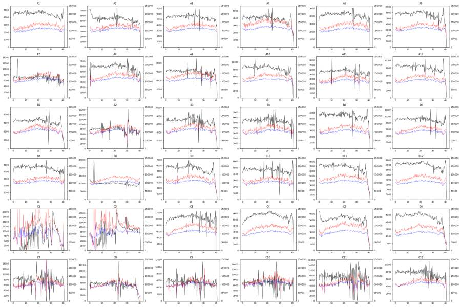
24
tool call · Bash
cd /task; cat > /task/work/rateqc.py <<'EOF'
import flowkit as fk, numpy as np, pandas as pd
wells=[f'{r}{c}' for r in 'ABC' for c in range(1,13)]
fn=lambda w:f'/task/inputs/raw/Caspase_KO_RNAswap-rep2_caspase_Group_{w}.fcs'
rows=[]
for w in wells:
s=fk.Sample(fn(w)); d=s.as_dataframe(source='raw'); d.columns=s.pnn_labels
t=d['Time'].values
bw=0.5
h,b=np.histogram(t,np.arange(0,40.5,bw)) # exclude final partial second
med=np.median(h)
idx=np.digitize(t,b)-1
g=pd.DataFrame({'i':idx,'f':d['FSC-A'],'s':d['SSC-A']})
g=g[(g.i>=0)&(g.i<len(h))].groupby('i').median()
rows.append(dict(well=w, rate_med=med*2, cv=np.std(h)/np.mean(h)*100,
pct_bins_lt50=100*np.mean(h<0.5*med), pct_bins_gt150=100*np.mean(h>1.5*med),
pct_bins_lt20=100*np.mean(h<0.2*med),
maxgap=np.diff(np.sort(t)).max(),
fsc_cv=100*g.f.std()/g.f.mean(), ssc_cv=100*g.s.std()/g.s.mean(),
first_evt=t.min(), last_evt=t.max()))
df=pd.DataFrame(rows).set_index('well'); print(df.round(2).to_string()); df.to_csv('/task/work/rateqc.csv')
EOF
python /task/work/rateqc.py25
tool output
rate_med cv pct_bins_lt50 pct_bins_gt150 pct_bins_lt20 maxgap fsc_cv ssc_cv first_evt last_evt well A1 4543.0 6.07 0.00 0.00 0.00 0.01 7.44 9.49 0.01 40.89 A2 5454.0 8.89 0.00 0.00 0.00 0.04 6.45 9.00 0.01 40.89 A3 5508.0 5.22 0.00 0.00 0.00 0.02 6.26 8.25 0.01 40.96 A4 4026.0 8.86 0.00 0.00 0.00 0.02 6.01 8.43 0.01 41.08 A5 4245.0 7.46 0.00 0.00 0.00 0.07 6.87 9.83 0.01 40.86 A6 5833.0 8.23 0.00 0.00 0.00 0.03 6.12 9.53 0.01 40.90 A7 7039.0 13.44 0.00 1.25 0.00 0.07 7.34 11.17 0.01 40.65 A8 5929.0 9.39 0.00 0.00 0.00 0.08 7.01 11.53 0.01 40.94 A9 6122.0 8.70 0.00 0.00 0.00 0.05 5.85 9.38 0.01 40.94 A10 8496.0 8.79 0.00 0.00 0.00 0.03 5.52 8.83 0.01 40.64 A11 5705.0 8.53 0.00 0.00 0.00 0.09 7.79 11.70 0.01 40.95 A12 8425.0 8.27 0.00 0.00 0.00 0.03 6.70 10.54 0.01 40.90 B1 6488.0 9.17 0.00 0.00 0.00 0.09 7.86 12.65 0.01 40.98 B2 8093.0 16.48 2.50 0.00 1.25 0.14 9.65 16.03 0.01 40.87 B3 6923.0 9.82 0.00 0.00 0.00 0.08 7.64 12.75 0.01 40.88 B4 5430.0 8.33 0.00 0.00 0.00 0.02 7.54 11.47 0.01 40.93 B5 5651.0 7.29 0.00 0.00 0.00 0.04 7.29 10.55 0.01 41.00 B6 9172.0 6.00 0.00 0.00 0.00 0.03 7.06 11.15 0.01 40.87 B7 4691.0 6.50 0.00 0.00 0.00 0.02 5.90 7.95 0.01 41.00 B8 10008.0 16.39 0.00 1.25 0.00 0.01 6.23 9.31 0.01 40.65 B9 5655.0 11.20 1.25 0.00 0.00 0.02 7.74 11.33 0.01 40.96 B10 4658.0 8.23 0.00 0.00 0.00 0.18 6.61 9.43 0.01 40.94 B11 7046.0 12.51 1.25 0.00 0.00 0.03 6.95 10.29 0.01 40.94 B12 7201.0 7.30 0.00 0.00 0.00 0.01 6.85 10.35 0.01 40.82 C1 5640.0 85.09 33.75 33.75 23.75 1.28 25.82 37.52 0.14 40.72 C2 8557.0 53.81 22.50 5.00 13.75 0.41 19.83 68.28 0.02 40.93 C3 10485.0 8.36 0.00 0.00 0.00 0.04 8.07 13.13 0.01 40.74 C4 5725.0 8.15 0.00 0.00 0.00 0.01 8.36 12.11 0.01 40.97 C5 5199.0 11.95 1.25 0.00 0.00 0.04 9.18 13.46 0.01 40.91 C6 4888.0 13.23 1.25 0.00 0.00 0.03 8.02 11.97 0.01 41.02 C7 8024.0 23.19 3.75 0.00 2.50 0.34 11.02 17.46 0.01 40.93 C8 5618.0 22.01 5.00 1.25 1.25 0.32 14.01 20.03 0.01 40.81 C9 5510.0 17.91 1.25 1.25 0.00 0.34 9.92 16.19 0.01 40.87 C10 6976.0 16.73 2.50 0.00 1.25 0.13 8.80 15.01 0.01 40.74 C11 9199.0 20.81 5.00 0.00 1.25 0.14 11.11 17.51 0.01 40.91 C12 7790.0 10.08 0.00 0.00 0.00 0.05 7.44 11.94 0.01 40.88
27
tool call · Bash
cd /task; cat > /task/work/common.py <<'EOF'
import flowkit as fk, numpy as np, pandas as pd
wells=[f'{r}{c}' for r in 'ABC' for c in range(1,13)]
fn=lambda w:f'/task/inputs/raw/Caspase_KO_RNAswap-rep2_caspase_Group_{w}.fcs'
_cache={}
def load(w):
if w not in _cache:
s=fk.Sample(fn(w)); d=s.as_dataframe(source='raw'); d.columns=s.pnn_labels
_cache[w]=d
return _cache[w]
EOF
cat > /task/work/scatter.py <<'EOF'
import sys; sys.path.insert(0,'/task/work')
from common import *
import matplotlib; matplotlib.use('Agg'); import matplotlib.pyplot as plt
from matplotlib.colors import LogNorm
x,y=sys.argv[1],sys.argv[2]; out=sys.argv[3]
lim=float(sys.argv[4]) if len(sys.argv)>4 else 1048576
fig,axes=plt.subplots(6,6,figsize=(30,30))
for ax,w in zip(axes.flat,wells):
d=load(w)
ax.hist2d(d[x],d[y],bins=200,range=[[0,lim],[0,lim]],norm=LogNorm(),cmap='jet')
ax.set_title(w)
plt.tight_layout(); plt.savefig(out,dpi=40)
EOF
python /task/work/scatter.py FSC-A SSC-A /task/work/fsc_ssc.png28
tool output
(Bash completed with no output)
29
tool call · Read
{
"file_path": "/task/work/fsc_ssc.png"
}30
tool output
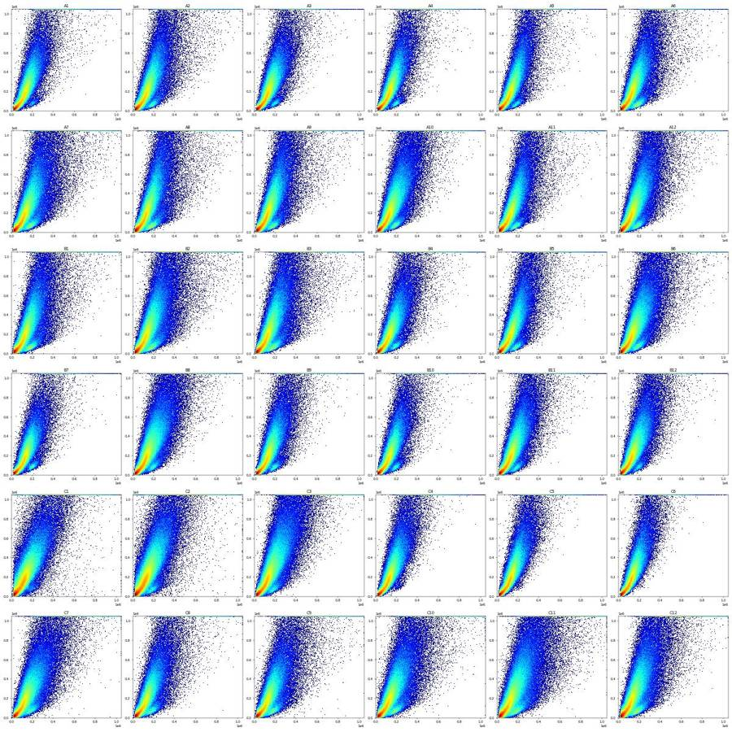
32
agent
Flow-rate QC marks C1 and C2 as clogged (rate falls under 20% of median in 24% and 14% of 0.5-s bins). Now I'm zooming into the FSC/SSC plots to place the Cells gate.
33
tool call · Bash
cd /task; cat > /task/work/one.py <<'EOF'
import sys; sys.path.insert(0,'/task/work')
from common import *
import matplotlib; matplotlib.use('Agg'); import matplotlib.pyplot as plt
from matplotlib.colors import LogNorm
ws=sys.argv[1].split(','); out=sys.argv[2]
fig,axes=plt.subplots(len(ws),3,figsize=(21,7*len(ws)),squeeze=False)
for row,w in zip(axes,ws):
d=load(w)
row[0].hist2d(d['FSC-A'],d['SSC-A'],bins=300,range=[[0,6e5],[0,1.05e6]],norm=LogNorm(),cmap='jet'); row[0].set_title(w+' FSC-A vs SSC-A lin')
row[1].hist2d(d['FSC-A'],np.log10(d['SSC-A'].clip(1)),bins=300,range=[[0,6e5],[3,6.1]],norm=LogNorm(),cmap='jet'); row[1].set_title('FSC-A vs log SSC-A')
row[2].hist(d['FSC-A'],bins=400,range=(0,6e5),histtype='step'); row[2].set_yscale('log'); row[2].set_title('FSC-A hist')
for a in row[:2]: a.grid(True,alpha=0.3)
plt.tight_layout(); plt.savefig(out,dpi=45)
EOF
python /task/work/one.py A1,C7,C10 /task/work/one1.png34
tool output
(Bash completed with no output)
35
tool call · Read
{
"file_path": "/task/work/one1.png"
}36
tool output
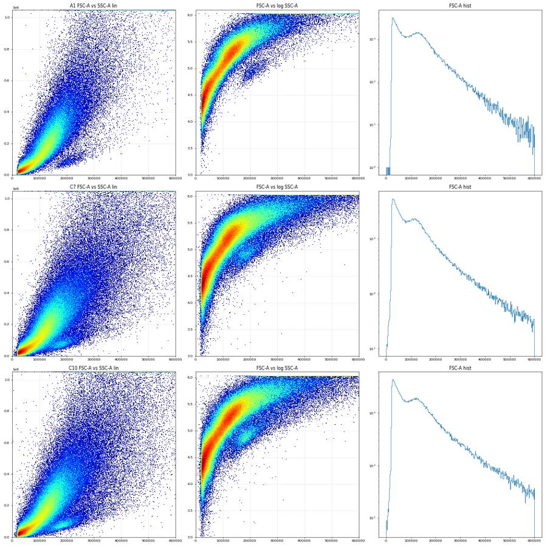
38
tool call · Bash
cd /task; cat > /task/work/fluor.py <<'EOF'
import sys; sys.path.insert(0,'/task/work')
from common import *
import matplotlib; matplotlib.use('Agg'); import matplotlib.pyplot as plt
from matplotlib.colors import LogNorm
xf=fk.transforms.LogicleTransform(param_t=1048576, param_w=1.0, param_m=6.0, param_a=0)
def tr(v): return xf.apply(np.asarray(v,dtype=float).reshape(-1,1)).ravel() if False else xf.apply(np.asarray(v,dtype=float))
ws=sys.argv[1].split(','); out=sys.argv[2]
fig,axes=plt.subplots(len(ws),4,figsize=(28,6*len(ws)),squeeze=False)
for row,w in zip(axes,ws):
d=load(w)
# crude cell gate
m=(d['FSC-A']>60000)
b=tr(d['BL1-A'].values[m]); r=tr(d['RL3-A'].values[m])
row[0].hist2d(b,r,bins=300,range=[[0,1],[0,1]],norm=LogNorm(),cmap='jet'); row[0].set_title(w+' BL1-A vs RL3-A (logicle)'); row[0].grid(True,alpha=.3)
row[1].hist(b,bins=300,range=(0,1),histtype='step'); row[1].set_yscale('log'); row[1].set_title('BL1-A'); row[1].grid(True,alpha=.3)
row[2].hist(r,bins=300,range=(0,1),histtype='step'); row[2].set_yscale('log'); row[2].set_title('RL3-A'); row[2].grid(True,alpha=.3)
row[3].hist2d(d['FSC-A'].values[m],r,bins=300,range=[[0,6e5],[0,1]],norm=LogNorm(),cmap='jet'); row[3].set_title('FSC-A vs RL3-A')
plt.tight_layout(); plt.savefig(out,dpi=40)
EOF
python /task/work/fluor.py C10,C11,C12,C7 /task/work/fl1.png39
tool output
(Bash completed with no output)
40
tool call · Read
{
"file_path": "/task/work/fl1.png"
}41
tool output
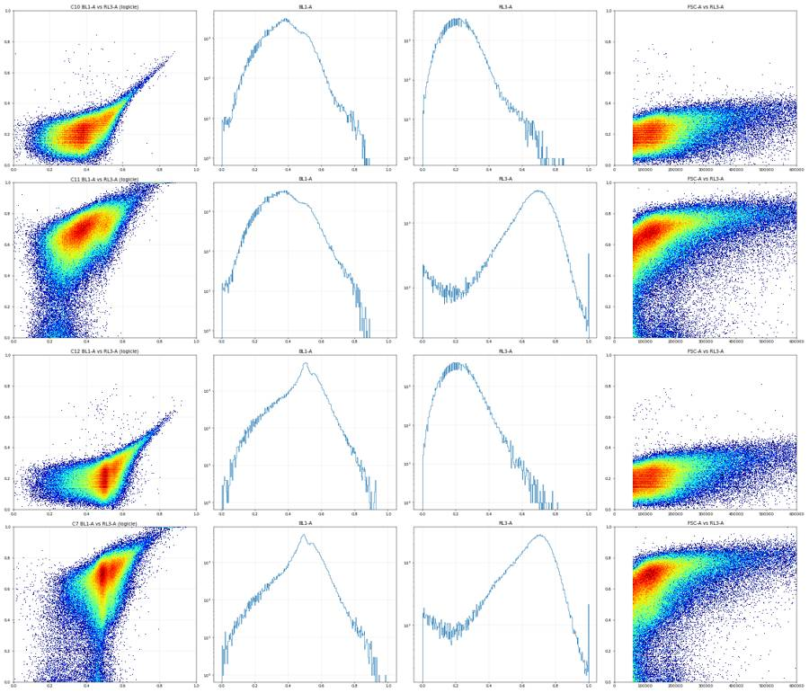
43
tool call · Bash
cd /task; cat > /task/work/fscbylive.py <<'EOF'
import sys; sys.path.insert(0,'/task/work')
from common import *
import matplotlib; matplotlib.use('Agg'); import matplotlib.pyplot as plt
from matplotlib.colors import LogNorm
xf=fk.transforms.LogicleTransform(param_t=1048576, param_w=1.0, param_m=6.0, param_a=0)
tr=lambda v: xf.apply(np.asarray(v,dtype=float))
ws=sys.argv[1].split(','); out=sys.argv[2]
fig,axes=plt.subplots(len(ws),4,figsize=(28,6*len(ws)),squeeze=False)
for row,w in zip(axes,ws):
d=load(w); r=tr(d['RL3-A'].values); b=tr(d['BL1-A'].values)
lo=r<0.4; hi=r>0.55
for a,m,t in [(row[0],lo,'RL3 low'),(row[1],hi,'RL3 high')]:
a.hist2d(d['FSC-A'][m],np.log10(d['SSC-A'][m].clip(1)),bins=250,range=[[0,6e5],[3,6.1]],norm=LogNorm(),cmap='jet'); a.set_title(f'{w} {t} n={m.sum()}'); a.grid(True,alpha=.3)
row[2].hist2d(d['FSC-A'],r,bins=250,range=[[0,4e5],[0,1]],norm=LogNorm(),cmap='jet'); row[2].set_title('all events FSC-A vs RL3'); row[2].grid(True,alpha=.3)
row[3].hist2d(np.log10(d['SSC-A'].clip(1)),r,bins=250,range=[[3,6.1],[0,1]],norm=LogNorm(),cmap='jet'); row[3].set_title('logSSC vs RL3'); row[3].grid(True,alpha=.3)
plt.tight_layout(); plt.savefig(out,dpi=40)
EOF
python /task/work/fscbylive.py C11,C7,A1 /task/work/fl2.png44
tool output
(Bash completed with no output)
45
tool call · Read
{
"file_path": "/task/work/fl2.png"
}46
tool output
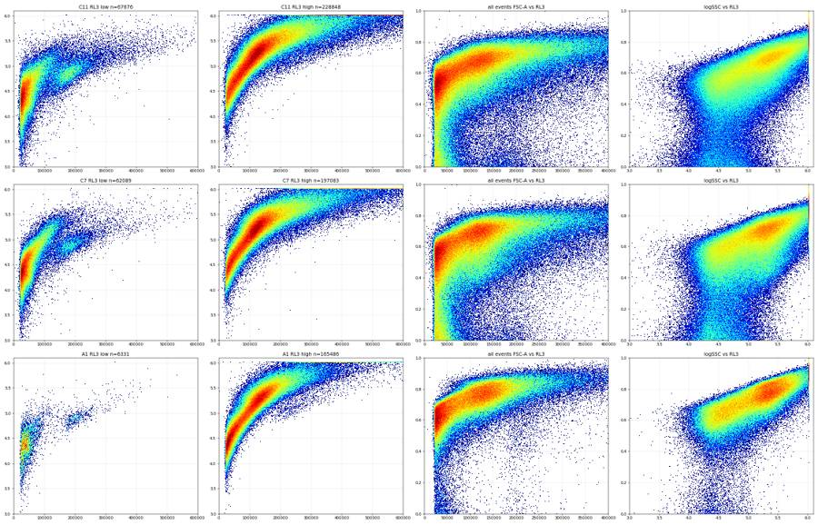
48
agent
Most events are Zombie NIR-bright (dead). Live cells form a high-FSC, lower-SSC island, and low-FSC events (<~60k) are debris. Next I'll check the raw value ranges and the singlet plots.
49
tool call · Bash
cd /task; cat > /task/work/rng.py <<'EOF'
import sys; sys.path.insert(0,'/task/work')
from common import *
for w in ['A1','C7','C10','C11','C12','C4']:
d=load(w)
print(w, {c:(round(d[c].min()),np.percentile(d[c],[0.1,1,50,99,99.9]).round(0).tolist(), int((d[c]<=0).sum())) for c in ['BL1-A','RL3-A','SSC-A','SSC-H','FSC-A']})
EOF
python /task/work/rng.py50
tool output
A1 {'BL1-A': (-116, [-45.0, -4.0, 647.0, 6433.0, 20701.0], 2192), 'RL3-A': (-4517, [-773.0, -224.0, 22299.0, 323190.0, 830533.0], 3947), 'SSC-A': (-20644, [4421.0, 11048.0, 127926.0, 1048575.0, 1048575.0], 35), 'SSC-H': (569, [6329.0, 12155.0, 112100.0, 694244.0, 1048575.0], 0), 'FSC-A': (1267, [21247.0, 23276.0, 105152.0, 482759.0, 1048575.0], 0)}
C7 {'BL1-A': (-65536, [-5342.0, -45.0, 730.0, 12501.0, 72498.0], 8234), 'RL3-A': (-65536, [-30962.0, -775.0, 4593.0, 169626.0, 805322.0], 35823), 'SSC-A': (-65536, [-65536.0, 6097.0, 109047.0, 1048575.0, 1048575.0], 1730), 'SSC-H': (0, [0.0, 9882.0, 95097.0, 753468.0, 1048575.0], 464), 'FSC-A': (-65536, [12288.0, 22267.0, 99947.0, 746644.0, 1048575.0], 161)}
C10 {'BL1-A': (-62565, [-1544.0, -54.0, 169.0, 4164.0, 27836.0], 19257), 'RL3-A': (-6623, [-198.0, -98.0, 24.0, 395.0, 3605.0], 91731), 'SSC-A': (-65536, [-65536.0, 6154.0, 123356.0, 1048575.0, 1048575.0], 1302), 'SSC-H': (0, [0.0, 9386.0, 107278.0, 875617.0, 1048575.0], 316), 'FSC-A': (-65536, [15686.0, 22527.0, 108304.0, 806608.0, 1048575.0], 71)}
C11 {'BL1-A': (-58534, [-1899.0, -63.0, 140.0, 5690.0, 35260.0], 31436), 'RL3-A': (-65536, [-23394.0, -924.0, 4755.0, 194101.0, 958865.0], 40591), 'SSC-A': (-65536, [-65536.0, 3710.0, 113672.0, 1048575.0, 1048575.0], 2593), 'SSC-H': (0, [0.0, 9151.0, 97769.0, 1008051.0, 1048575.0], 587), 'FSC-A': (-65536, [13029.0, 22016.0, 103894.0, 928828.0, 1048575.0], 135)}
C12 {'BL1-A': (-17112, [-349.0, -22.0, 789.0, 12591.0, 57589.0], 6445), 'RL3-A': (-622, [-143.0, -96.0, 23.0, 416.0, 2392.0], 103083), 'SSC-A': (-65536, [-17083.0, 7066.0, 115752.0, 1048575.0, 1048575.0], 831), 'SSC-H': (0, [3462.0, 9532.0, 100271.0, 876998.0, 1048575.0], 123), 'FSC-A': (-61941, [17911.0, 22529.0, 105332.0, 727452.0, 1048575.0], 34)}
C4 {'BL1-A': (-31221, [-441.0, 5.0, 672.0, 11723.0, 100081.0], 1985), 'RL3-A': (-21926, [-395.0, -90.0, 11772.0, 171431.0, 374221.0], 3902), 'SSC-A': (-65536, [4663.0, 11070.0, 133976.0, 1048575.0, 1048575.0], 70), 'SSC-H': (0, [7068.0, 12586.0, 119515.0, 681984.0, 1048575.0], 5), 'FSC-A': (-26361, [20823.0, 22990.0, 106470.0, 457924.0, 947588.0], 5)}52
tool call · Bash
cd /task; cat > /task/work/sat.py <<'EOF'
import sys; sys.path.insert(0,'/task/work')
from common import *
rows=[]
for w in wells:
d=load(w); r={'well':w,'n':len(d)}
for c in ['FSC-A','SSC-A','BL1-A','RL3-A','FSC-H','SSC-H']:
r[c+'_neg65k%']=100*np.mean(d[c]<=-65535)
r[c+'_top%']=100*np.mean(d[c]>=1048575)
r['SSCH0%']=100*np.mean(d['SSC-H']<=0)
r['any_neg65k%']=100*np.mean((d[['FSC-A','SSC-A','BL1-A','RL3-A']]<=-65535).any(axis=1))
rows.append(r)
df=pd.DataFrame(rows).set_index('well'); pd.set_option('display.width',300); pd.set_option('display.max_columns',40)
print(df.round(3).to_string())
EOF
python /task/work/sat.py53
tool output
n FSC-A_neg65k% FSC-A_top% SSC-A_neg65k% SSC-A_top% BL1-A_neg65k% BL1-A_top% RL3-A_neg65k% RL3-A_top% FSC-H_neg65k% FSC-H_top% SSC-H_neg65k% SSC-H_top% SSCH0% any_neg65k% well A1 183353 0.000 0.148 0.000 1.823 0.000 0.000 0.000 0.061 0.0 0.0 0.0 0.191 0.000 0.000 A2 221770 0.000 0.255 0.007 2.530 0.000 0.000 0.003 0.135 0.0 0.0 0.0 0.366 0.012 0.008 A3 222545 0.001 0.070 0.012 1.210 0.000 0.000 0.005 0.061 0.0 0.0 0.0 0.102 0.010 0.013 A4 160440 0.000 0.209 0.008 2.344 0.000 0.000 0.000 0.113 0.0 0.0 0.0 0.348 0.011 0.008 A5 169911 0.000 0.099 0.003 2.247 0.000 0.000 0.000 0.014 0.0 0.0 0.0 0.230 0.004 0.003 A6 230857 0.000 0.107 0.003 1.788 0.000 0.000 0.000 0.047 0.0 0.0 0.0 0.170 0.003 0.003 A7 282723 0.000 0.334 0.016 3.193 0.000 0.000 0.005 0.106 0.0 0.0 0.0 0.451 0.017 0.019 A8 236938 0.000 0.236 0.012 3.636 0.000 0.000 0.001 0.041 0.0 0.0 0.0 0.468 0.014 0.013 A9 241833 0.000 0.192 0.009 2.816 0.000 0.000 0.002 0.064 0.0 0.0 0.0 0.331 0.007 0.009 A10 335810 0.000 0.111 0.005 2.246 0.000 0.000 0.000 0.036 0.0 0.0 0.0 0.222 0.004 0.005 A11 228556 0.000 0.161 0.007 2.507 0.000 0.000 0.002 0.028 0.0 0.0 0.0 0.302 0.010 0.007 A12 330844 0.000 0.119 0.011 2.351 0.000 0.000 0.000 0.031 0.0 0.0 0.0 0.242 0.010 0.011 B1 254845 0.000 0.228 0.009 3.067 0.000 0.000 0.002 0.060 0.0 0.0 0.0 0.443 0.012 0.009 B2 319449 0.000 0.339 0.022 3.147 0.000 0.000 0.001 0.008 0.0 0.0 0.0 0.419 0.028 0.023 B3 275473 0.000 0.249 0.032 3.057 0.000 0.000 0.000 0.010 0.0 0.0 0.0 0.367 0.024 0.032 B4 219859 0.000 0.280 0.024 2.348 0.000 0.000 0.008 0.165 0.0 0.0 0.0 0.410 0.021 0.026 B5 225148 0.000 0.156 0.005 2.559 0.000 0.000 0.000 0.026 0.0 0.0 0.0 0.318 0.005 0.005 B6 369018 0.000 0.155 0.008 2.151 0.000 0.000 0.001 0.015 0.0 0.0 0.0 0.240 0.008 0.008 B7 186946 0.000 0.107 0.003 1.326 0.000 0.000 0.000 0.032 0.0 0.0 0.0 0.135 0.002 0.003 B8 412353 0.000 0.097 0.002 1.915 0.000 0.000 0.000 0.005 0.0 0.0 0.0 0.140 0.002 0.002 B9 219409 0.000 0.120 0.007 2.023 0.000 0.000 0.000 0.017 0.0 0.0 0.0 0.206 0.003 0.007 B10 187472 0.000 0.079 0.013 1.653 0.000 0.000 0.006 0.043 0.0 0.0 0.0 0.166 0.011 0.013 B11 271438 0.000 0.065 0.001 1.826 0.000 0.000 0.000 0.006 0.0 0.0 0.0 0.119 0.001 0.001 B12 286933 0.000 0.053 0.002 1.610 0.000 0.000 0.000 0.003 0.0 0.0 0.0 0.103 0.002 0.002 C1 250794 0.054 0.329 0.696 2.783 0.000 0.000 0.000 0.025 0.0 0.0 0.0 0.288 0.519 0.743 C2 305451 0.033 0.309 0.476 2.943 0.000 0.000 0.003 0.049 0.0 0.0 0.0 0.347 0.339 0.503 C3 418796 0.000 0.267 0.030 3.244 0.000 0.000 0.000 0.013 0.0 0.0 0.0 0.329 0.025 0.030 C4 230134 0.000 0.078 0.004 1.787 0.000 0.013 0.000 0.005 0.0 0.0 0.0 0.141 0.002 0.004 C5 206789 0.000 0.060 0.000 1.807 0.000 0.024 0.000 0.006 … [1,447 more characters not shown]
55
tool call · Bash
cd /task; cat > /task/work/singlet.py <<'EOF'
import sys; sys.path.insert(0,'/task/work')
from common import *
import matplotlib; matplotlib.use('Agg'); import matplotlib.pyplot as plt
from matplotlib.colors import LogNorm
ws=sys.argv[1].split(','); out=sys.argv[2]
fig,axes=plt.subplots(len(ws),3,figsize=(21,7*len(ws)),squeeze=False)
for row,w in zip(axes,ws):
d=load(w); m=d['FSC-A']>60000
row[0].hist2d(d['SSC-H'][m],d['SSC-A'][m],bins=300,range=[[0,1.05e6],[0,1.05e6]],norm=LogNorm(),cmap='jet'); row[0].set_title(w+' SSC-H vs SSC-A lin')
row[1].hist2d(np.log10(d['SSC-H'][m].clip(1)),np.log10(d['SSC-A'][m].clip(1)),bins=300,range=[[3.5,6.1],[3.5,6.1]],norm=LogNorm(),cmap='jet'); row[1].set_title('log-log')
ratio=d['SSC-A'][m]/d['SSC-H'][m].clip(1)
row[2].hist2d(np.log10(d['SSC-H'][m].clip(1)),ratio,bins=300,range=[[3.5,6.1],[0.5,2.5]],norm=LogNorm(),cmap='jet'); row[2].set_title('SSC-A/SSC-H vs logSSC-H')
for a in row: a.grid(True,alpha=.3)
plt.tight_layout(); plt.savefig(out,dpi=45)
EOF
python /task/work/singlet.py A1,C7,C1 /task/work/sing1.png56
tool output
(Bash completed with no output)
57
tool call · Read
{
"file_path": "/task/work/sing1.png"
}58
tool output
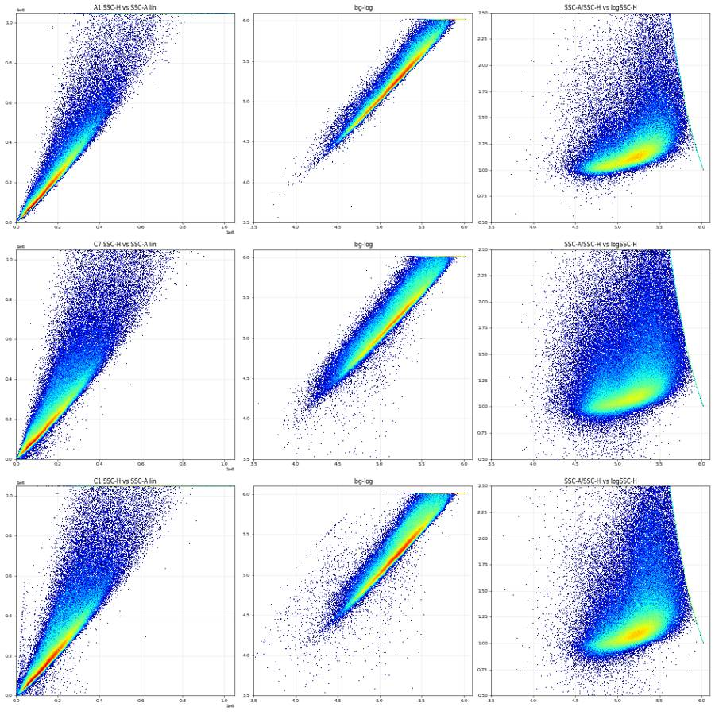
60
tool call · Bash
cd /task; cat > /task/work/ratio.py <<'EOF'
import sys; sys.path.insert(0,'/task/work')
from common import *
d=pd.concat([load(w) for w in ['A1','A5','B7','C3','C7','C12']])
m=(d['FSC-A']>60000)&(d['SSC-A']<1.0e6)&(d['SSC-A']>0)
d=d[m]; r=d['SSC-A']/d['SSC-H'].clip(1)
bins=[0,2e4,4e4,7e4,1e5,1.5e5,2e5,3e5,4e5,5e5,6e5,8e5,1.1e6]
cut=pd.cut(d['SSC-H'],bins)
print(r.groupby(cut).describe(percentiles=[.01,.05,.25,.5,.75,.9,.95,.99]).round(3).to_string())
import matplotlib; matplotlib.use('Agg'); import matplotlib.pyplot as plt
fig,ax=plt.subplots(1,1,figsize=(8,5)); ax.hist(r,bins=400,range=(0.5,3),histtype='step'); ax.set_yscale('log'); ax.grid(True); plt.savefig('/task/work/ratiohist.png',dpi=60)
EOF
python /task/work/ratio.py61
tool output
/task/work/ratio.py:8: FutureWarning: The default of observed=False is deprecated and will be changed to True in a future version of pandas. Pass observed=False to retain current behavior or observed=True to adopt the future default and silence this warning.
print(r.groupby(cut).describe(percentiles=[.01,.05,.25,.5,.75,.9,.95,.99]).round(3).to_string())
count mean std min 1% 5% 25% 50% 75% 90% 95% 99% max
SSC-H
(0.0, 20000.0] 3118.0 1.211 0.393 0.046 0.299 0.684 0.977 1.125 1.416 1.737 1.925 2.363 4.286
(20000.0, 40000.0] 25310.0 1.218 0.352 0.001 0.635 0.861 0.992 1.098 1.376 1.731 1.908 2.333 4.574
(40000.0, 70000.0] 118746.0 1.156 0.286 0.006 0.820 0.926 0.998 1.057 1.208 1.507 1.759 2.236 6.256
(70000.0, 100000.0] 136358.0 1.161 0.281 0.010 0.881 0.958 1.016 1.065 1.191 1.472 1.746 2.287 9.545
(100000.0, 150000.0] 207359.0 1.196 0.293 0.001 0.934 0.996 1.051 1.098 1.204 1.507 1.808 2.397 6.638
(150000.0, 200000.0] 189965.0 1.258 0.327 0.059 0.990 1.036 1.091 1.143 1.268 1.628 1.955 2.581 6.225
(200000.0, 300000.0] 225454.0 1.367 0.385 0.000 1.031 1.075 1.141 1.216 1.428 1.876 2.196 2.894 4.885
(300000.0, 400000.0] 94346.0 1.483 0.370 0.006 1.074 1.127 1.223 1.348 1.630 2.034 2.293 2.706 3.320
(400000.0, 500000.0] 38662.0 1.516 0.282 0.542 1.111 1.174 1.298 1.443 1.687 1.949 2.072 2.283 2.474
(500000.0, 600000.0] 14647.0 1.483 0.185 0.602 1.135 1.201 1.341 1.468 1.615 1.740 1.808 1.907 1.993
(600000.0, 800000.0] 4317.0 1.393 0.118 1.023 1.135 1.199 1.307 1.393 1.481 1.551 1.585 1.630 1.664
(800000.0, 1100000.0] 16.0 1.155 0.045 1.062 1.065 1.077 1.130 1.164 1.183 1.201 1.212 1.229 1.23362
tool call · Read
{
"file_path": "/task/work/ratiohist.png"
}63
tool output
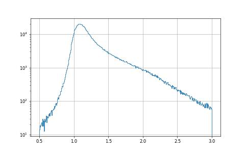
65
agent
Singlets sit at SSC-A/SSC-H ≈ 1.05–1.2, and that ratio rises with SSC-H, so the upper edge of the singlet polygon will follow it. Now I'm fixing where the debris cutoff on FSC-A falls.
66
tool call · Bash
cd /task; cat > /task/work/cellsgate.py <<'EOF'
import sys; sys.path.insert(0,'/task/work')
from common import *
import matplotlib; matplotlib.use('Agg'); import matplotlib.pyplot as plt
from matplotlib.colors import LogNorm
xf=fk.transforms.LogicleTransform(param_t=1048576, param_w=1.0, param_m=6.0, param_a=0)
tr=lambda v: xf.apply(np.asarray(v,dtype=float))
ws=sys.argv[1].split(','); out=sys.argv[2]
poly=np.array(eval(sys.argv[3])) if len(sys.argv)>3 else None
fig,axes=plt.subplots(len(ws),3,figsize=(21,6*len(ws)),squeeze=False)
for row,w in zip(axes,ws):
d=load(w); r=tr(d['RL3-A'].values)
for a,m,t in [(row[0],np.ones(len(d),bool),'all'),(row[1],r<0.4,'RL3 low'),(row[2],r>0.55,'RL3 hi')]:
a.hist2d(d['FSC-A'][m],d['SSC-A'][m],bins=300,range=[[0,4e5],[0,1.05e6]],norm=LogNorm(),cmap='jet'); a.set_title(f'{w} {t}')
if poly is not None: a.plot(*np.vstack([poly,poly[:1]]).T,'k-',lw=1.5)
a.grid(True,alpha=.3)
plt.tight_layout(); plt.savefig(out,dpi=45)
EOF
python /task/work/cellsgate.py A1,C11 /task/work/cg1.png "[(55000,0),(55000,2e5),(150000,1.04e6),(1.04e6,1.04e6),(1.04e6,0)]"67
tool output
(Bash completed with no output)
68
tool call · Read
{
"file_path": "/task/work/cg1.png"
}69
tool output
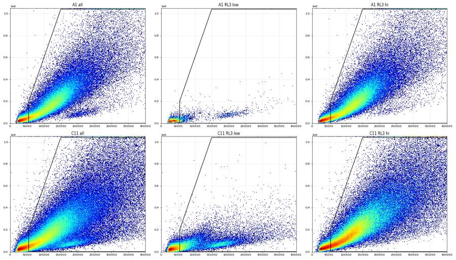
71
tool call · Bash
cd /task; cat > /task/work/cellsgate2.py <<'EOF'
import sys; sys.path.insert(0,'/task/work')
from common import *
import matplotlib; matplotlib.use('Agg'); import matplotlib.pyplot as plt
from matplotlib.colors import LogNorm
xf=fk.transforms.LogicleTransform(param_t=1048576, param_w=1.0, param_m=6.0, param_a=0)
tr=lambda v: xf.apply(np.asarray(v,dtype=float))
ws=sys.argv[1].split(','); out=sys.argv[2]
poly=np.array(eval(sys.argv[3])) if len(sys.argv)>3 else None
fig,axes=plt.subplots(len(ws),3,figsize=(21,6*len(ws)),squeeze=False)
for row,w in zip(axes,ws):
d=load(w); r=tr(d['RL3-A'].values)
for a,m,t in [(row[0],np.ones(len(d),bool),'all'),(row[1],r<0.4,'RL3 low'),(row[2],r>0.55,'RL3 hi')]:
a.hist2d(d['FSC-A'][m],np.log10(d['SSC-A'][m].clip(1)),bins=300,range=[[0,4e5],[3.5,6.05]],norm=LogNorm(),cmap='jet'); a.set_title(f'{w} {t}')
if poly is not None:
p=np.vstack([poly,poly[:1]]);
# densify edges for log display
pts=[]
for i in range(len(p)-1):
for f in np.linspace(0,1,50): pts.append(p[i]*(1-f)+p[i+1]*f)
pts=np.array(pts); a.plot(pts[:,0],np.log10(pts[:,1].clip(3000)),'k-',lw=1.5)
a.grid(True,alpha=.3)
plt.tight_layout(); plt.savefig(out,dpi=45)
EOF
python /task/work/cellsgate2.py A1,C11,B6 /task/work/cg2.png "[(55000,0),(55000,2e5),(150000,1.04e6),(1.04e6,1.04e6),(1.04e6,0)]"72
tool output
(Bash completed with no output)
73
tool call · Read
{
"file_path": "/task/work/cg2.png"
}74
tool output
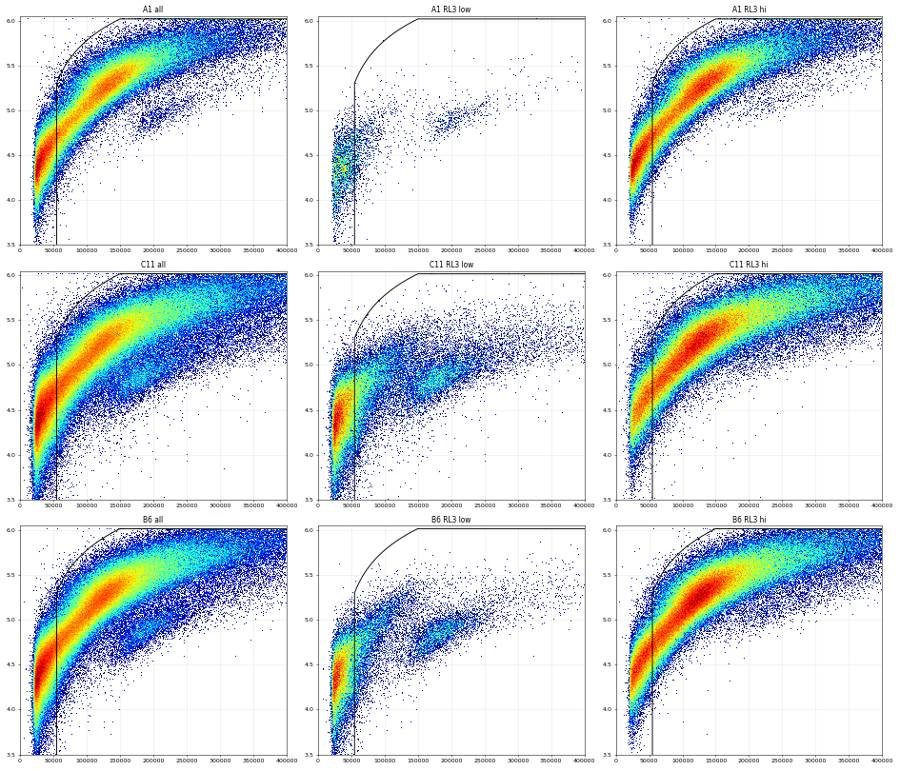
76
tool call · Bash
cd /task; cat > /task/work/gates_def.py <<'EOF'
import numpy as np
CELLS=[(60000,1000),(60000,350000),(160000,1040000),(1040000,1040000),(1040000,1000)]
SING=[(0,0),(1e5,1.3e5),(2e5,2.76e5),(3e5,4.5e5),(4.5e5,7.2e5),(6.5e5,1.045e6),(1.05e6,1.045e6),(1.05e6,8.4e5)]
from matplotlib.path import Path
def inpoly(x,y,poly): return Path(np.array(poly)).contains_points(np.c_[x,y])
EOF
cat > /task/work/fl3.py <<'EOF'
import sys; sys.path.insert(0,'/task/work')
from common import *; from gates_def import *
import matplotlib; matplotlib.use('Agg'); import matplotlib.pyplot as plt
from matplotlib.colors import LogNorm
xf=fk.transforms.LogicleTransform(param_t=1048576, param_w=1.0, param_m=6.0, param_a=0)
tr=lambda v: xf.apply(np.asarray(v,dtype=float))
ws=sys.argv[1].split(','); out=sys.argv[2]; nc=int(sys.argv[3]) if len(sys.argv)>3 else 4
nr=int(np.ceil(len(ws)/nc))
fig,axes=plt.subplots(nr,nc,figsize=(7*nc,6.5*nr),squeeze=False)
ticks=[-1000,0,100,1000,1e4,1e5,1e6]
for a,w in zip(axes.flat,ws):
d=load(w); m=inpoly(d['FSC-A'],d['SSC-A'],CELLS)&inpoly(d['SSC-H'],d['SSC-A'],SING)
b=tr(d['BL1-A'][m]); r=tr(d['RL3-A'][m])
a.hist2d(b,r,bins=250,range=[[0.15,1],[0.,1]],norm=LogNorm(),cmap='jet'); a.set_title(f'{w} n={m.sum()}')
a.set_xticks(tr(ticks)); a.set_xticklabels([str(int(t)) for t in ticks]); a.set_yticks(tr(ticks)); a.set_yticklabels([str(int(t)) for t in ticks])
a.grid(True,alpha=.4)
plt.tight_layout(); plt.savefig(out,dpi=40)
EOF
python /task/work/fl3.py C10,C11,C12,C7,C8,C9,C4,A1 /task/work/fl3.png77
tool output
(Bash completed with no output)
78
tool call · Read
{
"file_path": "/task/work/fl3.png"
}79
tool output
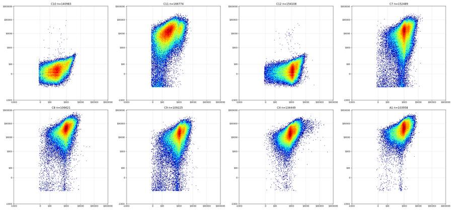
81
agent
The fluorescence plots clip negative values, so I'm redoing them with a wider logicle range and overlaid 1-D histograms of the controls to pick the BL1-A and RL3-A cut points.
82
tool call · Bash
cd /task; cat > /task/work/hist1d.py <<'EOF'
import sys; sys.path.insert(0,'/task/work')
from common import *; from gates_def import *
import matplotlib; matplotlib.use('Agg'); import matplotlib.pyplot as plt
xf=fk.transforms.LogicleTransform(param_t=1048576, param_w=1.5, param_m=6.0, param_a=0)
tr=lambda v: xf.apply(np.asarray(v,dtype=float))
ticks=[-1000,-100,0,100,300,1000,3000,1e4,1e5,1e6]
def sing(w):
d=load(w); m=inpoly(d['FSC-A'],d['SSC-A'],CELLS)&inpoly(d['SSC-H'],d['SSC-A'],SING); return d[m]
fig,axes=plt.subplots(1,2,figsize=(20,7))
a=axes[0]
for w,lab,sel in [('C10','C10 unstained',None),('C11','C11 Zombie-only, RL3<300',lambda d:d['RL3-A']<300),('C11','C11 Zombie-only, RL3>3000',lambda d:d['RL3-A']>3000),('C12','C12 CellEvent-only all',None),('C7','C7 RL3<300',lambda d:d['RL3-A']<300),('C7','C7 RL3>3000',lambda d:d['RL3-A']>3000)]:
d=sing(w);
if sel is not None: d=d[sel(d)]
a.hist(tr(d['BL1-A']),bins=300,range=(-0.05,1),histtype='step',density=True,label=f'{lab} n={len(d)}',lw=1.5)
a.set_xticks(tr(ticks)); a.set_xticklabels([str(int(t)) for t in ticks]); a.grid(True,alpha=.4); a.legend(); a.set_title('BL1-A'); a.set_yscale('log'); a.set_ylim(1e-2,None)
a=axes[1]
for w,lab in [('C10','C10 unstained'),('C12','C12 CellEvent only'),('C11','C11 Zombie only'),('C7','C7'),('C8','C8'),('C9','C9'),('A1','A1')]:
d=sing(w); a.hist(tr(d['RL3-A']),bins=300,range=(-0.05,1),histtype='step',density=True,label=lab,lw=1.5)
a.set_xticks(tr(ticks)); a.set_xticklabels([str(int(t)) for t in ticks]); a.grid(True,alpha=.4); a.legend(); a.set_title('RL3-A'); a.set_yscale('log'); a.set_ylim(1e-2,None)
plt.tight_layout(); plt.savefig('/task/work/h1d.png',dpi=55)
for w in ['C10','C11','C12','C7']:
d=sing(w)
print(w, 'BL1 pct', np.percentile(d['BL1-A'],[1,5,50,95,99,99.5]).round(0), 'RL3 pct', np.percentile(d['RL3-A'],[1,5,50,95,99,99.5,99.9]).round(0))
d=sing('C11'); dl=d[d['RL3-A']<300]; print('C11 live BL1 pct',np.percentile(dl['BL1-A'],[50,90,95,98,99,99.5]).round(0))
dd=d[d['RL3-A']>3000]; print('C11 dead BL1 pct',np.percentile(dd['BL1-A'],[50,90,95,98,99,99.5]).round(0))
EOF
python /task/work/hist1d.py83
tool output
C10 BL1 pct [ -22. 27. 233. 1294. 2166. 2551.] RL3 pct [-92. -57. 29. 135. 200. 231. 321.] C11 BL1 pct [ -31. 15. 197. 1291. 2203. 2609.] RL3 pct [-6.27000e+02 -1.43000e+02 8.45000e+03 5.08390e+04 8.94090e+04 1.09151e+05 1.56267e+05] C12 BL1 pct [ 7. 105. 1052. 3088. 5008. 5900.] RL3 pct [-93. -58. 27. 131. 197. 229. 345.] C7 BL1 pct [ 14. 147. 974. 3091. 4933. 5771.] RL3 pct [-5.06000e+02 -6.10000e+01 8.22400e+03 5.02900e+04 8.77530e+04 1.05273e+05 1.51904e+05] C11 live BL1 pct [ 56. 166. 246. 472. 694. 994.] C11 dead BL1 pct [ 245. 1009. 1448. 1959. 2380. 2793.]
84
tool call · Read
{
"file_path": "/task/work/h1d.png"
}85
tool output
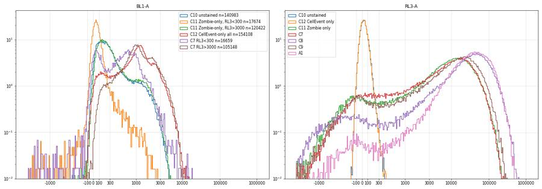
87
tool call · Bash
cd /task; python -c " import flowkit as fk, numpy as np xf=fk.transforms.LogicleTransform(param_t=1048576, param_w=1.0, param_m=6.0, param_a=0) y=np.array([0.,0.1,0.2,0.3,0.35,0.4,0.45,0.5,0.55,0.6,0.7,0.8]) print(dict(zip(y, xf.inverse(y).round(0)))) xf=fk.transforms.LogicleTransform(param_t=1048576, param_w=1.5, param_m=6.0, param_a=0) print(dict(zip(y, xf.inverse(y).round(0)))) "
88
tool output
{0.0: -172.0, 0.1: -52.0, 0.2: 25.0, 0.3: 121.0, 0.35: 204.0, 0.4: 351.0, 0.45: 626.0, 0.5: 1160.0, 0.55: 2212.0, 0.6: 4302.0, 0.7: 16757.0, 0.8: 66300.0}
{0.0: -1664.0, 0.1: -656.0, 0.2: -189.0, 0.3: 189.0, 0.35: 397.0, 0.4: 656.0, 0.45: 1035.0, 0.5: 1664.0, 0.55: 2802.0, 0.6: 4970.0, 0.7: 17551.0, 0.8: 67158.0}90
tool call · Bash
cd /task; cat > /task/work/fl4.py <<'EOF'
import sys; sys.path.insert(0,'/task/work')
from common import *; from gates_def import *
import matplotlib; matplotlib.use('Agg'); import matplotlib.pyplot as plt
from matplotlib.colors import LogNorm
xf=fk.transforms.LogicleTransform(param_t=1048576, param_w=1.5, param_m=6.0, param_a=0)
tr=lambda v: xf.apply(np.asarray(v,dtype=float))
ticks=[-1000,-100,0,100,300,1000,3000,1e4,1e5,1e6]; tl=['-1k','-100','0','100','300','1k','3k','10k','100k','1M']
ws=sys.argv[1].split(','); out=sys.argv[2]
lines=eval(sys.argv[3]) if len(sys.argv)>3 else {}
fig,axes=plt.subplots(len(ws),3,figsize=(21,6.5*len(ws)),squeeze=False)
for row,w in zip(axes,ws):
d=load(w); m=inpoly(d['FSC-A'],d['SSC-A'],CELLS)&inpoly(d['SSC-H'],d['SSC-A'],SING); d=d[m]
b=tr(d['BL1-A']); r=tr(d['RL3-A'])
row[0].hist2d(b,r,bins=250,range=[[0,1],[0,1]],norm=LogNorm(),cmap='jet'); row[0].set_title(f'{w} BL1 vs RL3 n={len(d)}')
row[0].set_xticks(tr(ticks)); row[0].set_xticklabels(tl)
row[1].hist2d(d['FSC-A'],r,bins=250,range=[[0,4e5],[0,1]],norm=LogNorm(),cmap='jet'); row[1].set_title('FSC-A vs RL3')
row[2].hist2d(np.log10(d['SSC-A'].clip(1)),r,bins=250,range=[[4,6.05],[0,1]],norm=LogNorm(),cmap='jet'); row[2].set_title('logSSC-A vs RL3')
for a in row:
a.set_yticks(tr(ticks)); a.set_yticklabels(tl); a.grid(True,alpha=.4)
for v in lines.get('r',[]): a.axhline(tr(v),color='k',lw=1)
for v in lines.get('b',[]): row[0].axvline(tr(v),color='k',lw=1)
plt.tight_layout(); plt.savefig(out,dpi=40)
EOF
python /task/work/fl4.py C10,C11,C12,C7,A1,B6 /task/work/fl4.png "{'r':[300,1000],'b':[500]}"91
tool output (error)
Exit code 1
Traceback (most recent call last):
File "/task/work/fl4.py", line 20, in <module>
for v in lines.get('r',[]): a.axhline(tr(v),color='k',lw=1)
^^^^^
File "/task/work/fl4.py", line 6, in <lambda>
tr=lambda v: xf.apply(np.asarray(v,dtype=float))
^^^^^^^^^^^^^^^^^^^^^^^^^^^^^^^^^^^
File "/usr/local/lib/python3.12/site-packages/flowkit/_models/transforms/_transforms.py", line 316, in apply
return flowutils.transforms.logicle(
^^^^^^^^^^^^^^^^^^^^^^^^^^^^^
File "/usr/local/lib/python3.12/site-packages/flowutils/transforms.py", line 68, in logicle
channel_indices = range(data.shape[1])
~~~~~~~~~~^^^
IndexError: tuple index out of range92
tool call · Bash
cd /task; sed -i 's/tr=lambda v: xf.apply(np.asarray(v,dtype=float))/tr=lambda v: xf.apply(np.atleast_1d(np.asarray(v,dtype=float)))/' /task/work/fl4.py; sed -i 's/a.axhline(tr(v)/a.axhline(tr(v)[0]/; s/row\[0\].axvline(tr(v)/row[0].axvline(tr(v)[0]/' /task/work/fl4.py; python /task/work/fl4.py C10,C11,C12,C7,A1,B6 /task/work/fl4.png "{'r':[300,1000],'b':[500]}"93
tool output
(Bash completed with no output)
94
tool call · Read
{
"file_path": "/task/work/fl4.png"
}95
tool output
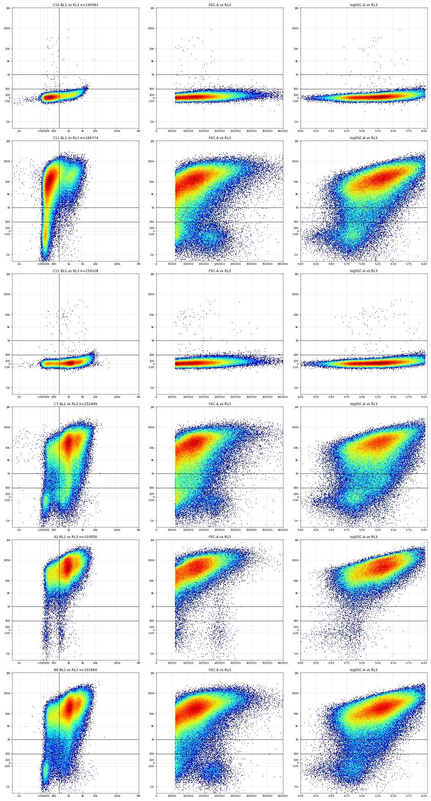
97
thinking
The control plots put the Zombie-negative cells at roughly −1500 to +300 on RL3-A, with dead cells above 3000. I'm next comparing C11 (no CellEvent) with C7 to measure how far CellEvent shifts BL1-A.
98
tool call · Bash
cd /task; cat > /task/work/fl5.py <<'EOF'
import sys; sys.path.insert(0,'/task/work')
from common import *; from gates_def import *
import matplotlib; matplotlib.use('Agg'); import matplotlib.pyplot as plt
from matplotlib.colors import LogNorm
xf=fk.transforms.LogicleTransform(param_t=1048576, param_w=1.5, param_m=6.0, param_a=0)
tr=lambda v: xf.apply(np.atleast_1d(np.asarray(v,dtype=float)))
ticks=[-1000,-100,0,100,300,1000,3000,1e4,1e5,1e6]; tl=['-1k','-100','0','100','300','1k','3k','10k','100k','1M']
ws=sys.argv[1].split(','); out=sys.argv[2]
polys=eval(sys.argv[3]) if len(sys.argv)>3 else []
ref=sys.argv[4] if len(sys.argv)>4 else 'C11'
def sing(w):
d=load(w); m=inpoly(d['FSC-A'],d['SSC-A'],CELLS)&inpoly(d['SSC-H'],d['SSC-A'],SING); return d[m]
dr=sing(ref); H,xe,ye=np.histogram2d(tr(dr['BL1-A']),tr(dr['RL3-A']),bins=120,range=[[0.1,0.85],[0.,1]]); H=H/H.sum()
nc=3; nr=int(np.ceil(len(ws)/nc))
fig,axes=plt.subplots(nr,nc,figsize=(10*nc,9*nr),squeeze=False)
for a,w in zip(axes.flat,ws):
d=sing(w); a.hist2d(tr(d['BL1-A']),tr(d['RL3-A']),bins=300,range=[[0.1,0.85],[0,1]],norm=LogNorm(),cmap='jet'); a.set_title(f'{w} n={len(d)} (contours={ref})',fontsize=18)
a.contour((xe[:-1]+xe[1:])/2,(ye[:-1]+ye[1:])/2,H.T,levels=[1e-5,1e-4,1e-3],colors=['grey','k','m'],linewidths=1)
for p in polys:
p=np.array(p,dtype=float); p=np.vstack([p,p[:1]]); a.plot(tr(p[:,0]),tr(p[:,1]),'k-',lw=2.5)
a.set_xticks(tr(ticks)); a.set_xticklabels(tl,fontsize=14); a.set_yticks(tr(ticks)); a.set_yticklabels(tl,fontsize=14); a.grid(True,alpha=.4)
plt.tight_layout(); plt.savefig(out,dpi=35)
EOF
python /task/work/fl5.py C11,C12,C7,C8,C9,C4 /task/work/fl5.png "[]" C1199
tool output
(Bash completed with no output)
100
tool call · Read
{
"file_path": "/task/work/fl5.png"
}101
tool output
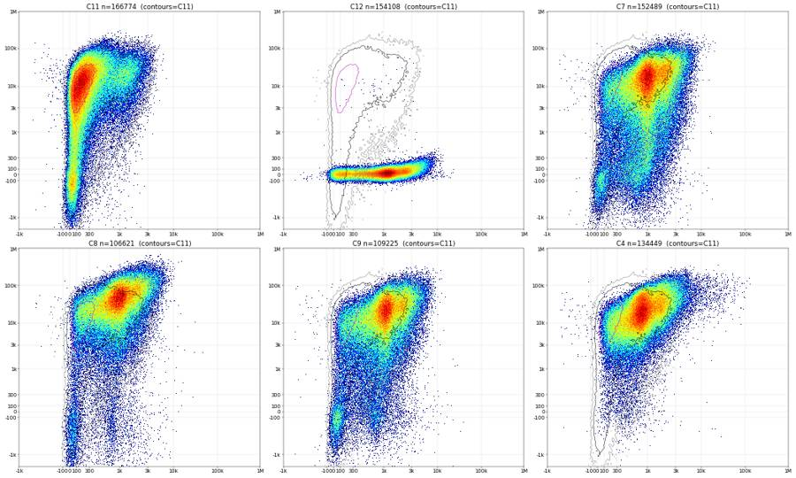
103
tool call · Bash
cd /task; cat > /task/work/thr.py <<'EOF'
import sys; sys.path.insert(0,'/task/work')
from common import *; from gates_def import *
def sing(w):
d=load(w); m=inpoly(d['FSC-A'],d['SSC-A'],CELLS)&inpoly(d['SSC-H'],d['SSC-A'],SING); return d[m]
for w in ['C10','C11','C12','C7','C8','C9','C4','A1','B6']:
d=sing(w); live=d['RL3-A']<300; dead=d['RL3-A']>3000
s=f'{w} n={len(d)} live%={100*live.mean():.1f} inter%={100*((~live)&(~dead)).mean():.1f} dead%={100*dead.mean():.1f} | '
s+=' live BL1>' + ' '.join(f'{t}:{100*(d["BL1-A"][live]>t).mean():.1f}' for t in [200,300,400,500,700,1000])
s+=' | dead BL1>' + ' '.join(f'{t}:{100*(d["BL1-A"][dead]>t).mean():.1f}' for t in [300,500,700,1000])
print(s)
EOF
python /task/work/thr.py104
tool output
C10 n=140983 live%=99.9 inter%=0.1 dead%=0.0 | live BL1>200:57.0 300:37.2 400:25.6 500:19.5 700:13.2 1000:8.2 | dead BL1>300:51.9 500:25.9 700:18.5 1000:7.4 C11 n=166774 live%=10.6 inter%=17.2 dead%=72.2 | live BL1>200:7.0 300:3.8 400:2.5 500:1.8 700:1.0 1000:0.5 | dead BL1>300:40.1 500:22.2 700:15.4 1000:10.1 C12 n=154108 live%=99.8 inter%=0.1 dead%=0.0 | live BL1>200:90.3 300:86.3 400:82.5 500:78.6 700:70.2 1000:53.6 | dead BL1>300:86.8 500:73.6 700:56.6 1000:26.4 C7 n=152489 live%=10.9 inter%=20.1 dead%=69.0 | live BL1>200:71.9 300:66.6 400:60.5 500:53.1 700:36.5 1000:16.7 | dead BL1>300:94.0 500:87.1 700:77.9 1000:54.9 C8 n=106621 live%=5.6 inter%=6.5 dead%=87.9 | live BL1>200:46.5 300:42.6 400:39.6 500:36.1 700:27.4 1000:12.5 | dead BL1>300:90.5 500:81.0 700:69.5 1000:46.4 C9 n=109225 live%=9.4 inter%=14.3 dead%=76.3 | live BL1>200:53.2 300:47.9 400:43.5 500:38.6 700:27.6 1000:12.6 | dead BL1>300:92.8 500:85.2 700:76.6 1000:57.6 C4 n=134449 live%=0.9 inter%=6.0 dead%=93.1 | live BL1>200:80.1 300:68.2 400:51.2 500:36.9 700:17.1 1000:6.9 | dead BL1>300:92.6 500:82.2 700:66.2 1000:37.9 A1 n=103958 live%=1.2 inter%=2.8 dead%=96.1 | live BL1>200:51.2 300:45.9 400:42.2 500:35.6 700:9.4 1000:2.9 | dead BL1>300:89.2 500:79.0 700:66.9 1000:40.7 B6 n=191664 live%=5.5 inter%=11.2 dead%=83.3 | live BL1>200:52.6 300:46.5 400:41.3 500:35.7 700:24.1 1000:10.7 | dead BL1>300:93.2 500:85.9 700:77.2 1000:56.2
106
tool call · Bash
cd /task; cat > /task/work/h1d2.py <<'EOF'
import sys; sys.path.insert(0,'/task/work')
from common import *; from gates_def import *
import matplotlib; matplotlib.use('Agg'); import matplotlib.pyplot as plt
xf=fk.transforms.LogicleTransform(param_t=1048576, param_w=1.5, param_m=6.0, param_a=0)
tr=lambda v: xf.apply(np.atleast_1d(np.asarray(v,dtype=float)))
ticks=[-1000,-100,0,100,200,300,500,1000,2000,3000,1e4,1e5]; tl=[str(int(t)) for t in ticks]
def sing(w):
d=load(w); m=inpoly(d['FSC-A'],d['SSC-A'],CELLS)&inpoly(d['SSC-H'],d['SSC-A'],SING); return d[m]
fig,axes=plt.subplots(2,1,figsize=(16,12))
a=axes[0]
for w,sel in [('C11','live'),('C7','live'),('C8','live'),('C9','live'),('C12','all'),('C10','all')]:
d=sing(w)
if sel=='live': d=d[d['RL3-A']<300]
a.hist(tr(d['BL1-A']),bins=150,range=(0.15,0.75),histtype='step',density=True,label=f'{w} {sel} n={len(d)}',lw=2)
a.set_xticks(tr(ticks)); a.set_xticklabels(tl); a.grid(True,alpha=.4); a.legend(); a.set_title('BL1-A of Zombie-neg (RL3<300) singlets')
a=axes[1]
for w in ['C10','C11','C7','C8','C9','B6']:
d=sing(w); d=d[(d['FSC-A']>100000)]
a.hist(tr(d['RL3-A']),bins=200,range=(0.,1),histtype='step',density=True,label=f'{w}',lw=2)
a.set_xticks(tr(ticks+[1e6])); a.set_xticklabels(tl+['1M']); a.grid(True,alpha=.4); a.legend(); a.set_title('RL3-A singlets FSC-A>100k'); a.set_yscale('log'); a.set_ylim(0.05,None)
plt.tight_layout(); plt.savefig('/task/work/h1d2.png',dpi=50)
EOF
python /task/work/h1d2.py107
tool output
(Bash completed with no output)
108
tool call · Read
{
"file_path": "/task/work/h1d2.png"
}109
tool output
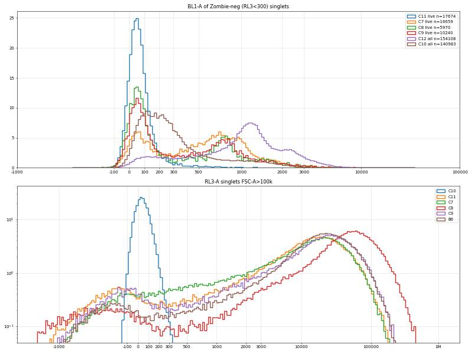
111
thinking
BL1-A shows a clear valley around 250–350 between the negative live cells and the positives, while RL3-A only has a plateau. I'm checking how far the negative tails extend to set the lower edges.
112
tool call · Bash
cd /task; cat > /task/work/neg.py <<'EOF'
import sys; sys.path.insert(0,'/task/work')
from common import *; from gates_def import *
from scipy.ndimage import gaussian_filter1d
xf=fk.transforms.LogicleTransform(param_t=1048576, param_w=1.5, param_m=6.0, param_a=0)
tr=lambda v: xf.apply(np.atleast_1d(np.asarray(v,dtype=float)))
def sing(w):
d=load(w); m=inpoly(d['FSC-A'],d['SSC-A'],CELLS)&inpoly(d['SSC-H'],d['SSC-A'],SING); return d[m]
for w in ['C7','C9','C11','B6','A1','C1','C10']:
d=sing(w)
print(w, 'RL3<', {t:int((d['RL3-A']<t).sum()) for t in [-1000,-2000,-3000,-5000,-10000,-30000,-65535]}, 'BL1<', {t:int((d['BL1-A']<t).sum()) for t in [-300,-1000,-3000,-10000,-65535]})
# valleys
pool=pd.concat([sing(w) for w in ['C7','C8','C9']]); live=pool[pool['RL3-A']<300]
h,e=np.histogram(tr(live['BL1-A']),bins=200,range=(0.2,0.6)); hs=gaussian_filter1d(h.astype(float),3); c=(e[:-1]+e[1:])/2
i=np.argmin(np.where((c>tr(100)[0])&(c<tr(700)[0]),hs,1e9)); print('BL1 valley C7-9 live', xf.inverse(np.array([c[i]])))
d=sing('C11'); h,e=np.histogram(tr(d['RL3-A']),bins=200,range=(0.1,0.7)); hs=gaussian_filter1d(h.astype(float),3); c=(e[:-1]+e[1:])/2
i=np.argmin(np.where((c>tr(0)[0])&(c<tr(3000)[0]),hs,1e9)); print('RL3 valley C11', xf.inverse(np.array([c[i]])))
for lo,hi in [(0,300),(300,1000),(1000,3000),(3000,1e7)]:
print(lo,hi, 'C11 frac', ((d['RL3-A']>=lo)&(d['RL3-A']<hi)).mean().round(3))
print('C11 live BL1 pctl', np.percentile(d[d['RL3-A']<400]['BL1-A'],[95,97.5,99,99.5]))
EOF
python /task/work/neg.py113
tool output
C7 RL3< {-1000: 502, -2000: 240, -3000: 170, -5000: 100, -10000: 46, -30000: 15, -65535: 3} BL1< {-300: 146, -1000: 69, -3000: 23, -10000: 10, -65535: 0}
C9 RL3< {-1000: 341, -2000: 157, -3000: 105, -5000: 65, -10000: 33, -30000: 13, -65535: 6} BL1< {-300: 124, -1000: 59, -3000: 15, -10000: 2, -65535: 0}
C11 RL3< {-1000: 690, -2000: 258, -3000: 169, -5000: 106, -10000: 51, -30000: 4, -65535: 0} BL1< {-300: 126, -1000: 42, -3000: 5, -10000: 0, -65535: 0}
B6 RL3< {-1000: 159, -2000: 12, -3000: 6, -5000: 3, -10000: 3, -30000: 0, -65535: 0} BL1< {-300: 10, -1000: 3, -3000: 1, -10000: 0, -65535: 0}
A1 RL3< {-1000: 40, -2000: 3, -3000: 2, -5000: 0, -10000: 0, -30000: 0, -65535: 0} BL1< {-300: 0, -1000: 0, -3000: 0, -10000: 0, -65535: 0}
C1 RL3< {-1000: 720, -2000: 276, -3000: 152, -5000: 65, -10000: 7, -30000: 0, -65535: 0} BL1< {-300: 2, -1000: 0, -3000: 0, -10000: 0, -65535: 0}
C10 RL3< {-1000: 0, -2000: 0, -3000: 0, -5000: 0, -10000: 0, -30000: 0, -65535: 0} BL1< {-300: 76, -1000: 15, -3000: 2, -10000: 0, -65535: 0}
BL1 valley C7-9 live [288.90352184]
RL3 valley C11 [270.46997219]
0 300 C11 frac 0.035
300 1000 C11 frac 0.059
1000 3000 C11 frac 0.113
3000 10000000.0 C11 frac 0.722
C11 live BL1 pctl [ 264. 427.05 741. 1003.05]115
thinking
Both controls put the BL1-A valley near 290 and the RL3-A valley near 270, so I'm setting the gates at 300 and 1000 and refining the FSC-A debris cut next.
116
tool call · Bash
cd /task; cat > /task/work/fschist.py <<'EOF'
import sys; sys.path.insert(0,'/task/work')
from common import *; from gates_def import *
import matplotlib; matplotlib.use('Agg'); import matplotlib.pyplot as plt
fig,axes=plt.subplots(1,2,figsize=(18,6))
for w in ['C7','C11','B6','A1','A10','C3']:
d=load(w); s=(d['SSC-A']>1000)&(d['SSC-A']<1.04e6)
lo=s&(d['RL3-A']<300); hi=s&(d['RL3-A']>1000)
axes[0].hist(d['FSC-A'][lo],bins=200,range=(0,4e5),histtype='step',density=True,label=w,lw=1.5)
axes[1].hist(d['FSC-A'][hi],bins=200,range=(0,4e5),histtype='step',density=True,label=w,lw=1.5)
for a,t in zip(axes,['RL3<300','RL3>1000']): a.set_title('FSC-A '+t); a.legend(); a.grid(True,alpha=.4); a.set_xticks(np.arange(0,4e5,25000)); a.tick_params(axis='x',rotation=90)
plt.tight_layout(); plt.savefig('/task/work/fschist.png',dpi=50)
EOF
python /task/work/fschist.py117
tool output
(Bash completed with no output)
118
tool call · Read
{
"file_path": "/task/work/fschist.png"
}119
tool output
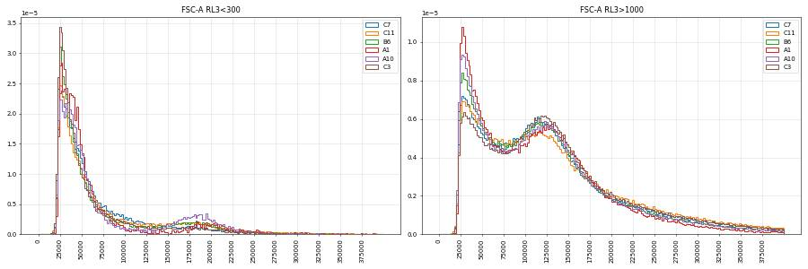
121
agent
The debris/cell valley on FSC-A is at ~75k, so I'm moving the Cells cut to FSC-A 70,000. Next I'm checking both scatter polygons on several wells, then saving a first `gates.xml`.
122
tool call · Bash
cd /task; cat > /task/work/gates_def.py <<'EOF'
import numpy as np
CELLS=[(70000,1000),(70000,400000),(170000,1040000),(1040000,1040000),(1040000,1000)]
SING=[(0,0),(1e5,1.3e5),(2e5,2.76e5),(3e5,4.5e5),(4.5e5,7.2e5),(6.5e5,1.045e6),(1.05e6,1.045e6),(1.05e6,8.4e5)]
from matplotlib.path import Path
def inpoly(x,y,poly): return Path(np.array(poly)).contains_points(np.c_[x,y])
EOF
cat > /task/work/showscat.py <<'EOF'
import sys; sys.path.insert(0,'/task/work')
from common import *; from gates_def import *
import matplotlib; matplotlib.use('Agg'); import matplotlib.pyplot as plt
from matplotlib.colors import LogNorm
ws=sys.argv[1].split(','); out=sys.argv[2]
def dens(p,n=60):
p=np.vstack([p,p[:1]]); return np.array([p[i]*(1-f)+p[i+1]*f for i in range(len(p)-1) for f in np.linspace(0,1,n)])
fig,axes=plt.subplots(len(ws),3,figsize=(21,6*len(ws)),squeeze=False)
for row,w in zip(axes,ws):
d=load(w); c=inpoly(d['FSC-A'],d['SSC-A'],CELLS)
row[0].hist2d(d['FSC-A'],np.log10(d['SSC-A'].clip(1)),bins=300,range=[[0,5e5],[3.5,6.05]],norm=LogNorm(),cmap='jet'); p=dens(CELLS); row[0].plot(p[:,0],np.log10(p[:,1].clip(1)),'k-'); row[0].set_title(f'{w} cells {100*c.mean():.1f}%')
dc=d[c]; s=inpoly(dc['SSC-H'],dc['SSC-A'],SING)
row[1].hist2d(dc['SSC-H'],dc['SSC-A'],bins=300,range=[[0,1.05e6],[0,1.05e6]],norm=LogNorm(),cmap='jet'); p=np.vstack([SING,SING[:1]]); row[1].plot(p[:,0],p[:,1],'k-'); row[1].set_title(f'singlets {100*s.mean():.1f}%')
row[2].hist2d(np.log10(dc['SSC-H'].clip(1)),np.log10(dc['SSC-A'].clip(1)),bins=300,range=[[4,6.05],[4,6.05]],norm=LogNorm(),cmap='jet'); p=dens(SING); row[2].plot(np.log10(p[:,0].clip(1)),np.log10(p[:,1].clip(1)),'k-')
for a in row: a.grid(True,alpha=.3)
plt.tight_layout(); plt.savefig(out,dpi=40)
EOF
python /task/work/showscat.py A1,B8,C7,C11 /task/work/scat.png123
tool output
(Bash completed with no output)
124
tool call · Read
{
"file_path": "/task/work/scat.png"
}125
tool output
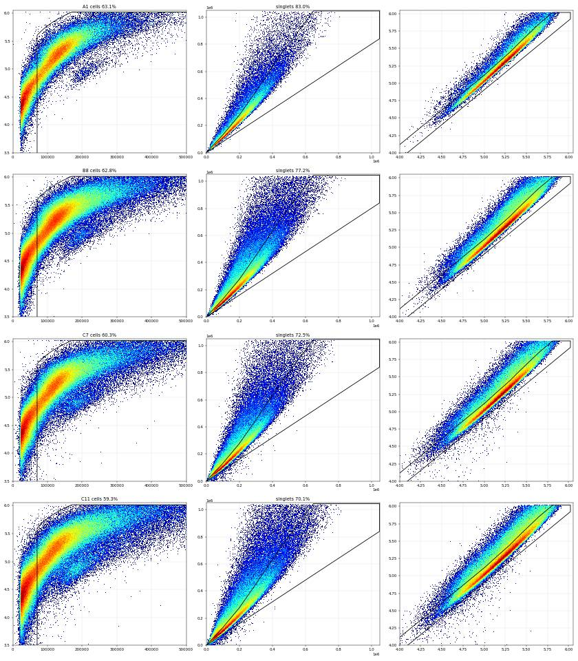
127
agent
Both scatter gates sit on their populations (Cells ~60%, singlets 70–83% of Cells). Now I'm building the FlowKit gating strategy and saving the first `gates.xml`.
128
tool call · Bash
cd /task; python -c " import flowkit as fk, inspect print(fk.__version__) print(inspect.signature(fk.gates.PolygonGate.__init__)); print(inspect.signature(fk.gates.RectangleGate.__init__)); print(inspect.signature(fk.Dimension.__init__)); print(inspect.signature(fk.GatingStrategy.add_gate)) "
129
tool output
1.2.3 (self, gate_name, dimensions, vertices, use_complement=False) (self, gate_name, dimensions, use_complement=False) (self, dimension_id, compensation_ref='uncompensated', transformation_ref=None, range_min=None, range_max=None) (self, gate, gate_path, sample_id=None)
130
tool call · Bash
cd /task; cat > /task/work/build.py <<'EOF'
"""Build the single gating strategy, export GatingML, gate all wells, write counts.csv."""
import sys, os, glob; sys.path.insert(0,'/task/work')
import flowkit as fk, numpy as np, pandas as pd
from gates_def import CELLS, SING
P = dict(RL3_LIVE_HI=300.0, RL3_LO=-20000.0, BL1_CASP_LO=300.0, RL3_LATE_LO=1000.0, TOP=1048576.0, BL1_LO=-100000.0)
P.update(eval(os.environ.get('GATEPARAMS','{}')))
def dim(c, lo=None, hi=None): return fk.Dimension(c, compensation_ref='uncompensated', range_min=lo, range_max=hi)
def build():
g = fk.GatingStrategy()
g.add_gate(fk.gates.PolygonGate('Cells', [dim('FSC-A'), dim('SSC-A')], [list(v) for v in CELLS]), gate_path=('root',))
g.add_gate(fk.gates.PolygonGate('Single_Cells', [dim('SSC-H'), dim('SSC-A')], [list(v) for v in SING]), gate_path=('root','Cells'))
# Live: rectangle spanning the whole BL1-A range, Zombie NIR-negative on RL3-A
g.add_gate(fk.gates.RectangleGate('Live', [dim('BL1-A', P['BL1_LO'], P['TOP']*2), dim('RL3-A', P['RL3_LO'], P['RL3_LIVE_HI'])]), gate_path=('root','Cells','Single_Cells'))
# Caspase_pos: CellEvent-positive, spanning the RL3-A range of Live
g.add_gate(fk.gates.RectangleGate('Caspase_pos', [dim('BL1-A', P['BL1_CASP_LO'], P['TOP']*2), dim('RL3-A', P['RL3_LO'], P['RL3_LIVE_HI'])]), gate_path=('root','Cells','Single_Cells','Live'))
# Late_apoptosis: CellEvent-positive AND Zombie NIR-bright
b0, r0, T = P['BL1_CASP_LO'], P['RL3_LATE_LO'], P['TOP']*2
g.add_gate(fk.gates.PolygonGate('Late_apoptosis', [dim('BL1-A'), dim('RL3-A')], [[b0, r0], [b0, T], [T, T], [T, r0]]), gate_path=('root','Cells','Single_Cells'))
return g
if __name__ == '__main__':
out = sys.argv[1] if len(sys.argv) > 1 else '/task/outputs'
os.makedirs(out, exist_ok=True)
g = build()
with open(f'{out}/gates.xml', 'wb') as fh: fk.export_gatingml(g, fh)
g2 = fk.parse_gating_xml(f'{out}/gates.xml')
print(g2.get_gate_hierarchy(output='ascii'))
layout = pd.read_csv('/task/inputs/plate_layout.csv')
pops = [('Cells','All_events'),('Single_Cells','Cells'),('Live','Single_Cells'),('Caspase_pos','Live'),('Late_apoptosis','Single_Cells')]
rows = []
for _, L in layout.iterrows():
s = fk.Sample(f"/task/inputs/raw/{L.file}")
res = g2.gate_sample(s)
cnt = {'All_events': s.event_count}
for p, par in pops: cnt[p] = int(res.get_gate_count(p))
for p, par in pops:
rows.append(dict(file=L.file, well=L.well, population=p, count=cnt[p], parent_population=par,
pct_of_parent=(100.0*cnt[p]/cnt[par]) if cnt[par] > 0 else 0.0))
df = pd.DataFrame(rows); df.to_csv(f'{out}/counts.csv', index=False)
wide = df.pivot(index='well', columns='population', values='pct_of_parent')[[p for p,_ in pops]]
wide = wide.loc[layout.well]
pd.set_option('display.width', 200); print(wide.round(2).to_string())
EOF
python /task/work/build.py /task/outputs 2>&1 | tail -50131
tool output
root
╰── Cells
╰── Single_Cells
├── Live
│ ╰── Caspase_pos
╰── Late_apoptosis
population Cells Single_Cells Live Caspase_pos Late_apoptosis
well
A1 63.07 82.98 0.96 38.98 90.77
A2 62.76 78.82 3.58 28.77 88.12
A3 65.43 82.55 2.44 48.99 89.69
A4 66.72 83.30 2.38 30.45 90.21
A5 64.03 84.17 3.96 44.21 87.75
A6 65.79 82.19 5.87 24.78 87.25
A7 62.85 77.08 5.38 23.43 86.43
A8 64.41 79.41 8.13 30.63 83.56
A9 65.65 81.17 4.76 27.96 88.25
A10 63.68 78.92 3.03 23.40 89.70
A11 61.04 82.06 5.12 34.98 86.96
A12 61.68 79.13 4.10 32.75 88.77
B1 61.98 79.16 7.01 28.68 84.04
B2 61.26 76.31 9.58 45.10 81.23
B3 63.66 78.21 8.49 36.58 83.68
B4 61.39 81.63 2.95 34.58 88.77
B5 61.18 82.44 4.46 35.59 86.94
B6 61.47 77.54 5.06 44.01 86.98
B7 63.46 84.08 2.57 34.67 90.42
B8 62.76 77.17 2.91 50.75 89.37
B9 62.94 82.02 2.91 38.48 89.83
B10 61.88 84.61 2.53 32.38 89.55
B11 64.08 82.07 3.43 49.62 89.30
B12 63.66 82.20 3.09 55.93 89.82
C1 65.55 75.93 1.46 36.47 90.80
C2 66.17 77.22 3.03 44.77 90.54
C3 63.42 75.76 4.34 58.63 87.48
C4 64.45 83.79 0.68 77.58 93.41
C5 65.08 84.33 0.88 78.39 93.33
C6 63.78 86.07 0.58 82.01 94.75
C7 60.27 72.46 9.76 66.87 78.89
C8 58.03 77.44 5.10 36.86 86.71
C9 59.39 75.16 8.40 43.80 82.04
C10 62.32 75.27 99.86 39.94 0.01
C11 59.34 70.15 9.71 3.98 33.89
C12 61.29 74.87 99.84 88.80 0.04133
thinking
Gates and counts are saved and reload cleanly, but C11 still leaves 34% of singlets in Late_apoptosis from dead-cell autofluorescence on BL1-A. I'm testing whether a slanted polygon edge can separate that from true CellEvent signal.
134
tool call · Bash
cd /task; cat > /task/work/overlay.py <<'EOF'
import sys; sys.path.insert(0,'/task/work')
from common import *; from gates_def import *
import matplotlib; matplotlib.use('Agg'); import matplotlib.pyplot as plt
from matplotlib.colors import LogNorm
xf=fk.transforms.LogicleTransform(param_t=1048576, param_w=1.5, param_m=6.0, param_a=0)
tr=lambda v: xf.apply(np.atleast_1d(np.asarray(v,dtype=float)))
ticks=[-1000,-100,0,100,300,1000,3000,1e4,3e4,1e5,1e6]; tl=['-1k','-100','0','100','300','1k','3k','10k','30k','100k','1M']
def sing(w):
d=load(w); m=inpoly(d['FSC-A'],d['SSC-A'],CELLS)&inpoly(d['SSC-H'],d['SSC-A'],SING); return d[m]
fig,axes=plt.subplots(2,3,figsize=(30,18))
pairs=[('C11','C7'),('C11','C9'),('C10','C12'),('C11','B6'),('C11','A1'),('C11','C4')]
for a,(w1,w2) in zip(axes.flat,pairs):
for w,cm in [(w1,'Blues'),(w2,'Reds')]:
d=sing(w); H,xe,ye=np.histogram2d(tr(d['BL1-A']),tr(d['RL3-A']),bins=100,range=[[0.1,0.8],[0.,1]]); H=H/H.sum()
a.contour((xe[:-1]+xe[1:])/2,(ye[:-1]+ye[1:])/2,H.T,levels=[3e-5,1e-4,3e-4,1e-3,3e-3],cmap=cm,linewidths=2)
a.set_title(f'{w1} blue vs {w2} red',fontsize=20)
a.set_xticks(tr(ticks)); a.set_xticklabels(tl,fontsize=16); a.set_yticks(tr(ticks)); a.set_yticklabels(tl,fontsize=16); a.grid(True,alpha=.4)
plt.tight_layout(); plt.savefig('/task/work/overlay.png',dpi=30)
EOF
python /task/work/overlay.py135
tool output
(Bash completed with no output)
136
tool call · Read
{
"file_path": "/task/work/overlay.png"
}137
tool output
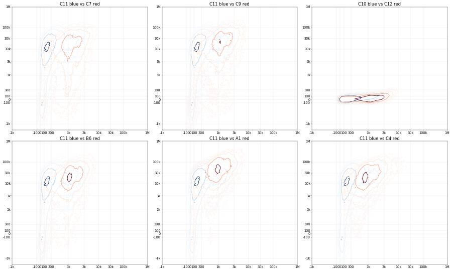
139
tool call · Bash
cd /task; cat > /task/work/slant.py <<'EOF'
import sys; sys.path.insert(0,'/task/work')
from common import *; from gates_def import *
def sing(w):
d=load(w); m=inpoly(d['FSC-A'],d['SSC-A'],CELLS)&inpoly(d['SSC-H'],d['SSC-A'],SING); return d[m]
bins=[300,1000,3000,10000,30000,100000,1e6]
for w in ['C11','C7','C8','C9','B6','A1']:
d=sing(w); c=pd.cut(d['RL3-A'],bins)
g=d.groupby(c,observed=True)['BL1-A']
print(w, ' '.join(f"{k}:n={len(v)} p10={np.percentile(v,10):.0f} p50={np.percentile(v,50):.0f} p90={np.percentile(v,90):.0f} >300={100*(v>300).mean():.0f}%" for k,v in g))
EOF
python /task/work/slant.py140
tool output
C11 (300.0, 1000.0]:n=8019 p10=27 p50=119 p90=350 >300=13% (1000.0, 3000.0]:n=15572 p10=48 p50=160 p90=592 >300=22% (3000.0, 10000.0]:n=39823 p10=62 p50=187 p90=742 >300=27% (10000.0, 30000.0]:n=50738 p10=99 p50=261 p90=1051 >300=42% (30000.0, 100000.0]:n=21506 p10=173 p50=404 p90=1486 >300=68% (100000.0, 1000000.0]:n=1139 p10=368 p50=656 p90=1957 >300=96% C7 (300.0, 1000.0]:n=10503 p10=322 p50=942 p90=1951 >300=91% (1000.0, 3000.0]:n=15997 p10=356 p50=970 p90=2207 >300=92% (3000.0, 10000.0]:n=32352 p10=383 p50=967 p90=2169 >300=93% (10000.0, 30000.0]:n=45090 p10=536 p50=1071 p90=2436 >300=97% (30000.0, 100000.0]:n=20338 p10=800 p50=1525 p90=3665 >300=99% (100000.0, 1000000.0]:n=952 p10=1252 p50=2470 p90=5569 >300=100% C8 (300.0, 1000.0]:n=1581 p10=62 p50=538 p90=1340 >300=65% (1000.0, 3000.0]:n=3905 p10=142 p50=733 p90=1541 >300=80% (3000.0, 10000.0]:n=9650 p10=217 p50=804 p90=1722 >300=85% (10000.0, 30000.0]:n=24099 p10=280 p50=821 p90=1718 >300=89% (30000.0, 100000.0]:n=40984 p10=525 p50=1046 p90=2236 >300=97% (100000.0, 1000000.0]:n=11456 p10=848 p50=1688 p90=3744 >300=100% C9 (300.0, 1000.0]:n=4526 p10=126 p50=733 p90=1455 >300=79% (1000.0, 3000.0]:n=8479 p10=245 p50=902 p90=1855 >300=87% (3000.0, 10000.0]:n=19651 p10=296 p50=947 p90=2060 >300=90% (10000.0, 30000.0]:n=34504 p10=468 p50=1084 p90=2306 >300=95% (30000.0, 100000.0]:n=22061 p10=788 p50=1419 p90=3319 >300=99% (100000.0, 1000000.0]:n=1691 p10=1233 p50=2386 p90=5125 >300=100% B6 (300.0, 1000.0]:n=5596 p10=142 p50=774 p90=1488 >300=79% (1000.0, 3000.0]:n=11896 p10=236 p50=835 p90=1814 >300=86% (3000.0, 10000.0]:n=38772 p10=301 p50=881 p90=1774 >300=90% (10000.0, 30000.0]:n=69045 p10=525 p50=1086 p90=2231 >300=96% (30000.0, 100000.0]:n=38839 p10=824 p50=1409 p90=3171 >300=99% (100000.0, 1000000.0]:n=2829 p10=1277 p50=2441 p90=4881 >300=100% A1 (300.0, 1000.0]:n=561 p10=59 p50=421 p90=793 >300=59% (1000.0, 3000.0]:n=1619 p10=122 p50=530 p90=1003 >300=71% (3000.0, 10000.0]:n=7918 p10=187 p50=626 p90=1250 >300=79% (10000.0, 30000.0]:n=26619 p10=261 p50=783 p90=1502 >300=88% (30000.0, 100000.0]:n=44446 p10=461 p50=976 p90=2057 >300=95% (100000.0, 1000000.0]:n=13861 p10=811 p50=1345 p90=2882 >300=100%
142
thinking
Dead-cell C11 levels climb with RL3-A (median ~150 at 1–3k, ~650 above 100k), so a vertical 300 edge over-calls Late_apoptosis in bright cells. I'm trying a slanted left edge at the midpoint between the C11 and C7 dead clusters.
143
tool call · Bash
cd /task; cat > /task/work/slant2.py <<'EOF'
import sys; sys.path.insert(0,'/task/work')
from common import *; from gates_def import *
def sing(w):
d=load(w); m=inpoly(d['FSC-A'],d['SSC-A'],CELLS)&inpoly(d['SSC-H'],d['SSC-A'],SING); return d[m]
def late(d,k,b0=300,r0=1000):
r=d['RL3-A'].values; b=d['BL1-A'].values
edge=b0*(np.clip(r,r0,None)/r0)**k
return (r>=r0)&(b>=edge)
print('well ' + ' '.join(f'k={k}' for k in [0,0.15,0.25,0.35]))
for w in ['C10','C11','C12','C7','C8','C9','C4','A1','A5','B2','B6','B12','C3']:
d=sing(w); print(w, ' '.join(f'{100*late(d,k).mean():5.1f}' for k in [0,0.15,0.25,0.35]))
EOF
python /task/work/slant2.py144
tool output
well k=0 k=0.15 k=0.25 k=0.35 C10 0.0 0.0 0.0 0.0 C11 33.9 20.8 15.5 12.2 C12 0.0 0.0 0.0 0.0 C7 78.9 76.5 72.8 63.6 C8 86.7 80.2 67.4 43.7 C9 82.0 78.9 74.4 63.4 C4 93.4 88.0 76.5 54.6 A1 90.8 82.6 65.3 37.6 A5 87.7 84.0 77.9 61.6 B2 81.2 78.9 76.1 68.9 B6 87.0 83.9 79.5 67.5 B12 89.8 86.8 81.9 68.1 C3 87.5 84.4 79.4 65.3
146
tool call · Bash
cd /task; cat > /task/work/fl6.py <<'EOF'
import sys; sys.path.insert(0,'/task/work')
from common import *; from gates_def import *
import matplotlib; matplotlib.use('Agg'); import matplotlib.pyplot as plt
from matplotlib.colors import LogNorm
xf=fk.transforms.LogicleTransform(param_t=1048576, param_w=1.5, param_m=6.0, param_a=0)
tr=lambda v: xf.apply(np.atleast_1d(np.asarray(v,dtype=float)))
ticks=[-1000,-100,0,100,300,1000,3000,1e4,3e4,1e5,1e6]; tl=['-1k','-100','0','100','300','1k','3k','10k','30k','100k','1M']
ws=sys.argv[1].split(','); out=sys.argv[2]
def sing(w):
d=load(w); m=inpoly(d['FSC-A'],d['SSC-A'],CELLS)&inpoly(d['SSC-H'],d['SSC-A'],SING); return d[m]
nc=3; nr=int(np.ceil(len(ws)/nc))
fig,axes=plt.subplots(nr,nc,figsize=(10*nc,9*nr),squeeze=False)
rr=np.logspace(3,6,50)
for a,w in zip(axes.flat,ws):
d=sing(w); a.hist2d(tr(d['BL1-A']),tr(d['RL3-A']),bins=200,range=[[0.1,0.8],[0.1,0.95]],norm=LogNorm(),cmap='jet'); a.set_title(w,fontsize=20)
for k,ls in [(0,'k-'),(0.15,'m--'),(0.25,'w--')]: a.plot(tr(300*(rr/1000)**k),tr(rr),ls,lw=2.5)
a.axhline(tr(300)[0],color='k'); a.axhline(tr(1000)[0],color='k');
a.set_xticks(tr(ticks)); a.set_xticklabels(tl,fontsize=14); a.set_yticks(tr(ticks)); a.set_yticklabels(tl,fontsize=14); a.grid(True,alpha=.4)
plt.tight_layout(); plt.savefig(out,dpi=33)
EOF
python /task/work/fl6.py C11,C7,A1,B6,C8,C4 /task/work/fl6.png147
tool output
(Bash completed with no output)
148
tool call · Read
{
"file_path": "/task/work/fl6.png"
}149
tool output
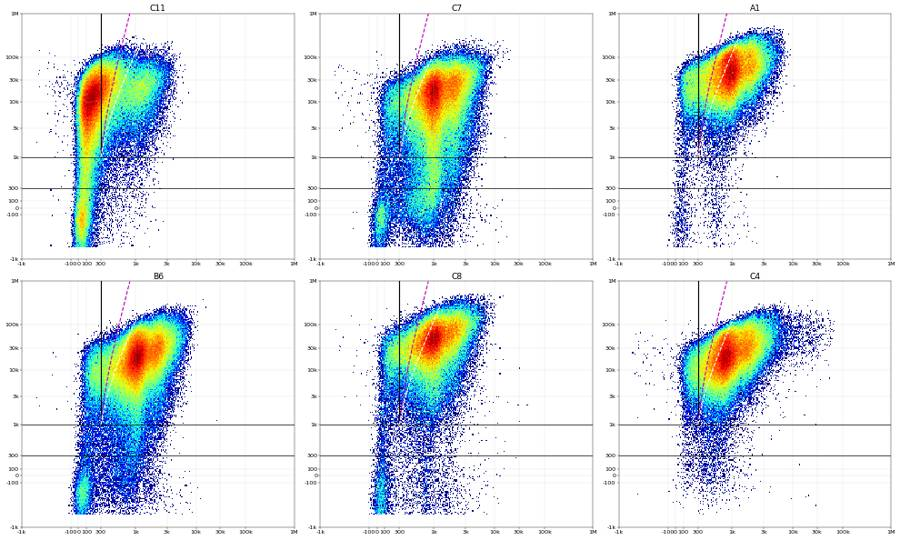
151
thinking
The steep slant (k=0.25) is too aggressive since it cuts through positive clusters, so I'm checking whether the valley at BL1-A 300 shifts with RL3-A in the pooled C7–C9 wells before fixing the edge.
152
tool call · Bash
cd /task; cat > /task/work/valley.py <<'EOF'
import sys; sys.path.insert(0,'/task/work')
from common import *; from gates_def import *
from scipy.ndimage import gaussian_filter1d
xf=fk.transforms.LogicleTransform(param_t=1048576, param_w=1.5, param_m=6.0, param_a=0)
tr=lambda v: xf.apply(np.atleast_1d(np.asarray(v,dtype=float)))
def sing(w):
d=load(w); m=inpoly(d['FSC-A'],d['SSC-A'],CELLS)&inpoly(d['SSC-H'],d['SSC-A'],SING); return d[m]
for name,ws in [('C7-9',['C7','C8','C9']),('samples',['A2','A5','A8','B2','B6','B11','C3']),('C11+C7-9',['C11','C7','C8','C9'])]:
pool=pd.concat([sing(w) for w in ws])
out=[]
for lo,hi in [(1000,3000),(3000,10000),(10000,30000),(30000,100000),(100000,1e6)]:
v=pool['BL1-A'][(pool['RL3-A']>=lo)&(pool['RL3-A']<hi)]
h,e=np.histogram(tr(v),bins=150,range=(0.2,0.65)); hs=gaussian_filter1d(h.astype(float),4); c=(e[:-1]+e[1:])/2
ok=(c>tr(80)[0])&(c<tr(1500)[0])
# find local minima
mins=[i for i in range(1,len(hs)-1) if ok[i] and hs[i]<hs[i-1] and hs[i]<=hs[i+1]]
out.append(f'{lo}-{hi}: minima at '+','.join(f'{xf.inverse(np.array([c[i]]))[0]:.0f}' for i in mins))
print(name,' | '.join(out))
EOF
python /task/work/valley.py153
tool output
C7-9 1000-3000: minima at 275 | 3000-10000: minima at | 10000-30000: minima at | 30000-100000: minima at | 100000-1000000.0: minima at 1458 samples 1000-3000: minima at 299 | 3000-10000: minima at | 10000-30000: minima at | 30000-100000: minima at | 100000-1000000.0: minima at 1458 C11+C7-9 1000-3000: minima at 403 | 3000-10000: minima at 445 | 10000-30000: minima at 489 | 30000-100000: minima at 431 | 100000-1000000.0: minima at 1458
155
thinking
In stained wells, BL1-A dead cells sit at a single valley around 275–300, so I'm keeping the vertical left edge at 300 for Caspase_pos and Late_apoptosis as the strategy specifies. Next I'm checking per-well QC: populations over time, GFP signal and live-cell counts.
156
tool call · Bash
cd /task; cat > /task/work/qc2.py <<'EOF'
import sys; sys.path.insert(0,'/task/work')
from common import *; from gates_def import *
rows=[]
for w in wells:
d=load(w); c=inpoly(d['FSC-A'],d['SSC-A'],CELLS); s=c&inpoly(d['SSC-H'],d['SSC-A'],SING)
t=d['Time'].values
live=s&(d['RL3-A']>=-20000)&(d['RL3-A']<300); late=s&(d['RL3-A']>=1000)&(d['BL1-A']>=300)
# time thirds
seg=np.digitize(t,[0,10,20,30,41.5])-1
lv=[100*live[(seg==k)&s].sum()/max(1,((seg==k)&s).sum()) for k in range(4)]
la=[100*late[(seg==k)&s].sum()/max(1,((seg==k)&s).sum()) for k in range(4)]
cl=[100*c[seg==k].sum()/max(1,(seg==k).sum()) for k in range(4)]
# last 3 s rate vs median
h,_=np.histogram(t,np.arange(0,42,1.0)); med=np.median(h[:40])
rows.append(dict(well=w,n=len(d),cells=c.sum(),sing=s.sum(),live=live.sum(),late=late.sum(),
live_t='/'.join(f'{x:.1f}' for x in lv), late_t='/'.join(f'{x:.0f}' for x in la), cells_t='/'.join(f'{x:.0f}' for x in cl),
bl1_gt1e4_sing=round(100*(s&(d['BL1-A']>1e4)).sum()/s.sum(),2), bl1_gt1e4_live=round(100*(live&(d['BL1-A']>1e4)).sum()/max(1,live.sum()),2),
rate_39_40=round(h[39]/med,2), rate_40_41=round(h[40]/med,2)))
df=pd.DataFrame(rows).set_index('well'); pd.set_option('display.width',250); print(df.to_string())
df.to_csv('/task/work/qc2.csv')
EOF
python /task/work/qc2.py157
tool output
n cells sing live late live_t late_t cells_t bl1_gt1e4_sing bl1_gt1e4_live rate_39_40 rate_40_41 well A1 183353 115631 95947 921 87088 0.9/1.0/1.0/1.0 91/91/91/90 60/63/65/63 0.00 0.00 0.89 0.94 A2 221770 139180 109698 3924 96662 3.5/3.6/3.7/3.5 88/88/88/88 61/63/64/63 0.00 0.00 0.80 0.74 A3 222545 145603 120191 2933 107803 2.4/2.6/2.4/2.3 90/90/90/89 63/66/68/66 0.00 0.00 0.88 0.74 A4 160440 107040 89167 2125 80441 2.5/2.5/2.3/2.3 90/90/90/90 65/68/68/66 0.01 0.00 0.81 0.47 A5 169911 108793 91566 3626 80348 4.0/3.9/4.0/4.1 88/88/88/87 61/64/67/64 0.00 0.00 0.78 0.79 A6 230857 151886 124831 7329 108922 5.9/5.8/6.0/5.7 87/87/87/87 63/67/68/65 0.01 0.01 0.75 0.53 A7 282723 177693 136957 7375 118376 5.3/5.3/5.6/5.4 87/87/86/86 61/63/65/63 0.00 0.03 0.82 0.59 A8 236938 152607 121182 9848 101258 8.3/8.0/8.2/8.0 83/84/84/83 62/65/67/64 0.01 0.06 0.74 0.82 A9 241833 158767 128872 6134 113735 4.9/4.7/4.7/4.7 88/89/88/88 64/66/68/65 0.01 0.05 0.82 0.52 A10 335810 213841 168762 5112 151386 3.0/3.1/3.0/3.0 90/90/90/89 62/64/65/63 0.00 0.02 0.68 0.37 A11 228556 139511 114488 5857 99564 5.3/4.9/5.0/5.2 87/88/87/86 59/62/63/61 0.01 0.05 0.87 0.92 A12 330844 204064 161467 6626 143343 4.4/4.1/4.0/4.0 89/89/89/88 60/63/63/61 0.01 0.02 0.72 0.44 B1 254845 157958 125034 8761 105076 7.0/7.0/7.3/6.7 84/85/84/84 60/64/64/60 0.00 0.01 0.66 0.29 B2 319449 195708 149344 14306 121319 9.7/9.6/9.4/9.6 81/82/81/81 59/62/63/62 0.02 0.08 0.84 0.84 B3 275473 175365 137146 11645 114758 8.8/8.3/8.5/8.3 83/84/84/83 61/65/66/62 0.02 0.07 0.69 0.34 B4 219859 134963 110175 3245 97804 2.9/3.0/3.0/2.8 89/89/89/88 59/61/64/61 0.01 0.00 0.87 0.88 B5 225148 137750 113566 5066 98737 4.5/4.3/4.4/4.7 87/88/87/86 59/62/64/60 0.00 0.02 0.89 0.48 B6 369018 226842 175884 8898 152977 5.0/4.9/5.2/5.2 87/87/87/86 59/62/64/61 0.01 0.02 0.99 0.91 B7 186946 118630 99743 2567 90189 2.6/2.6/2.6/2.6 91/91/91/90 62/63/66/64 0.00 0.00 0.86 0.91 B8 412353 258780 199712 5811 178483 3.0/2.9/3.0/2.8 89/90/89/89 60/63/65/63 0.01 0.10 0.94 0.67 B9 219409 138100 113271 3298 101753 2.9/2.8/3.0/2.9 90/90/90/89 61/64/66/61 0.01 0.03 0.54 0.21 B10 187472 116007 98149 2480 87890 2.5/2.6/2.4/2.6 90/90/90/89 60/62/64/61 0.00 0.00 0.93 1.06 B11 271438 173924 142745 4903 127465 3.5/3.5/3.5/3.2 89/89/89/89 62/65/66/62 0.01 0.12 0.43 0.19 B12 286933 182661 150149 4636 134859 3.1/3.1/3.1/3.0 90/90/90/89 61/65/66/63 0.01 0.06 0.93 0.85 C1 250794 164394 124824 1818 113341 2.5/1.7/1.3/1.4 82/93/93/87 50/65/68/64 0.00 0.00 0.02 0.19 C2 305451 202130 156081 4724 141320 5.1/2.8/2.9/2.9 88/93/92/88 62/64/70/64 0.01 0.08 1.13 0.76 C3 418796 265604 201228 8730 176042 4.3/4.3/4.6/4.2 87/88/87/87 60/64/65/63 0.01 0.10 0.90 0.76 C4 230134 148326 124283 843 116088 0.6/0.7/0.7/0.6 94/94/93/93 61/66/67/64 0.49 0.59 0.99 0.84 C5 206789 134573 113485 995 105920 0.9/0.9/0.9/0.9 94/94/93/93 62/66/68/64 0.42 0.60 0.47 0.14 C6 189779 121034 104174 606 98710 0.6/0.6/0.6/0.6 95/95/95/94 61/65/66/62 0.54 0.66 0.40 0.16 C7 317865 191584 138827 13553 109515 9.4/9.6/10.4/9.6 79/79/79/79 58/60/63/60 0.03 0.07 1.05 0.82 C8 214991 124764 96620 4924 83778 5.0/5.2/5.3/4.9 87/87/87/86 56/59/60/56 0.03 0.14 0.16 0.00 C9 222410 132087 99272 8335 81442 8.2/8.4/8.5/8.5 82/82/82/81 58/59/61/59 0.04 0.18 1.00 0.86 C10 276619 172389 129765 129580 18 99.9/99.9/99.8/99.9 0/0/0/0 60/63/64/62 0.00 0.00 0.92 0.80 C11 364071 216036 151540 14722 51360 9.4/9.6/10.0/9.9 32/34/35/35 57/60/61/60 0.00 0.00 0.87 0.89 C12 307442 188434 141082 140852 57 99.9/99.8/99.8/99.8 0/0/0/0 59/62/63/61 0.04 0.04 0.86 0.74
159
thinking
Frequencies hold steady in every well except C1 and C2, where clogs skewed Live from 2.5% to 1.3% and 5.1% to 2.9%. Next I'm checking the GFP signal strength in C4–C6.
160
tool call · Bash
cd /task; cat > /task/work/gfp.py <<'EOF'
import sys; sys.path.insert(0,'/task/work')
from common import *; from gates_def import *
import matplotlib; matplotlib.use('Agg'); import matplotlib.pyplot as plt
xf=fk.transforms.LogicleTransform(param_t=1048576, param_w=1.5, param_m=6.0, param_a=0)
tr=lambda v: xf.apply(np.atleast_1d(np.asarray(v,dtype=float)))
ticks=[-100,0,100,300,1000,3000,1e4,3e4,1e5,1e6]; tl=['-100','0','100','300','1k','3k','10k','30k','100k','1M']
def sing(w):
d=load(w); m=inpoly(d['FSC-A'],d['SSC-A'],CELLS)&inpoly(d['SSC-H'],d['SSC-A'],SING); return d[m]
fig,axes=plt.subplots(1,2,figsize=(20,7))
ref=pd.concat([sing(w) for w in ['C7','C8','C9']])
for sub,a in [('all',axes[0]),('dead',axes[1])]:
for w in ['C4','C5','C6','C7','C8','C9','A1','B2']:
d=sing(w)
if sub=='dead': d=d[d['RL3-A']>=1000]
a.hist(tr(d['BL1-A']),bins=200,range=(0.2,0.95),histtype='step',density=True,label=w,lw=2 if w in('C4','C5','C6') else 1)
a.set_yscale('log'); a.set_xticks(tr(ticks)); a.set_xticklabels(tl); a.grid(True,alpha=.4); a.legend(); a.set_title('BL1-A singlets '+sub)
plt.tight_layout(); plt.savefig('/task/work/gfp.png',dpi=50)
thr=[np.percentile(ref['BL1-A'],q) for q in (99,99.9)]; print('C7-9 BL1 p99, p99.9', thr)
for w in wells:
d=sing(w); print(w, f"{100*(d['BL1-A']>thr[0]).mean():.2f}% >p99 {100*(d['BL1-A']>thr[1]).mean():.2f}% >p99.9 BL1 median {d['BL1-A'].median():.0f}")
EOF
python /task/work/gfp.py161
tool output
C7-9 BL1 p99, p99.9 [4945.820000000007, 7777.282000000065] A1 0.39% >p99 0.01% >p99.9 BL1 median 920 A2 0.47% >p99 0.03% >p99.9 BL1 median 921 A3 0.46% >p99 0.02% >p99.9 BL1 median 920 A4 0.45% >p99 0.03% >p99.9 BL1 median 936 A5 0.40% >p99 0.01% >p99.9 BL1 median 912 A6 0.47% >p99 0.03% >p99.9 BL1 median 940 A7 0.54% >p99 0.02% >p99.9 BL1 median 966 A8 0.73% >p99 0.03% >p99.9 BL1 median 1015 A9 0.49% >p99 0.04% >p99.9 BL1 median 957 A10 0.59% >p99 0.02% >p99.9 BL1 median 967 A11 0.67% >p99 0.04% >p99.9 BL1 median 1032 A12 0.62% >p99 0.03% >p99.9 BL1 median 988 B1 0.49% >p99 0.02% >p99.9 BL1 median 951 B2 0.69% >p99 0.05% >p99.9 BL1 median 1049 B3 0.72% >p99 0.05% >p99.9 BL1 median 1047 B4 0.44% >p99 0.03% >p99.9 BL1 median 879 B5 0.49% >p99 0.02% >p99.9 BL1 median 974 B6 0.81% >p99 0.04% >p99.9 BL1 median 1055 B7 0.42% >p99 0.03% >p99.9 BL1 median 925 B8 0.57% >p99 0.02% >p99.9 BL1 median 943 B9 0.61% >p99 0.05% >p99.9 BL1 median 908 B10 0.34% >p99 0.01% >p99.9 BL1 median 886 B11 0.54% >p99 0.03% >p99.9 BL1 median 979 B12 0.53% >p99 0.02% >p99.9 BL1 median 952 C1 0.10% >p99 0.01% >p99.9 BL1 median 670 C2 0.27% >p99 0.02% >p99.9 BL1 median 803 C3 0.52% >p99 0.03% >p99.9 BL1 median 919 C4 1.37% >p99 0.66% >p99.9 BL1 median 865 C5 1.20% >p99 0.58% >p99.9 BL1 median 889 C6 1.45% >p99 0.72% >p99.9 BL1 median 926 C7 1.08% >p99 0.10% >p99.9 BL1 median 1024 C8 0.76% >p99 0.08% >p99.9 BL1 median 962 C9 1.12% >p99 0.11% >p99.9 BL1 median 1054 C10 0.00% >p99 0.00% >p99.9 BL1 median 248 C11 0.01% >p99 0.00% >p99.9 BL1 median 214 C12 1.14% >p99 0.14% >p99.9 BL1 median 1103
162
tool call · Read
{
"file_path": "/task/work/gfp.png"
}163
tool output
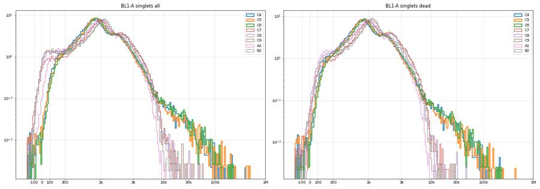
165
thinking
C4–C6 show a weak GFP tail, as the transduction control should, and I'm now checking whether any run drops off near its end (C8 falls to 0% of its median rate).
166
tool call · Bash
cd /task; cat > /task/work/endrun.py <<'EOF'
import sys; sys.path.insert(0,'/task/work')
from common import *; from gates_def import *
rows=[]
for w in wells:
d=load(w); t=d['Time'].values
h,_=np.histogram(t,np.arange(0,42,0.5)); med=np.median(h[:76])
# last time where rate >= 50% median
ok=np.where(h>=0.5*med)[0]; last_ok=(ok.max()+1)*0.5
c=inpoly(d['FSC-A'],d['SSC-A'],CELLS)
endm=t>=last_ok
rows.append(dict(well=w, med_rate_per_s=med*2, last_full_rate_s=last_ok, tmax=round(t.max(),2), n_after=int(endm.sum()), pct_after=round(100*endm.mean(),2),
cells_pct_after=round(100*c[endm].mean(),1) if endm.sum() else np.nan, cells_pct_before=round(100*c[~endm].mean(),1),
tail='/'.join(str(int(x)) for x in h[74:])))
df=pd.DataFrame(rows).set_index('well'); pd.set_option('display.width',250); print(df.to_string())
EOF
python /task/work/endrun.py167
tool output
med_rate_per_s last_full_rate_s tmax n_after pct_after cells_pct_after cells_pct_before tail well A1 4559.0 41.0 40.89 0 0.00 NaN 63.1 1901/1881/1795/1936/2081/1988/2342/1942/0 A2 5472.0 41.0 40.89 0 0.00 NaN 62.8 2582/2411/2378/2496/2135/2198/2280/1706/0 A3 5532.0 41.0 40.96 0 0.00 NaN 65.4 2620/2607/2577/2459/2440/2478/2057/2049/0 A4 4034.0 40.5 41.08 866 0.54 54.6 66.8 1720/1829/1882/2223/2014/1261/1113/781/85 A5 4261.0 41.0 40.86 0 0.00 NaN 64.0 2040/1885/1832/1718/1649/1662/1907/1465/0 A6 5838.0 40.5 40.90 1143 0.50 53.6 65.9 2616/2755/2875/3259/2418/1971/1932/1143/0 A7 7050.0 40.5 40.65 953 0.34 62.3 62.9 3801/2645/2614/2623/2780/2961/3175/953/0 A8 5956.0 41.0 40.94 0 0.00 NaN 64.4 2735/2007/2637/2057/2231/2206/2480/2412/0 A9 6134.0 40.5 40.94 1406 0.58 57.5 65.7 2401/2781/2850/3174/2799/2198/1763/1406/0 A10 8525.0 40.5 40.64 496 0.15 51.0 63.7 4078/3523/3986/4237/3180/2653/2665/496/0 A11 5712.0 41.0 40.95 0 0.00 NaN 61.0 2391/2232/2403/2542/2398/2557/2587/2660/0 A12 8429.0 40.5 40.90 1344 0.41 48.6 61.7 3643/3695/4009/4924/3339/2753/2351/1344/0 B1 6499.0 40.0 40.98 1853 0.73 41.7 62.1 2913/3170/3667/2793/2524/1754/1125/728/0 B2 8109.0 41.0 40.87 0 0.00 NaN 61.3 3734/3305/3120/3176/3153/3607/3576/3116/0 B3 6953.0 40.0 40.88 2329 0.85 49.0 63.8 3275/3584/3187/3076/2686/2139/1552/777/0 B4 5433.0 41.0 40.93 0 0.00 NaN 61.4 2472/2324/2313/2200/2731/1985/2668/2090/0 B5 5655.0 40.5 41.00 1052 0.47 48.8 61.2 2550/2624/2588/3254/2751/2275/1656/1052/0 B6 9188.0 41.0 40.87 0 0.00 NaN 61.5 3669/3905/3937/3925/4513/4627/4918/3476/0 B7 4696.0 41.0 41.00 3 0.00 100.0 63.5 1972/1774/2092/1855/2017/2028/1915/2339/3 B8 10048.0 40.5 40.65 1287 0.31 63.2 62.8 4185/4157/4546/4499/4825/4580/5427/1287/0 B9 5688.0 39.5 40.96 2370 1.08 46.0 63.1 2679/3139/2659/2248/1822/1206/695/469/0 B10 4670.0 41.0 40.94 0 0.00 NaN 61.9 2106/1975/1720/2124/2016/2325/2873/2076/0 B11 7093.0 39.5 40.94 2542 0.94 41.6 64.3 3264/3397/2728/2243/1878/1182/870/490/0 B12 7229.0 41.0 40.82 0 0.00 NaN 63.7 2916/2804/2756/3072/3331/3348/3846/2287/0 C1 5897.0 38.0 40.72 3564 1.42 46.2 65.8 2994/2127/1313/967/98/16/123/1047/0 C2 8465.0 41.0 40.93 0 0.00 NaN 66.2 4347/4461/4666/4278/4851/4901/3836/2727/0 C3 10505.0 40.5 40.74 2572 0.61 62.8 63.4 4621/4289/4598/5119/3578/5783/5339/2572/0 C4 5737.0 41.0 40.97 0 0.00 NaN 64.5 2309/2336/2539/2745/2764/2961/2691/2139/0 C5 5234.0 39.5 40.91 1593 0.77 43.7 65.2 2815/2483/2280/1756/1567/885/556/152/0 C6 4938.0 39.5 41.02 1491 0.79 40.6 64.0 2336/1952/1648/1600/1252/715/547/226/3 C7 8024.0 41.0 40.93 0 0.00 NaN 60.3 3348/3243/3501/4189/3635/4603/3699/2768/0 C8 5654.0 38.5 40.81 1862 0.87 34.7 58.2 2557/1932/1930/953/636/247/10/16/0 C9 5547.0 41.0 40.87 0 0.00 NaN 59.4 2405/2075/2546/2557/2681/2882/3068/1733/0 C10 6987.0 41.0 40.74 0 0.00 NaN 62.3 3022/2782/3161/2979/2884/3505/3284/2240/0 C11 9229.0 41.0 40.91 0 0.00 NaN 59.3 5707/3721/4402/3640/3313/4628/4493/3594/0 C12 7804.0 41.0 40.88 0 0.00 NaN 61.3 3004/3133/3162/3228/3012/3680/3213/2581/0
169
thinking
Most wells show a normal end-of-sample dip affecting ≤1.4% of events, with no well falling below half its median before 38 s, so none get flagged as ran_dry. Next I'm pulling exact figures for the C1 and C2 clog evidence and checking the FlowKit counts against an independent numpy calculation.
170
tool call · Bash
cd /task; cat > /task/work/clogdetail.py <<'EOF'
import sys; sys.path.insert(0,'/task/work')
from common import *; from gates_def import *
for w in ['C1','C2','C7','C11']:
d=load(w); t=d['Time'].values
h,b=np.histogram(t,np.arange(0,40.5,0.5)); med=np.median(h)
low=b[:-1][h<0.2*med]; hi=b[:-1][h>2*med]
print(w,'median/s',med*2,'bins<20%:',len(low),'of',len(h),'at',low.tolist()[:30],' bins>200%:',hi.tolist())
print(' first 5 s events', (t<5).sum(), ' frac events in first 5s', round(100*(t<5).mean(),2))
# FlowKit vs numpy cross check
import flowkit as fk
g=fk.parse_gating_xml('/task/outputs/gates.xml')
for w in ['A1','C7','C11','C12']:
s=fk.Sample(fn(w)); r=g.gate_sample(s); d=load(w)
c=inpoly(d['FSC-A'],d['SSC-A'],CELLS); si=c&inpoly(d['SSC-H'],d['SSC-A'],SING)
lv=si&(d['RL3-A']>=-20000)&(d['RL3-A']<=300); cp=lv&(d['BL1-A']>=300); la=si&(d['RL3-A']>=1000)&(d['BL1-A']>=300)
print(w,[r.get_gate_count(p) for p in ['Cells','Single_Cells','Live','Caspase_pos','Late_apoptosis']],[int(x.sum()) for x in [c,si,lv,cp,la]])
EOF
python /task/work/clogdetail.py171
tool output
C1 median/s 5640.0 bins<20%: 19 of 80 at [0.0, 0.5, 1.0, 1.5, 2.0, 2.5, 3.0, 3.5, 4.0, 4.5, 5.0, 6.0, 6.5, 7.5, 8.0, 10.5, 20.0, 39.0, 39.5] bins>200%: [15.5, 17.5, 21.0, 21.5, 22.0, 22.5, 23.0, 26.0, 29.0, 31.5, 32.0, 32.5, 33.0, 33.5, 34.0] first 5 s events 259 frac events in first 5s 0.1 C2 median/s 8557.0 bins<20%: 11 of 80 at [0.0, 0.5, 1.0, 1.5, 2.0, 2.5, 3.0, 3.5, 4.0, 4.5, 5.0] bins>200%: [] first 5 s events 504 frac events in first 5s 0.17 C7 median/s 8024.0 bins<20%: 2 of 80 at [26.5, 29.0] bins>200%: [] first 5 s events 41720 frac events in first 5s 13.13 C11 median/s 9199.0 bins<20%: 1 of 80 at [30.5] bins>200%: [] first 5 s events 46905 frac events in first 5s 12.88 A1 [115632, 95948, 921, 359, 87088] [115631, 95947, 923, 360, 87088] C7 [191584, 138828, 13554, 9063, 109515] [191584, 138827, 13575, 9085, 109515] C11 [216037, 151541, 14722, 586, 51360] [216036, 151540, 14730, 586, 51360] C12 [188435, 141082, 140852, 125071, 57] [188434, 141082, 140854, 125073, 57]
173
agent
FlowKit and numpy agree for Cells, Single_Cells and Late_apoptosis, but Live differs by up to 21 events. I'm finding which events disagree.
174
tool call · Bash
cd /task; cat > /task/work/diff.py <<'EOF'
import sys; sys.path.insert(0,'/task/work')
from common import *; from gates_def import *
import flowkit as fk
g=fk.parse_gating_xml('/task/outputs/gates.xml')
w='C7'; s=fk.Sample(fn(w)); r=g.gate_sample(s); d=load(w)
fkl=r.get_gate_membership('Live')
c=inpoly(d['FSC-A'],d['SSC-A'],CELLS); si=c&inpoly(d['SSC-H'],d['SSC-A'],SING)
lv=si&(d['RL3-A']>=-20000)&(d['RL3-A']<=300)
fks=r.get_gate_membership('Single_Cells')
dd=d[lv!=fkl]; print(dd[['BL1-A','RL3-A','SSC-A','SSC-H']].describe()); print((si!=fks).sum())
print(g.get_gate('Live'))
for dm in g.get_gate('Live').dimensions: print(dm.id, dm.min, dm.max)
EOF
python /task/work/diff.py175
tool output
BL1-A RL3-A SSC-A SSC-H count 23.000000 23.000000 23.000000 23.000000 mean 1233.217391 289.130435 157822.217391 136125.913043 std 827.248833 52.128604 150617.622184 111394.193819 min 167.000000 50.000000 52234.000000 42931.000000 25% 801.000000 300.000000 84901.000000 81470.500000 50% 1021.000000 300.000000 109409.000000 100437.000000 75% 1365.000000 300.000000 167839.000000 147513.000000 max 3357.000000 300.000000 772172.000000 586685.000000 1 RectangleGate(Live, dims: 2) BL1-A -100000.0 2097152.0 RL3-A -20000.0 300.0
177
thinking
The gap is an edge effect: FlowKit treats a rectangle's upper limit as exclusive, so events at exactly 300 are dropped. I'm moving each axis-aligned edge to a half-integer so both readings give the same counts.
178
tool call · Bash
cd /task; cat > /task/work/gates_def.py <<'EOF'
import numpy as np
# Axis-aligned edges sit on half-integers (data are integer-valued) so inclusive/exclusive conventions give identical counts.
CELLS=[(69999.5,999.5),(69999.5,400000),(170000,1039999.5),(1039999.5,1039999.5),(1039999.5,999.5)]
SING=[(0,0),(1e5,1.3e5),(2e5,2.76e5),(3e5,4.5e5),(4.5e5,7.2e5),(6.5e5,1.045e6),(1.05e6,1.045e6),(1.05e6,8.4e5)]
from matplotlib.path import Path
def inpoly(x,y,poly): return Path(np.array(poly)).contains_points(np.c_[x,y])
EOF
sed -i "s/P = dict(RL3_LIVE_HI=300.0, RL3_LO=-20000.0, BL1_CASP_LO=300.0, RL3_LATE_LO=1000.0, TOP=1048576.0, BL1_LO=-100000.0)/P = dict(RL3_LIVE_HI=300.5, RL3_LO=-20000.5, BL1_CASP_LO=299.5, RL3_LATE_LO=999.5, TOP=1048576.0, BL1_LO=-100000.5)/" /task/work/build.py
grep -n "P = dict" /task/work/build.py
python /task/work/build.py /task/outputs 2>&1 | tail -40
cat > /task/work/xcheck.py <<'EOF'
import sys; sys.path.insert(0,'/task/work')
from common import *; from gates_def import *
import flowkit as fk
cnt=pd.read_csv('/task/outputs/counts.csv')
bad=0
for w in wells:
d=load(w)
c=inpoly(d['FSC-A'],d['SSC-A'],CELLS); si=c&inpoly(d['SSC-H'],d['SSC-A'],SING)
lv=si&(d['RL3-A']>-20000)&(d['RL3-A']<=300); cp=lv&(d['BL1-A']>=300); la=si&(d['RL3-A']>=1000)&(d['BL1-A']>=300)
mine=dict(zip(['Cells','Single_Cells','Live','Caspase_pos','Late_apoptosis'],[int(x.sum()) for x in [c,si,lv,cp,la]]))
fkc=cnt[cnt.well==w].set_index('population')['count'].to_dict()
dif={k:fkc[k]-mine[k] for k in mine if fkc[k]!=mine[k]}
if dif: bad+=1; print(w,dif)
print('wells with differences:',bad)
EOF
python /task/work/xcheck.py179
tool output
5:P = dict(RL3_LIVE_HI=300.5, RL3_LO=-20000.5, BL1_CASP_LO=299.5, RL3_LATE_LO=999.5, TOP=1048576.0, BL1_LO=-100000.5)
│ ╰── Caspase_pos
╰── Late_apoptosis
population Cells Single_Cells Live Caspase_pos Late_apoptosis
well
A1 63.07 82.98 0.96 39.00 90.77
A2 62.76 78.82 3.58 28.78 88.12
A3 65.43 82.55 2.44 48.99 89.69
A4 66.72 83.30 2.38 30.45 90.21
A5 64.03 84.17 3.96 44.24 87.75
A6 65.79 82.19 5.87 24.81 87.25
A7 62.85 77.08 5.39 23.43 86.43
A8 64.41 79.41 8.13 30.64 83.56
A9 65.65 81.17 4.76 27.95 88.25
A10 63.68 78.92 3.03 23.41 89.70
A11 61.04 82.06 5.12 35.01 86.96
A12 61.68 79.13 4.10 32.75 88.77
B1 61.98 79.16 7.01 28.68 84.04
B2 61.26 76.31 9.59 45.13 81.23
B3 63.66 78.21 8.50 36.60 83.68
B4 61.39 81.63 2.95 34.57 88.77
B5 61.18 82.44 4.46 35.63 86.94
B6 61.47 77.54 5.06 44.02 86.98
B7 63.46 84.08 2.57 34.70 90.42
B8 62.76 77.17 2.91 50.77 89.37
B9 62.94 82.02 2.91 38.50 89.83
B10 61.88 84.61 2.53 32.41 89.55
B11 64.08 82.07 3.44 49.62 89.30
B12 63.66 82.20 3.10 55.99 89.82
C1 65.55 75.93 1.46 36.45 90.80
C2 66.17 77.22 3.03 44.77 90.54
C3 63.42 75.76 4.34 58.63 87.48
C4 64.45 83.79 0.68 77.66 93.41
C5 65.08 84.33 0.88 78.38 93.33
C6 63.78 86.07 0.58 82.04 94.75
C7 60.27 72.46 9.78 66.92 78.89
C8 58.03 77.44 5.10 36.85 86.71
C9 59.39 75.16 8.40 43.81 82.04
C10 62.32 75.27 99.86 39.94 0.01
C11 59.34 70.15 9.72 3.98 33.89
C12 61.29 74.87 99.84 88.80 0.04
C5 {'Single_Cells': 1, 'Late_apoptosis': 1}
wells with differences: 1181
thinking
FlowKit's counts agree with the numpy gating in 35 of 36 wells, with C5 off by one event on a slanted edge. I'm now checking how much Late_apoptosis shifts with its BL1-A edge.
182
tool call · Bash
cd /task; cat > /task/work/sens.py <<'EOF'
import sys; sys.path.insert(0,'/task/work')
from common import *; from gates_def import *
def sing(w):
d=load(w); m=inpoly(d['FSC-A'],d['SSC-A'],CELLS)&inpoly(d['SSC-H'],d['SSC-A'],SING); return d[m]
print('Late% of singlets at BL1 edge 300/450/600 ; Live% at RL3 hi 300/500/1000 ; Casp% of live at 300/450')
for w in ['C11','C7','C8','C9','A1','B6','C4']:
d=sing(w); r=d['RL3-A']; b=d['BL1-A']
late=[100*((r>=1000)&(b>=t)).mean() for t in [300,450,600]]
live=[100*((r>-20000)&(r<=t)).mean() for t in [300,500,1000]]
lv=(r>-20000)&(r<=300); casp=[100*(b[lv]>=t).mean() for t in [300,450]]
print(w, ' '.join(f'{x:.1f}' for x in late),' ; ',' '.join(f'{x:.1f}' for x in live),' ; ',' '.join(f'{x:.1f}' for x in casp))
EOF
python /task/work/sens.py183
tool output
Late% of singlets at BL1 edge 300/450/600 ; Live% at RL3 hi 300/500/1000 ; Casp% of live at 300/450 C11 33.9 21.0 15.4 ; 9.7 11.4 15.0 ; 4.0 2.4 C7 78.9 75.5 70.6 ; 9.8 12.4 17.3 ; 66.9 59.8 C8 86.7 81.5 74.6 ; 5.1 5.6 6.7 ; 36.9 32.8 C9 82.0 78.1 73.0 ; 8.4 9.9 13.0 ; 43.8 38.4 A1 90.8 84.5 76.3 ; 1.0 1.1 1.5 ; 39.0 33.6 B6 87.0 82.9 77.7 ; 5.1 6.1 8.2 ; 44.0 38.1 C4 93.4 87.0 76.9 ; 0.7 1.0 1.7 ; 77.7 54.3
185
thinking
Moving the Late_apoptosis edge to 450 shifts stained wells by only 3–6 points, so I'm keeping 300. Next I'm checking whether C7's high Caspase_pos (67%, against 37% and 44% in C8 and C9) is a flow artifact.
186
tool call · Bash
cd /task; cat > /task/work/c7.py <<'EOF'
import sys; sys.path.insert(0,'/task/work')
from common import *; from gates_def import *
for w in ['C7','C8','C9','C11','C10','B2','A1']:
d=load(w); c=inpoly(d['FSC-A'],d['SSC-A'],CELLS); s=c&inpoly(d['SSC-H'],d['SSC-A'],SING)
t=d['Time'].values; seg=np.digitize(t,np.arange(0,45,5))-1
lv=s&(d['RL3-A']>-20000)&(d['RL3-A']<=300); cp=lv&(d['BL1-A']>=300); la=s&(d['RL3-A']>=1000)&(d['BL1-A']>=300)
cpp=[100*cp[seg==k].sum()/max(1,lv[seg==k].sum()) for k in range(9)]
lvp=[100*lv[seg==k].sum()/max(1,s[seg==k].sum()) for k in range(9)]
art=100*((d[['FSC-A','SSC-A','BL1-A','RL3-A']]<=-65535).any(axis=1)).mean()
print(w,'Casp% by 5s:', ' '.join(f'{x:.0f}' for x in cpp),'| Live%:',' '.join(f'{x:.1f}' for x in lvp), f'| artifacts {art:.3f}%')
EOF
python /task/work/c7.py187
tool output
C7 Casp% by 5s: 66 68 68 70 67 65 67 64 64 | Live%: 9.4 9.6 9.5 9.7 10.5 10.4 9.5 9.9 8.7 | artifacts 0.213% C8 Casp% by 5s: 32 35 38 38 38 40 38 35 0 | Live%: 4.9 5.0 5.0 5.4 5.3 5.2 5.0 4.8 0.0 | artifacts 0.118% C9 Casp% by 5s: 40 43 44 44 44 44 47 45 41 | Live%: 7.9 8.5 8.6 8.3 8.7 8.3 8.6 8.4 8.1 | artifacts 0.228% C11 Casp% by 5s: 3 3 5 4 4 5 4 3 3 | Live%: 9.4 9.4 9.5 9.8 9.6 10.5 10.0 9.9 9.2 | artifacts 0.207% C10 Casp% by 5s: 37 37 39 41 42 43 42 40 40 | Live%: 99.9 99.9 99.9 99.9 99.8 99.8 99.8 99.9 99.9 | artifacts 0.150% B2 Casp% by 5s: 45 44 48 45 44 46 45 44 43 | Live%: 9.6 9.8 9.8 9.4 9.5 9.3 9.8 9.7 8.7 | artifacts 0.023% A1 Casp% by 5s: 42 39 42 39 37 35 34 42 50 | Live%: 1.1 0.8 0.9 1.0 0.9 1.1 0.9 1.1 1.1 | artifacts 0.000%
189
agent
C7's Caspase_pos holds at 64–70% in every 5-s window, so it is a real property of that well, not a flow artifact. Now I'm generating `flags.csv` with quantified evidence for each well.
190
tool call · Bash
cd /task; cat > /task/work/flags.py <<'EOF'
import sys; sys.path.insert(0,'/task/work')
from common import *; from gates_def import *
layout=pd.read_csv('/task/inputs/plate_layout.csv'); cnt=pd.read_csv('/task/outputs/counts.csv')
C=cnt.pivot(index='well',columns='population',values='count'); Pc=cnt.pivot(index='well',columns='population',values='pct_of_parent')
M={}
for w in wells:
d=load(w); t=d['Time'].values
h,b=np.histogram(t,np.arange(0,40.5,0.5)); med=np.median(h)
idx=np.digitize(t,b)-1; g=pd.DataFrame({'i':idx,'s':d['SSC-A']}); g=g[(g.i>=0)&(g.i<len(h))].groupby('i').s.median()
c=inpoly(d['FSC-A'],d['SSC-A'],CELLS); s=c&inpoly(d['SSC-H'],d['SSC-A'],SING)
lv=s&(d['RL3-A']>-20000)&(d['RL3-A']<=300); la=s&(d['RL3-A']>=1000)&(d['BL1-A']>=300)
q=np.digitize(t,[0,10,20,30,99])-1
M[w]=dict(rate=med*2, cv=100*h.std()/h.mean(), lt20=int((h<0.2*med).sum()), gt200=int((h>2*med).sum()), gap=np.diff(np.sort(t)).max(),
ssccv=100*g.std()/g.mean(), art=100*((d[['FSC-A','SSC-A','BL1-A','RL3-A']]<=-65535).any(axis=1)).mean(),
livq=[100*lv[q==k].sum()/max(1,s[q==k].sum()) for k in range(4)], lateq=[100*la[q==k].sum()/max(1,s[q==k].sum()) for k in range(4)],
cellq=[100*c[q==k].sum()/max(1,(q==k).sum()) for k in range(4)],
flsat=100*max((d['BL1-A']>=1048575).mean(),(d['RL3-A']>=1048575).mean()), sscsat=100*(d['SSC-A']>=1048575).mean(),
first5=int((t<5).sum()), n=len(d), bl1med=np.median(d['BL1-A'][s]), rl3med=np.median(d['RL3-A'][s]),
rl3_999=np.percentile(d['RL3-A'][s],99.9), dead=100*(s&(d['RL3-A']>3000)).sum()/s.sum())
ref=pd.concat([load(w)[inpoly(load(w)['FSC-A'],load(w)['SSC-A'],CELLS)&inpoly(load(w)['SSC-H'],load(w)['SSC-A'],SING)] for w in ['C7','C8','C9']])
gfpthr=np.percentile(ref['BL1-A'],99.9)
def gfp(w):
d=load(w); s=inpoly(d['FSC-A'],d['SSC-A'],CELLS)&inpoly(d['SSC-H'],d['SSC-A'],SING); return 100*(d['BL1-A'][s]>gfpthr).mean()
def flow_ok(w):
m=M[w]; return (f"stable flow: {m['n']} events/41 s, median {m['rate']:.0f} ev/s, 0.5-s rate CV {m['cv']:.0f}% (C1/C2: 85%/54%), {m['lt20']}/80 bins <20% of median rate; "
f"Live% by 10-s quarter {'/'.join(f'{x:.1f}' for x in m['livq'])}; BL1-A/RL3-A at full scale {m['flsat']:.2f}%")
rows=[]
for _,L in layout.iterrows():
w=L.well; m=M[w]; cat='ok'
base=flow_ok(w)
pops=f"Single_Cells {C.loc[w,'Single_Cells']}, Live {C.loc[w,'Live']} ({Pc.loc[w,'Live']:.2f}%), Caspase_pos {Pc.loc[w,'Caspase_pos']:.1f}% of Live, Late_apoptosis {Pc.loc[w,'Late_apoptosis']:.1f}% of singlets"
if w in ('C1','C2'):
cat='clog_or_interrupted_flow'
ev=(f"interrupted/clogged sample flow: 0.5-s event-rate CV {m['cv']:.0f}% (other 34 wells 5-23%); {m['lt20']}/80 bins <20% of median rate ({m['first5']} events in the first 5 s vs ~{m['rate']*5:.0f} expected), "
f"{m['gt200']} bins >200% (surges), longest gap {m['gap']:.2f} s; per-bin median SSC-A CV {m['ssccv']:.0f}% (others 8-20%); -65536 artifact events {m['art']:.2f}% (others <=0.23%); "
f"populations drift with time: Cells% {'/'.join(f'{x:.0f}' for x in m['cellq'])}, Live% {'/'.join(f'{x:.1f}' for x in m['livq'])}, Late_apoptosis% {'/'.join(f'{x:.0f}' for x in m['lateq'])} by 10-s quarter")
if w=='C1': ev+=f"; Live only {C.loc[w,'Live']} events"
elif w=='C10':
ev=(f"unstained control behaves as expected: singlet RL3-A median {m['rl3med']:.0f}, 99.9th pct {m['rl3_999']:.0f} (Live 99.86%); BL1-A median {m['bl1med']:.0f} (autofluorescence only); Late_apoptosis {C.loc[w,'Late_apoptosis']} events (0.01%); "+base)
elif w=='C11':
ev=(f"Zombie-only control as expected: {m['dead']:.0f}% of singlets RL3-A >3000 (bright) vs {Pc.loc[w,'Live']:.1f}% Live; BL1-A median {m['bl1med']:.0f} (= unstained level, no CellEvent); Caspase_pos {Pc.loc[w,'Caspase_pos']:.1f}% of Live; "
f"Late_apoptosis {Pc.loc[w,'Late_apoptosis']:.1f}% = BL1 autofluorescence of dead cells (background for that gate); "+base)
elif w=='C12':
ev=(f"CellEvent-only control as expected: singlet BL1-A median {m['bl1med']:.0f} vs {M['C10']['bl1med']:.0f} unstained, {Pc.loc[w,'Caspase_pos']:.1f}% BL1-A>=300; RL3-A 99.9th pct {m['rl3_999']:.0f} (no Zombie, Live 99.84%); "+base)
elif w in ('C4','C5','C6'):
ev=(f"AAV1-GFP control: GFP+ tail present, {gfp(w):.2f}% of singlets above BL1-A {gfpthr:.0f} (99.9th pct of no-virus C7-C9; C7-C9 {gfp('C7'):.2f}-{gfp('C9'):.2f}%); BL1-A caspase readout includes GFP (Caspase_pos {Pc.loc[w,'Caspase_pos']:.1f}% of Live), use as transduction reference only; "
f"Live only {C.loc[w,'Live']} events ({Pc.loc[w,'Live']:.2f}%); "+base)
else:
ev=pops+"; "+base
if C.loc[w,'Live']<1000: ev+=f"; note low Live count ({C.loc[w,'Live']}) widens Caspase_pos CI (~±3 pts)"
if w=='C7': ev+="; Caspase_pos (66.9%) higher than C8/C9 (36.9/43.8%) but constant over time (64-70% per 5 s)"
if w=='C8': ev+="; sample exhausted in last 1.5 s (rate <20% of median after 39.3 s, 0.9% of events) - negligible"
if w in ('C7','C8','C9','C11','C10') and cat=='ok':
ev+=f"; minor rate jitter (CV {m['cv']:.0f}%) without population drift"
if w in ('C7','C8','C9'): ev="no-virus fully stained reference; "+ev
rows.append(dict(file=L.file, well=w, usable='yes' if cat=='ok' else 'no', reason_category=cat, evidence=ev))
F=pd.DataFrame(rows); F.to_csv('/task/outputs/flags.csv',index=False)
print(F[['well','usable','reason_category']].to_string()); print(F.evidence.str.len().max())
for w in ['A1','C1','C2','C4','C7','C11']: print(w, F.set_index('well').loc[w,'evidence'],'\n')
EOF
python /task/work/flags.py191
tool output
well usable reason_category 0 A1 yes ok 1 A2 yes ok 2 A3 yes ok 3 A4 yes ok 4 A5 yes ok 5 A6 yes ok 6 A7 yes ok 7 A8 yes ok 8 A9 yes ok 9 A10 yes ok 10 A11 yes ok 11 A12 yes ok 12 B1 yes ok 13 B2 yes ok 14 B3 yes ok 15 B4 yes ok 16 B5 yes ok 17 B6 yes ok 18 B7 yes ok 19 B8 yes ok 20 B9 yes ok 21 B10 yes ok 22 B11 yes ok 23 B12 yes ok 24 C1 no clog_or_interrupted_flow 25 C2 no clog_or_interrupted_flow 26 C3 yes ok 27 C4 yes ok 28 C5 yes ok 29 C6 yes ok 30 C7 yes ok 31 C8 yes ok 32 C9 yes ok 33 C10 yes ok 34 C11 yes ok 35 C12 yes ok 490 A1 Single_Cells 95948, Live 923 (0.96%), Caspase_pos 39.0% of Live, Late_apoptosis 90.8% of singlets; stable flow: 183353 events/41 s, median 4543 ev/s, 0.5-s rate CV 6% (C1/C2: 85%/54%), 0/80 bins <20% of median rate; Live% by 10-s quarter 0.9/1.0/1.0/1.0; BL1-A/RL3-A at full scale 0.06%; note low Live count (923) widens Caspase_pos CI (~±3 pts) C1 interrupted/clogged sample flow: 0.5-s event-rate CV 85% (other 34 wells 5-23%); 19/80 bins <20% of median rate (259 events in the first 5 s vs ~28200 expected), 15 bins >200% (surges), longest gap 1.29 s; per-bin median SSC-A CV 38% (others 8-20%); -65536 artifact events 0.74% (others <=0.23%); populations drift with time: Cells% 50/65/68/64, Live% 2.5/1.7/1.3/1.4, Late_apoptosis% 82/93/93/87 by 10-s quarter; Live only 1819 events C2 interrupted/clogged sample flow: 0.5-s event-rate CV 54% (other 34 wells 5-23%); 11/80 bins <20% of median rate (504 events in the first 5 s vs ~42785 expected), 0 bins >200% (surges), longest gap 0.41 s; per-bin median SSC-A CV 68% (others 8-20%); -65536 artifact events 0.50% (others <=0.23%); populations drift with time: Cells% 62/64/70/64, Live% 5.1/2.8/2.9/2.9, Late_apoptosis% 88/93/92/88 by 10-s quarter C4 AAV1-GFP control: GFP+ tail present, 0.66% of singlets above BL1-A 7777 (99.9th pct of no-virus C7-C9; C7-C9 0.10-0.11%); BL1-A caspase readout includes GFP (Caspase_pos 77.7% of Live), use as transduction reference only; Live only 846 events (0.68%); stable flow: 230134 events/41 s, median 5725 ev/s, 0.5-s rate CV 8% (C1/C2: 85%/54%), 0/80 bins <20% of median rate; Live% by 10-s quarter 0.6/0.7/0.7/0.6; BL1-A/RL3-A at full scale 0.01% C7 no-virus fully stained reference; Single_Cells 138828, Live 13576 (9.78%), Caspase_pos 66.9% of Live, Late_apoptosis 78.9% of singlets; stable flow: 317865 events/41 s, median 8024 ev/s, 0.5-s rate CV 23% (C1/C2: 85%/54%), 2/80 bins <20% of median rate; Live% by 10-s quarter 9.5/9.6/10.5/9.6; BL1-A/RL3-A at full scale 0.06%; Caspase_pos (66.9%) higher than C8/C9 (36.9/43.8%) but constant over time (64-70% per 5 s); minor rate jitter (CV 23%) without population drift C11 Zombie-only control as expected: 75% of singlets RL3-A >3000 (bright) vs 9.7% Live; BL1-A median 214 (= unstained level, no CellEvent); Caspase_pos 4.0% of Live; Late_apoptosis 33.9% = BL1 autofluorescence of dead cells (background for that gate); stable flow: 364071 events/41 s, median 9199 ev/s, 0.5-s rate CV 21% (C1/C2: 85%/54%), 1/80 bins <20% of median rate; Live% by 10-s quarter 9.4/9.6/10.0/9.9; BL1-A/RL3-A at full scale 0.09%; minor rate jitter (CV 21%) without population drift
193
thinking
`flags.csv` is written, with C1 and C2 flagged and the other 34 wells marked ok. Next I'll fix C2's wording and run a final visual check of all five gates on representative wells.
194
tool call · Bash
cd /task; python - <<'EOF'
import re
s=open('/task/work/flags.py').read()
s=s.replace('''f"{m['gt200']} bins >200% (surges), longest gap''','''+(f"{m['gt200']} bins >200% of median (surges), " if m['gt200'] else "then oscillating rate until ~22 s, ")+f"longest gap''')
open('/task/work/flags.py','w').write(s)
EOF
python /task/work/flags.py | sed -n '/^C2 /p'
cat > /task/work/final_plot.py <<'EOF'
import sys; sys.path.insert(0,'/task/work')
from common import *
import flowkit as fk, matplotlib; matplotlib.use('Agg'); import matplotlib.pyplot as plt
from matplotlib.colors import LogNorm
g=fk.parse_gating_xml('/task/outputs/gates.xml')
xf=fk.transforms.LogicleTransform(param_t=1048576, param_w=1.5, param_m=6.0, param_a=0)
tr=lambda v: xf.apply(np.atleast_1d(np.asarray(v,dtype=float)))
ticks=[-1000,0,300,1000,1e4,1e5,1e6]; tl=['-1k','0','300','1k','10k','100k','1M']
ws=['C10','C11','C12','C7','B6','C1']
fig,axes=plt.subplots(len(ws),3,figsize=(21,6.5*len(ws)))
cg=np.array(g.get_gate('Cells').vertices); sg=np.array(g.get_gate('Single_Cells').vertices)
for row,w in zip(axes,ws):
s=fk.Sample(fn(w)); r=g.gate_sample(s); d=load(w)
mc=r.get_gate_membership('Cells'); ms=r.get_gate_membership('Single_Cells')
row[0].hist2d(d['FSC-A'],d['SSC-A'],bins=250,range=[[0,6e5],[0,1.06e6]],norm=LogNorm(),cmap='jet'); row[0].plot(*np.vstack([cg,cg[:1]]).T,'k-',lw=2); row[0].set_title(f'{w} Cells {r.get_gate_count("Cells")}')
dc=d[mc]; row[1].hist2d(dc['SSC-H'],dc['SSC-A'],bins=250,range=[[0,1.06e6],[0,1.06e6]],norm=LogNorm(),cmap='jet'); row[1].plot(*np.vstack([sg,sg[:1]]).T,'k-',lw=2); row[1].set_title(f'Single_Cells {r.get_gate_count("Single_Cells")}')
ds=d[ms]; a=row[2]; a.hist2d(tr(ds['BL1-A']),tr(ds['RL3-A']),bins=250,range=[[0,0.95],[0,0.95]],norm=LogNorm(),cmap='jet')
a.axhline(tr(300.5)[0],color='k',lw=2); a.plot(tr([299.5,299.5]),tr([-20000,300.5]),'m-',lw=2); a.plot(tr([299.5,299.5,1e6]),tr([1e6,999.5,999.5]),'w-',lw=2)
a.set_xticks(tr(ticks)); a.set_xticklabels(tl); a.set_yticks(tr(ticks)); a.set_yticklabels(tl)
a.set_title(f'Live {r.get_gate_count("Live")} Casp+ {r.get_gate_count("Caspase_pos")} Late {r.get_gate_count("Late_apoptosis")}')
for x in row: x.grid(True,alpha=.3)
plt.tight_layout(); plt.savefig('/task/work/final.png',dpi=35)
EOF
python /task/work/final_plot.py195
tool output
C2 interrupted/clogged sample flow: 0.5-s event-rate CV 54% (other 34 wells 5-23%); 11/80 bins <20% of median rate (504 events in the first 5 s vs ~42785 expected), then oscillating rate until ~22 s, longest gap 0.41 s; per-bin median SSC-A CV 68% (others 8-20%); -65536 artifact events 0.50% (others <=0.23%); populations drift with time: Cells% 62/64/70/64, Live% 5.1/2.8/2.9/2.9, Late_apoptosis% 88/93/92/88 by 10-s quarter
196
tool call · Read
{
"file_path": "/task/work/final.png"
}197
tool output
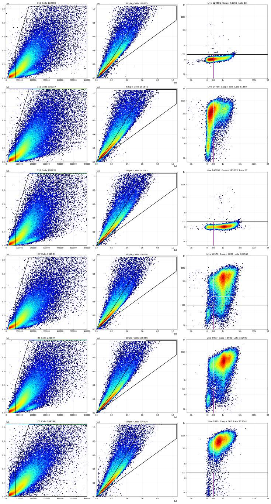
199
agent
All five gates render correctly from the reloaded `gates.xml`. One last check: how many events the upper-left diagonal edge of the Cells polygon removes.
200
tool call · Bash
cd /task; python - <<'EOF'
import sys; sys.path.insert(0,'/task/work')
from common import *; from gates_def import *
for w in ['A1','C7','C10','C11','B6']:
d=load(w); box=(d['FSC-A']>69999.5)&(d['FSC-A']<1039999.5)&(d['SSC-A']>999.5)&(d['SSC-A']<1039999.5)
c=inpoly(d['FSC-A'],d['SSC-A'],CELLS); print(w, f'cut by diagonal: {(box&~c).sum()} = {100*(box&~c).sum()/box.sum():.2f}% of box')
EOF201
tool output
A1 cut by diagonal: 38 = 0.03% of box C7 cut by diagonal: 60 = 0.03% of box C10 cut by diagonal: 66 = 0.04% of box C11 cut by diagonal: 109 = 0.05% of box B6 cut by diagonal: 60 = 0.03% of box
203
agent
Both checks pass: the diagonal edge removes only 0.03–0.05% of events. Now writing `notes.md`.
204
tool call · Write
{
"file_path": "/task/outputs/notes.md",
"content": "# Gating notes \u2013 Caspase_KO_RNAswap-rep2 (36 wells)\n\n**Setup.** I built one FlowKit `GatingStrategy` for all wells, using raw uncompensated data (`compensation_ref=\"uncompensated\"`) with no spillover or other value-changing operation. All gate coordinates are in raw channel units and no `transformation_ref` is used. Fluorescence was *viewed* on logicle axes (T=2^20, W=1.5, M=6), so negative values were visible. Every edge on BL1-A and RL3-A is axis-aligned, so the gates are identical on raw or logicle axes. The data are integer-valued, so axis-aligned edges sit on half-integers (for example 300.5). That way inclusive and exclusive boundary conventions give the same counts. FlowKit counts match an independent numpy re-implementation in 35/36 wells; C5 is off by one event on a slanted polygon edge.\n\n| Gate (parent) | Definition (raw units) | Placement rationale |\n|---|---|---|\n| **Cells** (root), polygon FSC-A\u00d7SSC-A | FSC-A \u2265 70 000; SSC-A 1 000 \u2013 1 040 000; FSC-A \u2264 1 040 000; steep upper-left edge (70k, 400k)\u2192(170k, 1.04M) | The left edge sits in the valley between the low-FSC debris peak (25\u201350k) and the cell peak (~120k). The valley shows in both Zombie-negative and Zombie-bright events. The top and right edges sit just below full scale (1 048 575): SSC-A is saturated in 1.2\u20134.3 % of events in *every* well, and those events are excluded. The bottom edge removes the \u221265 536 artefact events. The diagonal edge removes only 0.03\u20130.05 %. Cells = 58\u201367 % of events. |\n| **Single_Cells** (Cells), polygon SSC-H\u00d7SSC-A | Lower edge SSC-A = 0.8\u00b7SSC-H. Upper edge through (100k, 130k), (200k, 276k), (300k, 450k), (450k, 720k), (650k, 1.045M) | The singlet ridge's A/H ratio rises with signal: median 1.06 at SSC-H 50k, 1.2 at 250k, 1.45 at 450k. So the upper edge follows the upper border of the band (ratio 1.30\u21921.60) and cuts off the high-A/H doublet plume. 70\u201386 % of Cells. |\n| **Live** (Single_Cells), rectangle BL1-A\u00d7RL3-A | BL1-A \u2212100 000 \u2026 2 097 152 (whole range); RL3-A \u221220 000 \u2026 300 | The **upper edge of 300** is the density minimum of RL3-A in C11 (Zombie only), at 270. It also lies just above unstained cells (99.9th pct of RL3-A is 321 in C10 and 345 in C12). The **lower edge of \u221220 000** sits far below the negative population: in stained wells, Zombie-negative cells spread down to ~\u22123 000. It drops only the \u221265 536 artefacts. |\n| **Caspase_pos** (Live), rectangle | BL1-A \u2265 300 (open top); RL3-A \u221220 000 \u2026 300 | **BL1-A 300** is where three controls agree. In C7\u2013C9 live cells, the valley between caspase-negative (peak ~50) and CellEvent+ (peak ~700) is at 289. C12 has its negative/positive boundary at ~300. The 95th pct of Zombie-negative cells without CellEvent (C11) is 264, and C11 gives Caspase_pos = 4.0 %. |\n| **Late_apoptosis** (Single_Cells), polygon | Quadrilateral: BL1-A \u2265 300, RL3-A \u2265 1 000 (to 2^21) | It uses the same BL1-A left edge as Caspase_pos, as the strategy specifies. **RL3-A 1 000** is where the Zombie-bright peak of C11 rises out of the 300\u20131 000 plateau. Intermediate events (300\u20131 000, 6 % of C11 singlets) and bright CellEvent-negative events fall in neither gate, as intended. |\n\n**Caveats and deviations.**\n- **The polygon is axis-aligned.** I drew Late_apoptosis as an axis-aligned quadrilateral and gated in raw rather than logicle coordinates. Both are equivalent for axis-aligned edges.\n- **Late_apoptosis has a C11 background.** Dead cells autofluoresce on BL1-A: in C11 the BL1-A median rises from ~160 at RL3-A 1\u20133k to ~650 above 100k. So C11, with no CellEvent, still gives **33.9 % Late_apoptosis**. I tested a slanted or raised left edge. Raising it to 450 lowers C11 to 21 %, but it removes 3\u20136 percentage points of CellEvent+ dead cells in the stained wells. Those wells also show no BL1-A valley above RL3-A 3k, so I kept the C12-derived edge. Read Late_apoptosis against the C11 background.\n- **Wells not used for boundaries.** No boundary was set on C4\u2013C6 (their BL1-A carries GFP) or on C1/C2.\n\n**QC and flags.**\n- **Flagged (2 wells): C1 and C2, clog/interrupted flow.**\n - Both have almost no events in the first ~5 s: C1 has 259 events in that window and C2 has 504, against roughly 28k and 43k expected.\n - The rate then surges and oscillates. The 0.5-s rate CV is 85 % and 54 %, against 5\u201323 % in the other wells.\n - Median SSC-A per bin is unstable: CV 38 % and 68 %, against 8\u201320 %.\n - The populations drift with time: Live goes from 2.5 % to 1.3 % in C1 and from 5.1 % to 2.9 % in C2.\n- **Usable, with notes:**\n - **C7\u2013C11:** the event rate jitters (CV 17\u201323 %), but Live and Caspase_pos are constant over time.\n - **C7:** Caspase_pos is 67 %, against 37 % and 44 % in C8 and C9, and it is stable throughout the run.\n - **A1, C4\u2013C6:** each has fewer than 1 000 Live events (Live is 0.6\u20131 % of singlets), so the Caspase_pos % is less precise (about \u00b13 points).\n - **C4\u2013C6 (GFP):** the GFP+ tail is weak, 0.6\u20130.7 % of singlets above the no-virus 99.9th pct (7 777), against 0.1 % in C7\u2013C9. Their BL1-A caspase readout includes GFP, so use them only as a transduction reference.\n - **Several wells:** the sample runs out in the last 1\u20132 s, affecting \u2264 1.4 % of events. Not flagged.\n- **Controls:** C10, C11 and C12 behave as expected (see `flags.csv`).\n- **Overall viability is low.** Only 0.6\u201310 % of singlets are Zombie-negative in every stained well, including the no-virus controls.\n"
}205
tool output
File created successfully at: /task/outputs/notes.md (file state is current in your context — no need to Read it back)
207
agent
Now a final validation of all deliverables against the spec.
208
tool call · Bash
cd /task; python - <<'EOF'
import flowkit as fk, pandas as pd, numpy as np
g=fk.parse_gating_xml('/task/outputs/gates.xml')
print([ (gid, path) for gid,path in g.get_gate_ids()])
for gid,path in g.get_gate_ids():
gt=g.get_gate(gid); print(gid, type(gt).__name__, [(d.id,d.compensation_ref,d.transformation_ref) for d in gt.dimensions])
c=pd.read_csv('/task/outputs/counts.csv'); print(c.shape, list(c.columns)); print(c.head(5).to_string())
assert c.groupby('file').size().eq(5).all() and c.file.nunique()==36
assert list(c.population[:5])==['Cells','Single_Cells','Live','Caspase_pos','Late_apoptosis']
# re-gate 3 files from saved xml and compare
for f in c.file.unique()[[0,17,35]]:
r=g.gate_sample(fk.Sample('/task/inputs/raw/'+f)); sub=c[c.file==f].set_index('population')['count']
assert all(int(r.get_gate_count(p))==sub[p] for p in sub.index), f
fl=pd.read_csv('/task/outputs/flags.csv'); print(fl.shape, list(fl.columns)); print(fl.reason_category.value_counts().to_dict(), fl.usable.value_counts().to_dict())
assert ((fl.usable=='yes')==(fl.reason_category=='ok')).all()
print(set(fl.file)==set(c.file));
EOF
wc -w /task/outputs/notes.md; ls -la /task/outputs209
tool output
[('Cells', ('root',)), ('Single_Cells', ('root', 'Cells')), ('Live', ('root', 'Cells', 'Single_Cells')), ('Caspase_pos', ('root', 'Cells', 'Single_Cells', 'Live')), ('Late_apoptosis', ('root', 'Cells', 'Single_Cells'))]
Cells PolygonGate [('FSC-A', 'uncompensated', None), ('SSC-A', 'uncompensated', None)]
Single_Cells PolygonGate [('SSC-H', 'uncompensated', None), ('SSC-A', 'uncompensated', None)]
Live RectangleGate [('BL1-A', 'uncompensated', None), ('RL3-A', 'uncompensated', None)]
Caspase_pos RectangleGate [('BL1-A', 'uncompensated', None), ('RL3-A', 'uncompensated', None)]
Late_apoptosis PolygonGate [('BL1-A', 'uncompensated', None), ('RL3-A', 'uncompensated', None)]
(180, 6) ['file', 'well', 'population', 'count', 'parent_population', 'pct_of_parent']
file well population count parent_population pct_of_parent
0 Caspase_KO_RNAswap-rep2_caspase_Group_A1.fcs A1 Cells 115632 All_events 63.065235
1 Caspase_KO_RNAswap-rep2_caspase_Group_A1.fcs A1 Single_Cells 95948 Cells 82.977031
2 Caspase_KO_RNAswap-rep2_caspase_Group_A1.fcs A1 Live 923 Single_Cells 0.961979
3 Caspase_KO_RNAswap-rep2_caspase_Group_A1.fcs A1 Caspase_pos 360 Live 39.003250
4 Caspase_KO_RNAswap-rep2_caspase_Group_A1.fcs A1 Late_apoptosis 87088 Single_Cells 90.765831
(36, 5) ['file', 'well', 'usable', 'reason_category', 'evidence']
{'ok': 34, 'clog_or_interrupted_flow': 2} {'yes': 34, 'no': 2}
True
928 /task/outputs/notes.md
total 60
drwxr-xr-x 2 root root 4096 Nov 10 17:24 .
drwxr-xr-x 5 root root 4096 Nov 10 17:08 ..
-rw-r--r-- 1 root root 16695 Nov 10 17:21 counts.csv
-rw-r--r-- 1 root root 14199 Nov 10 17:23 flags.csv
-rw-r--r-- 1 root root 4866 Nov 10 17:21 gates.xml
-rw-r--r-- 1 root root 5476 Nov 10 17:24 notes.md211
agent
Everything validates. The notes run to about 930 words, which is over a page, so I'm cutting them down.
212
tool call · Write
{
"file_path": "/task/outputs/notes.md",
"content": "# Gating notes \u2013 Caspase_KO_RNAswap-rep2 (36 wells)\n\nI used one FlowKit `GatingStrategy` for all wells on raw, uncompensated data with no value-changing operations. Coordinates are in raw units with no `transformation_ref`. I viewed fluorescence on a logicle scale (T=2^20, W=1.5, M=6), and all BL1-A/RL3-A edges are axis-aligned, so the gates are identical on raw or logicle axes. The data are integers, so axis-aligned edges sit on half-integers (e.g. 300.5) and inclusive or exclusive conventions give the same counts.\n\n| Gate (parent) | Definition (raw) | Why |\n|---|---|---|\n| **Cells** (root), polygon FSC-A\u00d7SSC-A | FSC-A 70 000\u20131 040 000; SSC-A 1 000\u20131 040 000; small upper-left diagonal | The left edge is the valley between the low-FSC debris peak (25\u201350k) and the cell peak (~120k). The top edge sits below full scale, because SSC-A is saturated in 1.2\u20134.3 % of events in every well. The bottom edge removes \u221265 536 artefacts. 58\u201367 % of events. |\n| **Single_Cells** (Cells), polygon SSC-H\u00d7SSC-A | Lower edge A = 0.8\u00b7H; upper edge along the band's upper border (A/H 1.30 at 100k \u2192 1.60 at 450\u2013650k) | The singlet A/H ratio rises with signal (median 1.06 at 50k, 1.45 at 450k). The upper edge follows that rise and excludes the doublet plume. 70\u201386 % of Cells. |\n| **Live** (Single_Cells), rectangle | BL1-A whole range; RL3-A \u221220 000 to 300 | The upper edge is the RL3-A density minimum in C11 (270), just above unstained cells (99.9th pct 321 in C10, 345 in C12). The lower edge sits far below the negative cloud, which spreads to about \u22123 000 in stained wells. |\n| **Caspase_pos** (Live), rectangle | BL1-A \u2265 300; RL3-A as Live | Three controls agree on 300: the valley between caspase-negative (~50) and CellEvent+ (~700) live cells in C7\u2013C9 (289), the negative/positive boundary in C12 (~300), and the 95th pct of C11 Zombie-negative cells (264). C11 gives 4.0 %. |\n| **Late_apoptosis** (Single_Cells), polygon | BL1-A \u2265 300 and RL3-A \u2265 1 000 | The left edge matches Caspase_pos, as the strategy specifies. RL3-A 1 000 is where C11's Zombie-bright peak rises out of the 300\u20131 000 plateau. Intermediate and bright CellEvent-negative events fall in neither gate. |\n\n**Deviations and caveats**\n- Late_apoptosis is an axis-aligned quadrilateral, and all gating is in raw coordinates.\n- Dead cells autofluoresce on BL1-A (in C11 the median rises from ~160 to ~650 as RL3-A increases). So C11, with no CellEvent, still gives **33.9 % Late_apoptosis**. Raising the left edge to 450 would lower that to 21 %, but it costs 3\u20136 points of true CellEvent+ dead cells, and stained wells show no valley above RL3-A 3k. I kept 300, so read Late_apoptosis against the C11 background.\n- I set no boundaries on C4\u2013C6 (BL1-A includes GFP) or on C1/C2.\n- FlowKit counts match an independent numpy re-gating in 35/36 wells. C5 is off by one event on a slanted edge.\n\n**QC and flags**\n- **C1 and C2 are flagged `clog_or_interrupted_flow`:**\n - In the first 5 s there are almost no events (259 and 504 against ~28k and ~43k expected), then surges.\n - The 0.5-s rate CV is 85 % and 54 %, against 5\u201323 % in the other wells.\n - The per-bin SSC-A median CV is 38 % and 68 %, against 8\u201320 %.\n - Live drifts over the run: 2.5 %\u21921.3 % in C1 and 5.1 %\u21922.9 % in C2.\n- **The other 34 wells are usable.** Notes:\n - C7\u2013C11 have rate jitter (CV 17\u201323 %), but Live and Caspase_pos stay constant over time.\n - C7's Caspase_pos is 67 % (C8/C9: 37 % and 44 %) and stable over the run.\n - A1 and C4\u2013C6 have fewer than 1 000 Live events, so Caspase_pos is less precise (\u00b13 points).\n - C4\u2013C6 show a weak GFP+ tail: 0.6\u20130.7 % of singlets above the no-virus 99.9th pct, against 0.1 % in C7\u2013C9. Use them only as a transduction reference.\n - Several wells run out of sample in the last 1\u20132 s, affecting \u2264 1.4 % of events.\n- Viability is low everywhere: Live is 0.6\u201310 % of singlets, including the no-virus wells.\n"
}213
tool output
The file /task/outputs/notes.md has been updated successfully. (file state is current in your context — no need to Read it back)
215
agent
All 36 wells are gated with one gate set, and two wells are flagged as unusable: **C1 and C2**, both for a clog or interrupted flow. All four files are in `/task/outputs/`. `gates.xml` was saved after the last gate change and reloads with `flowkit.parse_gating_xml`. Re-gating files from the saved XML reproduces `counts.csv` (180 rows) exactly, and an independent numpy re-gating agrees in 35/36 wells (C5 is off by one event on a slanted edge).
**Gates** (raw, uncompensated values; no transforms in the gates):
| Population | Gate | Where the boundary comes from |
|---|---|---|
| Cells | polygon, FSC-A ≥ 70,000, SSC-A between 1,000 and 1,040,000 | Valley between low-FSC debris and the cell peak; the top edge drops SSC-A-saturated events, which are 1.2–4.3% of every well |
| Single_Cells | polygon, SSC-A from 0.8× to 1.3–1.6× SSC-H | The upper edge follows the singlet band, whose SSC-A/SSC-H ratio rises with signal |
| Live | rectangle, RL3-A −20,000 to 300 | Lowest point of RL3-A density in C11 (270), just above unstained cells |
| Caspase_pos | rectangle, BL1-A ≥ 300 | Valley in C7–C9 live cells (289), where C12 splits, and the 95th percentile of C11 live cells (264) |
| Late_apoptosis | polygon, BL1-A ≥ 300 and RL3-A ≥ 1,000 | Start of the Zombie NIR-bright peak in C11 |
**What you should know before using the numbers:**
- **Late_apoptosis has a high background.** Dead cells give off their own signal on BL1-A, so C11 (Zombie only, no CellEvent) still puts 33.9% of singlets in Late_apoptosis. Raising the edge to 450 would cut that to 21% but lose 3–6 points of real CellEvent-positive dead cells in the stained wells. I kept 300, as the strategy specifies, so read Late_apoptosis against the C11 level.
- **Viability is very low everywhere.** Only 0.6–10% of singlets are Live, including the no-virus wells.
- **Some Caspase_pos values are imprecise.** A1 and C4–C6 have fewer than 1,000 live cells, so their Caspase_pos values are good to about ±3 points.
- **The GFP wells (C4–C6) barely show GFP.** Only 0.6–0.7% of singlets are clearly GFP-positive, against 0.1% in the no-virus wells. Their caspase readout also includes GFP signal, so use them only as a transduction reference.
- **C7 stands out among the no-virus wells.** Its Caspase_pos is 67%, against 37% and 44% in C8 and C9. It holds steady through the run, so it isn't an acquisition artifact.
**Flagged wells:**
- **C1:** almost no events in the first 5 s (259, where about 28,000 were expected), then surges. The event rate varies far more than in the other wells (CV 85% against 5–23%), and the Live fraction drifts from 2.5% to 1.3% over the run.
- **C2:** almost no events in the first 5 s (504, where about 43,000 were expected), then an unstable rate until about 22 s (CV 54%). Live drifts from 5.1% to 2.9%.
**Not flagged:**
- **C7–C11:** their event rates are uneven, but the population percentages stay stable over the run.
- **Short end tails:** several wells run out of sample in the last 1–2 s, which affects at most 1.4% of events.
- **C10–C12:** the single-stain and unstained controls behave as expected.
Each well's evidence is in `flags.csv`, and the gate placement is explained in `notes.md`.
final result
All 36 wells are gated with one gate set, and two wells are flagged as unusable: **C1 and C2**, both for a clog or interrupted flow. All four files are in `/task/outputs/`. `gates.xml` was saved after the last gate change and reloads with `flowkit.parse_gating_xml`. Re-gating files from the saved XML reproduces `counts.csv` (180 rows) exactly, and an independent numpy re-gating agrees in 35/36 wells (C5 is off by one event on a slanted edge). **Gates** (raw, uncompensated values; no transforms in the gates): | Population | Gate | Where the boundary comes from | |---|---|---| | Cells | polygon, FSC-A ≥ 70,000, SSC-A between 1,000 and 1,040,000 | Valley between low-FSC debris and the cell peak; the top edge drops SSC-A-saturated events, which are 1.2–4.3% of every well | | Single_Cells | polygon, SSC-A from 0.8× to 1.3–1.6× SSC-H | The upper edge follows the singlet band, whose SSC-A/SSC-H ratio rises with signal | | Live | rectangle, RL3-A −20,000 to 300 | Lowest point of RL3-A density in C11 (270), just above unstained cells | | Caspase_pos | rectangle, BL1-A ≥ 300 | Valley in C7–C9 live cells (289), where C12 splits, and the 95th percentile of C11 live cells (264) | | Late_apoptosis | polygon, BL1-A ≥ 300 and RL3-A ≥ 1,000 | Start of the Zombie NIR-bright peak in C11 | **What you should know before using the numbers:** - **Late_apoptosis has a high background.** Dead cells give off their own signal on BL1-A, so C11 (Zombie only, no CellEvent) still puts 33.9% of singlets in Late_apoptosis. Raising the edge to 450 would cut that to 21% but lose 3–6 points of real CellEvent-positive dead cells in the stained wells. I kept 300, as the strategy specifies, so read Late_apoptosis against the C11 level. - **Viability is very low everywhere.** Only 0.6–10% of singlets are Live, including the no-virus wells. - **Some Caspase_pos values are imprecise.** A1 and C4–C6 have fewer than 1,000 live cells, so their Caspase_pos values are good to about ±3 points. - **The GFP wells (C4–C6) barely show GFP.** Only 0.6–0.7% of singlets are clearly GFP-positive, against 0.1% in the no-virus wells. Their caspase readout also includes GFP signal, so use them only as a transduction reference. - **C7 stands out among the no-virus wells.** Its Caspase_pos is 67%, against 37% and 44% in C8 and C9. It holds steady through the run, so it isn't an acquisition artifact. **Flagged wells:** - **C1:** almost no events in the first 5 s (259, where about 28,000 were expected), then surges. The event rate varies far more than in the other wells (CV 85% against 5–23%), and the Live fraction drifts from 2.5% to 1.3% over the run. - **C2:** almost no events in the first 5 s (504, where about 43,000 were expected), then an unstable rate until about 22 s (CV 54%). Live drifts from 5.1% to 2.9%. **Not flagged:** - **C7–C11:** their event rates are uneven, but the population percentages stay stable over the run. - **Short end tails:** several wells run out of sample in the last 1–2 s, which affects at most 1.4% of events. - **C10–C12:** the single-stain and unstained controls behave as expected. Each well's evidence is in `flags.csv`, and the gate placement is explained in `notes.md`.